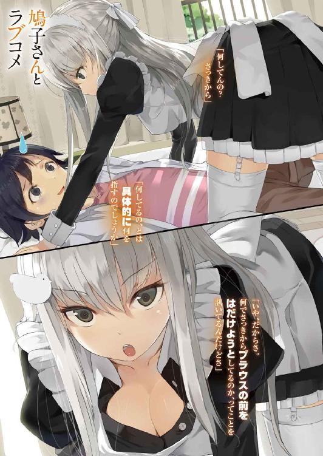

| 鳩子さんとラブコメ (富士見ファンタジア文庫) | |
| 鈴木 大輔 & Nauribon | |
| 富士見書房 (2012) | |



鳩子さんとラブコメ
鈴木大輔

富士見ファンタジア文庫
本作品の全部または一部を無断で複製、転載、配信、送信したり、ホームページ上に転載することを禁止します。また、本作品の内容を無断で改変、改ざん等を行うことも禁止します。
本作品購入時にご承諾いただいた規約により、有償・無償にかかわらず本作品を第三者に譲渡することはできません。
本作品を示すサムネイルなどのイメージ画像は、再ダウンロード時に予告なく変更される場合があります。
本作品は縦書きでレイアウトされています。
また、ご覧になるリーディングシステムにより、表示の差が認められることがあります。
口絵・本文イラスト nauribon
目次
『女の子とひとつ屋根の下で暮らす』
──というシチュエーションについて、あなたはどうお考えだろうか？
うらやましいと思うだろうか？
あるいはねたましいと歯嚙みするだろうか？
是非もない。確かに素晴らしい状況だと僕も思う。
想像するだに輝かしい、胸のときめくシチュエーションだ。そんなの確かめるまでもなく、疑うまでもない。
ところで僕は今、女の子とひとつ屋根の下で暮らしている。
噓でも冗談でもなく、言葉あそびとか叙述トリックとかでもなく、正真正銘、天に誓って真実、僕は女の子とひとつ屋根の下で暮らしている。それもその子と二人きりでだ。
ちなみに僕の祖父はちょっとした財閥の総帥であり、僕はその財閥の後継者候補のひとりだったりする。さらに言うと、その女の子というのは僕のメイドさんで、僕と同い年の十六歳で、掛け値なしの美人だったりもする。
さて重ねて訊こう。
そういう状況に置かれている人間を、あなたはうらやましいと思うだろうか？
......ああそうそう、もうひとつ付け加えておく情報があった。
実は今、僕はそのメイドさんに押し倒されている。
ちょっと危ういくらい整った顔が僕の目の前にあり、相手の体温を肌で感じ取れる距離に均整のとれた身体があり、透きとおったきれいな瞳でじっと見つめられている──というそんな状況。その気になればいつでも彼女を抱きしめられるだろうし、その気になればいつだって彼女のくちびるを奪うことだってできるポジショニングに、いま現在僕はいる。
さてどうだろう？
そういう状況に置かれている人間を、あなたはうらやましいと思うだろうか？
この僕、平和島隼人のことを、あなたはうらやましいと思ってくれるだろうか？
うらやましい？
本当に？
......そうかありがとう。あなたは僕の救世主だ。
ではさっそくで恐縮なのだけど、ちょっくら僕と立場を替わってもらえないだろうか？
大金持ちの跡継ぎ候補で、美人のメイドとふたり暮らしで、しかもそのメイドさんに押し倒されている──このおいしいシチュエーションを、そっくりそのままあなたに差し上げるから、あとはよろしくお願いしたい。まさしく棚からぼた餅の大ラッキー、これほどおいしい話はないはずだ。
......え？ なんか怪しいって？
いやいやそんなことはない。僕はあなたをだます気なんてまったくない。
財閥の後継者候補であるのも本当だし、美人のメイドとふたり暮らしなのも本当だし、そのメイドに押し倒されていてニアミス状態なのも本当だ。ひとつも噓なんかついちゃいない。
そりゃまあ確かに、財閥の後継者候補ではあっても生活レベルは平均以下だし、そもそも生活費はメイドが管理してるから僕が自由に使えるわけじゃないし、そのメイドは掛け値なしの美人だけどひどく口が悪くてドＳだし、『帝王学を教え込むため』とか称して僕に様々な無茶ぶりをしてくるけど──でもいいじゃないかそんなのは。
あなたが『うらやましい』と心から思ったはずのシチュエーションを手に入れるのに比べれば、その程度のことは些細な問題でしかないはずだ。
だからさあ、ほら。
そんな二の足を踏まず、僕と立場を交換しようじゃないか。
だいじょうぶ保証するよ。あなたが現在の時点で送っているものよりは、まず間違いなく刺激的な人生を送ることができる、ってさ。
百聞は一見にしかずの精神で、四の五の言わず、好き嫌いを言わず、まずは試してみてはもらえないだろうか。残念ながら返品とかクーリングオフとかは利かないけど。......え？ 胡散臭すぎるって？ いやいや心外だよ何を言ってるの、僕はあくまでもあなたのためを思って言ってるのであって、決して自分の境遇を誰かに押し付けようとしてるわけじゃ......あ、待って、ちょっと待って。そんなダッシュで逃げたりせずに、もうちょっと話を聞いて──
＊
「何をぶつぶつ言ってるんですか。気持ちの悪い」
ふいに聞こえた声で僕は我に返った。
「大切な帝王学を教えている最中です。ちゃんと集中してください」
「......え？ あ、うん、ごめんごめん」
目を瞬かせつつ、僕は周囲の状況を確認する。
風呂なしトイレ共同、築四十年の２ＤＫ。
勉強机やタンスやちゃぶ台といった、必要最低限のものしか置いてない、殺風景な僕の部屋。
でもって僕は今、布団に横たわり、エプロンドレス姿のメイドに押し倒されているところ。
ああそうだ思い出した。
今はそういう状況だったよね。
「まさかとは思いますが」
僕を組み敷いた格好のまま、メイドさんは白い目で僕を見て、
「居眠りでもしていたのではないでしょうね？ だとしたら由々しき事態ですが」
「いやいやなに言ってんの、するわけないでしょ居眠りなんて。ていうか、こんな状態で居眠りなんかしようがないって」
「ふむ。それもそうですね」
と、彼女は納得してくれたようである。
事実、僕は居眠りなんかしていない。現実逃避のあまりうっかり意識が遠のいて、益体もない空想にふけっていただけで。
「それではレッスンの続きをしましょう。為替相場のコントロールと、そこから派生するリスクとリターンについてはざっと説明しましたね。では次に、為替の変動が株式市場に与える影響について──」
「ええと、あのさ。その前にちょっと訊きたいんだけど」
「なんですか」
「帝王学とやらを教えてくれるのはいいし、僕だって学ぶのは吝かじゃないけどね。でもさ、これって本当に必要なことなの？」
「為替の知識であれ株式の知識であれ、莫大な財産を運用する立場の人間が理解しておくのは当然のことですが」
「いやいや。そうじゃなくてさ」
僕は首を振りつつ、
「勉強するならさ、普通にちゃぶ台とか机でやればいいでしょ？ なのに何で布団の上でやらなきゃいけないの？ それも僕が君に押し倒された格好で」
そう、普通に考えればどうみてもおかしい。
勉強ってのはもうちょっと、それにふさわしいシチュエーションでやるもんだ。学校の教室で、図書館で、ちゃんとした椅子に座ってやればいい。何もこんな、教師役のメイドさんに上から覆いかぶさられながらという、不都合きわまりない体勢でやる必要はない、と思うのだけど。
「分かっていませんね」
がしかし彼女は──メイドの鳩子さんは、ほとんど表情を変えないままじっと僕を見て、
「帝王学というものは何も、経済について学ぶばかりが全てではありません。下々の頂点に君臨するにあたって必要なすべてを、広範囲にわたってくまなく網羅しなければ。まして平和島財閥の後継者たらんとするならば、いかなる分野においても完璧なパフォーマンスを発揮することが求められます」
「はあ、いやまあそれは分かるけど」
「お分かりいただけましたか。それではレッスンの続きを」
「いや、僕が理解したのは君の言い分だけだよ。今なんでこんな体勢で勉強しなくちゃならないのか、肝心のそこがぜんぜん説明不足なんですけど」
「なんとまあ、嘆かわしい」
鳩子さんは大げさに首を振った。
あたかも質すまでもない一般常識を問われたみたいに。
「そんなの決まっているじゃありませんか。これもまた、帝王学の極意をあなたに伝えるための手段のひとつだからです」
「......こういうきわどい体勢でいることの？ どこが？」
「平和島財閥の後継者たる者は、女というものに対するあつかいを熟知している必要があるからです。歴史を紐解いてみるまでもなく、殿方にとって最大のアキレス腱となるのは常に女の存在でした。人類発祥の太古より今日に至るまで、いかに多くの英雄豪傑が女性の色香に惑わされ、志半ばに倒れていったことか」
「はあ。そりゃまあそうかもだけど」
「女の身体に惑わされているようでは、人々の頂点に立つことなど夢のまた夢。よしんばその高みにたどり着いたとて、遠からずその地位から引きずり下ろされることは必定。ゆえに今こうしてわたくしが身体を張り、あなたに女の色香の何たるかを伝えているのです」
「あー......まあ言ってることは分からなくもないけど」
鳩子さんからふんわり香ってくるいい匂いをなるべく意識しないようにしつつ、
「でもさ、正直こんな状態じゃ集中なんてできないよ。せっかく経済のこととか教えてもらってるのにノートも取れないし、そもそも半分も耳に入ってこないし」
「だからこそ意味があるのです」
がしかし、僕の苦情にも鳩子さんは耳を貸してくれない。
「この状態が勉学にふさわしいものでないことは、重々に承知の上。ですが坊ちゃまにおかれましては、逆境にあってもなお平常心を保つことのできる精神力を養っていただきたく存じます。この程度のことで集中できないなどと弱音を吐かれては困ります」
「いや、そうは言うけどね。僕はごくまっとうな高校二年生なわけで、こうやって君と極端に距離の近い状態で何かをやれっていうのはいかにも無茶というか、そもそも効率が悪いんじゃないかと思うわけで──」
「坊ちゃまを教育するにあたっては、一切の権限がわたくしに一任されています」
眉ひとつ動かさず、ぴしゃりと言い切る鳩子さん。
「その権限は大だんなさまから──平和島財閥総帥たる平和島源一郎さまから、わたくしが直々に仰せ付かっているもの。わたくしのやり方に異を唱えるということは、大だんなさまのやり方に異を唱えるのと同じこと。それと承知であれば坊ちゃまの言い分を聞かせていただきます」
「あー......はい。分かりました」
「ご理解いただけて嬉しく思います。ちなみにですが坊ちゃま」
「え？ なに？」
「これはあくまでも仮定の話ですが。もし仮に、この程度の状況でわたくしに欲情し、勉学に対する集中を切らそうものなら──」
「......ものなら？」
「財閥後継者たる資格なしと判断し、その地位を即座に剝奪。その上でわたくしからのお仕置きを受けてもらうことになります」
「......ちょっと厳しすぎない？ それって」
「教育係たるわたくしの立場をも台無しにする行為なのですから、その程度は当然です。加えて後継者候補でもなんでもなくなった人に対しては、わたくしも一切の手加減なくお仕置きができるというもの。そうなった時が楽しみですね」
楽しみなのかよ......
声に出さないでボヤきつつも、僕は心のスイッチを切り替える。
とにかく僕の生殺与奪のすべては、このメイドさんが一手に握っているのだ。最終的には彼女に従うしかない。
「それではレッスンの続きを。為替と株式の相場が密接に関係しているのは、これはもう周知のことと思いますが、通貨の種類と各国の市場によって様々な特徴が現れ得ます。たとえばアメリカと日本の市場においては──」
僕を押し倒した格好のまま、鳩子さんはふたたび経済の知識について語り出した。
彼女は教科書も参考書も用いない。僕の目と鼻の先で、吐息が直に肌に触れる距離で、じっと僕の目を覗き込みながら、ひたすらマンツーマンの個人レッスンである。
なんというか、実に斬新な教育法だ。
というか、ごく単純にシュールすぎるだろこれ......セリフを変えたらそのままアダルトビデオに様変わりするような体勢じゃ、教育もへったくれもないと思うんだけど。
そもそもさっきも言ったけど、僕はごくまっとうな趣味志向をもった男子高校生なわけで、鳩子さんみたいな美人とこんな状況でいたら、何も思うところがないわけがないわけで。そもそもたった三十センチの距離で女の子と顔を合わせる機会なんか、そうそう僕が経験してるわけがないというか、正直言ってこの状態のままずっとレッスンが続くとか生殺し以外の何物でもないというか、ほとんど拷問に等しいというか、それにしてもほんと鳩子さんって綺麗な顔してるなあ。肌はつやつやで真っ白だし、シミどころかホクロひとつないし、切れ長の瞳を飾る睫毛は長く濡れて、同い年とは思えないくらい大人びてて、あーもーやっぱり話が半分も耳に入ってこない──
「集中できないようですね」
鳩子さんの冷徹な指摘が、僕を我に返らせる。
「まったく嘆かわしい、この程度のことで心を惑わせるとは。そんなことでは平和島の家名を継ぐなど夢のまた夢、身のほど知らずの極みというものです。大いに反省してください」
「いやでも、そうは言うけどもさ......」
「確かにわたくしはスタイルも抜群で、誰もが見惚れるような美人ではありますし、坊ちゃまならずとも心惑わされるのは当然です。同情の余地は少なからずあると言えるでしょう」
「はあ」
「しかしながら、それはあなたがあくまでもごく一般の、どこにでもいるありきたりの人間であった場合の話。今のあなたはただの一般人ではなく、将来は平和島財閥が保有する国家予算規模の財産を運用していこうとしている身。であるからには、魔性の魅惑を放つわたくしを前にしても、心を常に乱さず保っておく必要があります。お分かりになりますね？」
「うんまあ、それはそれとして......ねえ鳩子さん、ひとつ訊きたいんだけど」
「何でしょう」
「何してんの？ さっきから」
「何してるの、とは具体的に何を指すのでしょうか。平和島を継がんとする身であるならば、質問の意図は常に明確にしておくべきであり──」
「いや、だからさ。何でさっきからブラウスの前をはだけようとしてるのか、ってことを訊いてるんだけどさ」
そうなのである。
さっきから彼女は──具体的には僕の注意力の散漫さを再び糾弾し始めたあたりから、襟元のリボンを解き、ブラウスのボタンを外しつつ、じわじわと肌面積の露出度を上げているのだ。色っぽい鎖骨のラインやら、豊かなカーブを描く胸の湾曲やらが、刻一刻と露わになってきて、僕はさっきから目のやり場に困りまくってるんだけど。
「言うまでもありません。これも教育の一環です」
なおも脱衣行為を進めつつ、しれっとした顔で言う鳩子さん。
「この程度のことであっさりと集中力を切らしている坊ちゃまに対し、さらなるハードな教育の必要ありと認めました。そこでこうしてよりいっそうの負荷を掛けることによって、坊ちゃまの速やかな成長を促そうという、そういう試みなわけです」
「いやー......どうなんだろねそれ？ 率直に言って、あまり効果がないように思えるんだけど......」
「教育の方針はわたくしに一任されている、と申し上げたばかりですが？ 何か異存でも？」
「あー......いえ。異存ありません、はい」
「ご理解いただけて幸いです。ちなみに確認するまでもないことですが......この程度の誘惑に負けるようなことがあれば、あるいは血迷ってわたくしに手を出すようなことがあれば、即座に次期後継者たる資格なしとみなしますから、そのおつもりで。もちろんその場合のお仕置きがどれほど苛烈で凄惨なものになるかは、十分に想像がつくものと存じます」
「うぐ......」
「坊ちゃま。わたくしは期待しているのですよ」
と、セリフの内容とは裏腹な冷めた表情で言う鳩子さん。
「このわたくしが四六時中、二十四時間つきっきりで、あなたの教育に奔走しているのですから。そのわたくしの努力にどうか報いていただけますよう、あるいはどうかこの程度の試練などは軽々と乗り越えていただけますよう、切にお願いする次第です」
「......うん。そうだね。頑張らせてもらうよなるべく」
「ご理解いただけて感謝いたします。それではレッスンに戻りましょう。引き続き、為替と株式の相場の相関関係についてですが、それにはまず各個の状況におけるファンダメンタルズの分析を──」
などと講義を進める合間にも、ゆっくりとしかし確実に、柔肌を空気にさらしていく鳩子さん。
すでにボタンはおへそのあたりまで開放された。
ブラに至っては肩紐じゃ飽きたらず、レースに彩られたカップまでさらけ出されている有様で、サイズも張りも申し分のないバストの圧力は、見る者すべてを問答無用に屈服させうるだけの魅惑にあふれかえっていて──
うん。やっぱ無理。
こんな状況で集中なんかできるわけない。
せいぜいが目を奪われないようにするのが精いっぱいで──いやすいません噓つきました。さっきから何度も何度もチラ見してます。いや、そりゃそうだよ、どうあってもそうなるよ。おっぱいも気になるし鎖骨も気になるし柔肌も気になるよ。だって僕、男の子だもん──
「......って。ちょっと。鳩子さん？」
「なんでしょう」
「なんでしょうじゃなくて。なにしてるの？」
僕が見とがめるのも当然だろう。ブラウスをはだけ終えた鳩子さんの右手が、今度はエプロンドレスの裾をつまみ上げたのだ。
「やはり集中力に欠けているようですね坊ちゃま。わたくしがどんな行動を取ろうと、きちんとレッスンに耳を傾けていただかねば困ります」
「いや、でもそう言うけどさ......」
「何度も同じことを言わせないでくださいませ」
なおも言いつのろうとする僕を、ぴしゃりと遮る鳩子さん。
「女の色香に惑わされているようでは平和島の名折れ。坊ちゃまにはその点、返す返すもご承知いただきたく」
「はあ。いや、それは分かるんだけど......」
「これから先、質問の対象はレッスンの内容に関することに限らせていただきます。よろしいですね？」
「......はい」
有無を言わさぬ調子に、沈黙を余儀なくされる僕。
そして再開される講義。
徐々にたくし上げられていくスカート。
露わになっていく、白のストッキングに包まれた長い脚と、色っぽいガーターベルト。
あーもー。
何なのこれ？ 一体なんのＡＶ？ なんの拷問？
こんなことやっててホントに意味あるの？ 仮にこういう状況にも動じない心を鍛えたとして、それってただの朴念仁になるってことじゃないの？ こんな状況を前にして血湧き肉躍らないなんて、それって財閥の後継者うんぬん以前に男として失格じゃないの？
平和島隼人、十六歳。
彼女いない歴もまた十六年。
女性に対して決して積極的ではなかったし、今後もいわゆる『ヘタレ』呼ばわりされていく人生を送っていくことになると思ってたけど......こんな状況で手も足も出ないなんて、いくらなんでも男がすたるってもんだろ？ そうでしょ？ そうだよね？
よーし分かった。
僕がれっきとした男であることを──いや、この俺様が正真正銘の牡であることを、満天下に向けて証明してやる。さあいざ征かん、未知なる地平の彼方へ、めくるめく輝かしき初体験へと、
「手を出せば失格、でございますよ」
だがしかし。
平坦で冷淡な、それでいて究極的にサディスティックな声が、逃れることなど不可能な強力な軛となって俺様の壮挙を食い止める。
「この程度の誘惑に心折れるようであれば、あなたの教育係であり、後見人であり、裁定者でもあるこのわたくしが、全権を委任されていることを根拠にして、独断の即決でもって、あなたが平和島財閥の後継者として不適格であると判断いたします。どのみち平和島の名をその身に背負った暁には、こんなものとは比べものにならない苦難が毎日のように降り掛かってくるのですから」
「......うぐ」
「仮に不適格の判断を下さなかったとしても──この場で安易に手を出すのであれば、わたくしと結婚を前提にしたお付き合いをしていただくこととなります。そして当然の帰結として、わたくしは右も左も分からない夫、すなわちあなたに成り代わり、平和島財閥の全権を掌握することになると思いますが。それでもよろしゅうございますか？」
「......いいえ。よろしゅうございません」
高ぶりが瞬時にして萎み、ため息に取って代わる。
こんな風に逃げ道をことごとく封じられて、それでいて無謀な特攻をかませる男が果たしているのだろうか？ 今の彼女とはほんの短い期間しか付き合いがない俺様、いや僕だけど、それでもハッキリ分かるぞ？ 彼女が有言実行できる人だ、ってことぐらいは。
「さあ坊ちゃま。横道に逸れてばかりいないで、レッスンを先に進めましょう。次は各種の相場をファンダメンタルズの側面からではなく、テクニカルの側面から分析する手法について──」
あーもー。
レッスンなんぞ先に進められるかってんだ、こんちくしょう。
とびきりの美人が半脱ぎの状態で馬乗りになってて、温かい吐息がさっきから耳元をくすぐりっぱなしで、しかも僕って耳のあたりを弄られるのに弱いんだぞ、実は。
さらに言うと僕という人間は、表向きこそおおむね人畜無害なキャラで通ってるけど、性的な趣味は見た目よりぜんぜんディープなんだ。こんな状況で冷静でいられるわけないのは当然として、さっきからとても口にはできないけしからん妄想で頭がいっぱいの状態なんだ。鳩子さんにあんなことやこんなことをしたり、鳩子さんからあんなことやこんなことをしてもらったりする映像が、ずっと頭の中で流れっぱなしなんだ。ちくしょう、鳩子さんに○○したり××したり、あまつさえ△※◆なことをしたい。その真っ白な肌に◎☆を▼★して、さらには○×△なことをやりたいな！ 今すぐ！
......あ。やば。
だんだん意識が遠のいて──
「ふむ。思考回路がショートしてしまいましたか」
ぼやけていく視界の中で、鳩子さんが何か言っているのが見える。
「実に嘆かわしいことですが、今日のところはまあ、このあたりで堪忍して差し上げましょう。レッスンの続きはまたいずれ」
そう聞こえたのを最後に僕は完全に意識を手放して、昏倒という名の自己防衛手段に訴え出ることになったのだった。むろん、自主的な意志とはまったく無関係に。
＊
──お見苦しいところを見せてしまった。
とにかくまあ、この物語の主人公である僕と、僕のメイドである鳩子さんの関係は、およそこんな感じである。
ご理解いただけない？
うん、そうだと思う。ここまでの展開で描写してきた内容は、ある意味じゃ僕と鳩子さんの関係のほぼすべてなのだけど。できるだけ簡潔に、それでいて十分な情報を伝えられるよう、いま少しの努力をさせていただきたい──僕とふたり暮らしをすることになったこのメイドさんについて。
名前は平和島鳩子。年齢は十六。
身長は百六十よりちょっと低いぐらい。スリーサイズは不明だけど、グラビアアイドルぐらいなら余裕でこなせるレベル。作り物じみて整った容貌が特徴的な美人で、表情はめったに動くことがないし、声の抑揚が変化することもほとんどない。
でもって彼女は、僕のメイドであるというだけでなく、僕の教育係であり、後見人であり、裁定者であり、さらには幼なじみであり、従兄妹であり、妹でもあり、僕の将来のお嫁さん候補でもある。
......訳が分からないって？
安心してほしい。僕も同感だ。
むしろ僕がこうして語り部となり、益体もない物語をつづっているのは、他ならぬ僕自身が僕の置かれている状況を、あるいは平和島鳩子という同い年の女の子を理解するための、ひとつの手段として認識してもらった方がいいかもしれない。なんせちょっと前までの僕は、財閥やら何やらとは何のしがらみもない、いわゆる普通の高校生だったのだから。
さて前置きが長くなってしまった。
ともあれ語っていくとしよう。同じ姓を持つ僕と彼女の、波乱万丈なようでいて平々凡々たる、財閥の後継者あらそいが絡んでいるにしては、思いのほか取りとめのない物語を。
第一章 彼女は僕のメイドで妹で幼なじみで鬼教官
本題に入る前に一点。
何よりもまず明確にしておかなきゃならないのは、平和島という一族についてだろう。
先にも述べたとおり、平和島家は莫大な資産を有する財閥の頂点に君臨している。
その保有する資産の価値は、日本円にして数十兆とも言われてるけど、実態は定かではない。平和島の資産はあまりにも広範囲に分散しているため、その実態を把握するのは難しいからだ。
加えて言うならば、そもそも『平和島財閥』という呼称からして、膨大な資産価値に与えられた一種の便宜的な呼び名にすぎず、そういう名前の法人があるわけでもなければ組織があるわけでもない。むろん、長者番付のトップに名前が出てきたりもしない。本当の金持ちとか、あるいは真の黒幕というやつは、決して表舞台には姿を現さないものだから。
で、その平和島家の家長であり、巨大財閥の総帥でもあるのが、平和島源一郎というじいさんである。
せいぜい一流半ていどの家格だった平和島家を、ほとんど一代にして世界規模の名家に化けさせた、知る人ぞ知る怪物だ。
その経営手腕や経済感覚は、いま現在の平和島の隆盛をみれば一目瞭然で、半世紀以上にわたって源一郎じいさんはイケイケのウハウハで、この世のほとんどあらゆる栄華を手に入れたかに見えたのだけど。たったひとつだけ、どうしても手に入れることができないものがあった。
自分と同等かそれ以上の後継者、である。
じいさんの子供たちは、極度の芸術家肌だったり、還暦ちかくになっても反抗期まっさかりだったり、母親の胎内にやる気をそっくり置き忘れて生まれてきたりと、ハッキリ言って巨大財閥の後釜に据えるには不適格きわまりない人たちだった。子宝にはけっこう恵まれたじいさんだけど、その子供たちは後継者としての資質にまるで恵まれず、いまだにそのことを折に触れて愚痴るのだ──という旨の証言を、僕は複数の筋から聞かされている。
で、結局のところじいさんは、自分の子供に跡を継がせるのはあきらめ、一族から広く人材を募って後継者を育成しようとした。そのひとりがこの僕、平和島隼人というわけである。
家出も同然に出奔し、以降は絶縁状態だったうちの母が、何を思ったか急にじいさんと和解し、広壮かつ重厚な平和島家の豪邸に僕を連れていったのが、ほんの二週間前のこと。
でもってあれよあれよという間にいま現在。
僕は風呂なしトイレ共同、築四十年の２ＤＫで、『帝王学を短期間のうちに身体に叩き込む』とかいう名目のもと、今日から美人のメイドさんとふたり暮らしを始めたばかりで──
「坊ちゃま。手が止まっておられます」
と、そこで僕を咎める声。
「沈黙のうちに作業に没頭するのであれば結構ですが、没頭するあまり作業が滞るようでは本末転倒です。しっかりなさいませ」
「あ、うん。ごめん」
鳩子さんの冷徹な視線に射貫かれ、あわてて作業に集中しようとする僕だけど。どうにもやっぱり、解せないというか腑に落ちないことがある。
「あのさ鳩子さん」
「なんでしょう」
「すっごい根本的な疑問なんだけど。僕らのやってるこれって、どういう意味があるの？」
「働いて、その対価としてお金を受け取り、それをもってわたくしたちの生活費にするという、極めて重要な意味がありますが。それが何か？」
「いやそうじゃなくてさ。なんでこの仕事なの、ってことを訊いてるんだけど」
慣れない作業に四苦八苦する自分の手元を見ながら、僕は小さなため息を漏らした。
細い針金と紙切れを組み合わせて細工し、決められた手順でお花の形にする。
延々と続く単純作業。報酬はお花一本あたりたったの一円。
いわゆる『内職』と呼ばれる業務に、僕は生まれて初めて従事しているところ、なのだけど。
「今どき内職て......生活費を稼ぐにしたって、もうちょっと効率のいいバイトなんていくらでもあるだろうに。なんでわざわざコレを？」
「もっとも割に合わないお金の稼ぎ方から学ぶ。それが平和島家の帝王学です」
僕と同じく造花作りにいそしみながら、涼しい顔で鳩子さんは答える。
「事の初めから頂点に立っていては、広い視野は養えません。上から見下ろすよりも、下から見上げて学べ──というのが大だんなさまのお言葉です」
「......むしろ上から見下ろした方が、広い視野を養える気がするんだけど？」
「上しか知らない人間というのは、それはそれで了見が狭いというもの。酸いも甘いも知り尽くして初めて、平和島のてっぺんに立つ資格を得るのです。あるいは山を登る楽しみを知っている者のみが、山を登る意味を知る、と言い換えてもいいでしょう。初めから頂点に立つことしか選択肢のない人生に、いったい何の面白みがありましょうか」
「うーん。そういうもんなのかなあ？」
「それより坊ちゃま。口を動かす暇があったら手を動かしてくださいませ。肝心の仕事がちっとも進んでいないではありませんか」
「いや、これでも精一杯やってるつもりなんだけどさ......なんせ慣れない仕事なもんで、どうにも」
「泣き言は聞きたくありません。わたくしをお手本にして、もっと手早く進めてくださいませ」
「お手本に？ 鳩子さんを？」
無茶言うなよ、と内心でボヤく僕である。
鳩子さんの手際はほとんど神速と呼ぶべきもので、まばたきひとつする間にたちまち完成品が山のように積みあがっていくのだ。そのスピードは僕の数倍にもおよび、ほとんど精密機械と見まがうほど。こんなのをお手本にしろと言われたって、ねえ？
「しっかりしてくださいませ。仮にも平和島の跡継ぎになろうという方が、わたくしごときを手本にしなければならない、そこからしてすでに恥ずべきことなのですよ」
「はいはい、分かりましたよ」
どうあれ、この内職の成果がそのまま僕らのゴハンに直結していることは確かだ。わびしい食生活を回避するためにも成果を上げるしかないよな。ふたり暮らしをする資金は僕らふたりで稼がなきゃならず、その稼ぎ方にも事細かな規定があるというのだから、ほとほと厄介なことである。
──そう、彼女についても話をしなきゃいけないのだった。
平和島鳩子。僕のメイドさんについて。
とはいえ同じ姓を持つ彼女について、僕は必ずしも多くのことを知っているわけじゃない。
なんせ十年以上も音信不通のままそれぞれの人生を送ってきたし、再会したのはほんの二週間前だし。再会してからも様々なゴタゴタが引きも切らなかったし、旧交を温める機会は無いに等しくて──僕の記憶では快活なドジっ子だったはずの鳩子さんが、ハイスペックかつ鉄面皮のメイドさんに変貌してしまった理由なんかも、僕は何ひとつ知る機会を得なかったわけだ。
彼女について分かっているいくつかのこと。
それはたとえば、彼女が僕の幼なじみであるということ──たぶんほとんど唯一、彼女と僕の関係において今も昔も変わらないのがそれだ。まだ僕の母が平和島家と縁を切る前、僕は平和島の屋敷にちょくちょく遊びに出かけていて、そこで知り合ったのが鳩子さんだった。同い年の僕らはすぐに打ち解けて、それ以来僕は足しげく平和島の家に通うようになったし、鳩子さんもお菓子やおもちゃをたくさん用意して僕の来訪を待っててくれるようになった。
僕と彼女が従兄妹同士であることを知ったのは、母が平和島家と縁を切ってしまったあとのことである。僕は鳩子さんのことを、平和島の屋敷に数多くいたお手伝いさんの関係者だとばかり思っていたから、確かに少なからず驚きはしたけれど、でもそれはそれだけのこと。その当時の僕は、鳩子さんと会えなくなってしまったことが、ただひどく残念だった。
彼女が僕の義理の妹にあたることを知ったのは、ほんのつい先日、うちの母が平和島に復縁して以降のことである。これについては僕の与り知らぬところで、僕の父と鳩子さんの母が再婚したことによるのだけど......まあ権力や財産が増えれば増えるほど家族関係がややこしくなるのは、古よりの絶対法則。平和島家もその例外ではなかった、ということだろう。かの巨人・平和島源一郎をもってしても、その法則を覆すには至らなかったようだ。
とはいえこれらのことは、僕と彼女とのいくぶんややこしい関係を示すだけのもので、目下のところそこまでどうこうということはない。
いま現在、僕と鳩子さんの関係においてもっとも重要なのは、彼女が平和島源一郎の全権代行者であり、僕よりも圧倒的に上位の立場にある、ということだ──
「また手が止まっておりますよ」
ふたたび僕を咎める冷徹な声。
「何度も言わせないでくださいませ坊ちゃま。先ほどから集中力を欠くことあまりにも甚だしいのではありませんか？ この仕事が帝王学を身に付けるための第一歩であるという自覚が、どうやらまったく足りていないようですね。なんと嘆かわしい」
「あ。うん。ごめん。つい考え事をしてて」
「大切な仕事の最中に考え事をしていた、と？」
「う。ああいや、つまりその、何というか」
「それは大切な仕事を差し置いてもなお、考えるに値することだったのですか」
「あーうん、そりゃもちろんそうだよ。ここ最近立て続けにいろいろあったからさ。それでつい」
「そうですか。まあ、その程度のことが今ここで考えるに値することであったかどうかは甚だ疑問ですが、仮にそうであったとしても──」
じろり。
向けられるだけで背筋が伸びそうな瞳で僕を見据え、
「それはまったく言い訳になりません。一流の人間であればすべからく、眠っている時を除けば常に何かしら考えを巡らせているものですが、それでもなお彼らは目覚ましい成果を上げることができるもの。坊ちゃまにもまた遠からず、その境地に達していただかねば困ります」
「......はい。がんばります」
いつもながら要求のレベルが高いけど、『そんなの無茶だ』とゴネることはできない。なぜならこうして話してる間にも、鳩子さんの手は僕に数倍するスピードで動いているのだ。目の前でこうまで見事にお手本を見せられちゃ、ねえ？
「ていうか鳩子さん。すっごい手際がいいよね」
「ええ。わたくしは経験者ですから」
さらりと言ってのけてるけど、目にも留まらぬとはこのことだよなホント。もし仮に内職選手権みたいなのがあったら、確実に上位に入賞してるにちがいない。実際問題、彼女であれば造花の内職だけでも食っていけそうな気がする。
でもって、なぜ彼女がここまで内職の技術に長けていて、なおかつ『帝王学』の基礎として重要視しているのかといえば──
「大だんなさまは仰っておられました」
残像が見えそうなくらい素早い速度で手を動かしながら、鳩子さんは昔を懐かしむように言う。
「ご自身が初めてお金を稼いだのが内職の仕事であり、一見して単調で退屈な仕事でありながらもそこから学ぶことは多かったのだと。いわば内職こそが平和島源一郎の原点であり、平和島財閥の礎である、と言うことができます」
「はあ」
「逆に言えばこの仕事から何も学べないようでは、どのみち将来の見込みなし、ということでもあります。しっかり精進してくださいまし」
「う、はいすいません。がんばります」
「坊ちゃま。どうか大だんなさまのご期待に背かれぬよう」
そこで鳩子さんは初めて内職の手を止めて、一字一句を嚙んで含めるように言うのだ。
「わたくしがこうして坊ちゃまとふたりきりで暮らし始めたのは、わたくしが大だんなさまより授けられた帝王学のすべてを余さず坊ちゃまにお伝えするため。同時にそのことは、大だんなさまより仰せつかった厳命でもあります。すなわち坊ちゃまの失態はわたくしの失態でもあるということを、どうぞ肝に銘じてくださいませ」
そうなのだ。
僕とちがって生まれてこの方ずっと平和島家で暮らしていた鳩子さんは、平和島源一郎から直々に帝王学を仕込まれた、いわばエリート中のエリートなのである。
でもってその彼女が、今では僕の専属の教育係になってるわけで──
「あのさ、鳩子さん？」
「作業を滞らせないと約束していただけるのなら質問にお答えしますが」
「う、はい。がんばります。ええと、それでさ」
「なんでしょう」
「ええとさ、鳩子さんは今の状況をどう考えてるのかな、と思って」
「どう考えてるのか、とはつまり？」
「つまりさ、鳩子さんは帝王学ってやつをずっと勉強してきたわけで、でもそれって自分が平和島の跡継ぎになるためだったんだよね？ でも今はじいさんに言われて僕の教育係みたいな感じになってるわけだけど、鳩子さん的にはそれでいいのかな、と思ってさ」
仮にそうだとすれば彼女にとって面白いはずがないし、僕としても少なからず居心地の悪い状況なわけで、今後の身の振りかた的なことをちょっと考えなきゃいけないな、とも思うわけだけど、
「どうぞお気になさいませんよう」
と、内職の作業に戻りながら鳩子さん。
「坊ちゃまを教え導く役目は、尊敬する大だんなさまより仰せつかったもの。わたくしとしては喜んで従うのみです。坊ちゃまがその点について気にかける必要はございません」
「いや、そうは言われても、ねえ？」
「むしろそのことを気にかけて帝王学の修行に身が入らないようであれば、まさしく本末転倒、わたくしは坊ちゃまの教育係としてふさわしくない、ということになります。仮にそうなった場合、わたくしは恥を忍んで役目を返上し、大だんなさまの期待に応えられなかった未熟者という汚名に一生甘んじることになるでしょう」
「えええ？ いやいや、やりすぎでしょそれは。ていうかだいじょうぶ問題ないよ、鳩子さんは僕の教育係としてちゃんとふさわしいから」
あわててフォローする僕だった。
無表情で何てことのないように言ってるけど、彼女の場合は本気でやりそうだから困る。
うーんでもさ、口ではそう言ってる鳩子さんだけど、こうしてツンツンした態度を取るのはその辺が関係してるんじゃないかなー、と思うのだ。彼女って、僕に対してだけそういう態度を取るような気がするし。ほら、さっきも言ったけど、彼女って元々はこんなキャラじゃなかったわけで。
うん。
やっぱアレだな。
やっぱりスッキリしないことはハッキリさせておきたいよな。鳩子さんとふたり暮らしを始めてまだ二日目だけど、この先当分の間はふたり暮らしが続きそうだし。だとすれば、お互い腹に隠し持ったことは何もない状態にしておきたいわけだ。ひとつ屋根の下で同居するからにはそうするべきだと思うんだよな、うん。
「......坊ちゃまは考えていることが顔に出すぎです」
と。
いささか呆れたように鳩子さんが言う。
「その素直さと裏表のなさは、時として有利に働くこともあるでしょう。ですがいつもいつもその有様では先が思いやられます」
「あ、え？ ほんとに？」
あわてて顔に手をやる僕だった。
確かにそれは周りからよく言われることなのだ。思っていたことが表情に表れてしまう、というのは。考え事にのめり込んでいる時なんかは特に、そのクセがハッキリと出てしまう。あまりいいクセではないという自覚はあるので、何とかしたいとは思ってるんだけど。
でもまあ逆に言えば以心伝心というやつで、わざわざ口に出さずとも考えてることが伝わるのであれば、それはそれで便利だと言えなくもない。現に今もこうして説明する手間が省けているわけだし。
「ええとじゃあ、僕の考えてることは分かってくれた？」
「ええもちろん。わたくしは坊ちゃまのお世話係でもありますし、その程度のことは言われるまでもなく理解しております」
「そっか。さすがだね」
「お褒めに与り光栄です」
「で？ 僕が考えてることは、具体的にどんな風に伝わったのかな？」
「はい。今こうして密室の中、わたくしというむしゃぶりつきたくなるような美人とふたりきりでいることについて、坊ちゃまは邪な欲望を抱かずにおれない様子が見て取れます。そしてどんな風に口説けばわたくしを手籠めにできるかについて、大層お悩みでいらっしゃいますね？」
「大ハズレじゃん！」
ぜんぜん以心伝心じゃなかった。
どんな色情狂あつかいなんだよ僕って。ちくしょう、うっかり褒めちゃって大損した気分だよ。
「ハズレでしたか？」
「当たり前だよ！ ハズレと呼ぶのもおこがましいくらいの大ハズレ、髪の毛の先ほどもかすっていないよ！ テストの点でいえば０点を通り越してマイナスだよ！」
「ですが坊ちゃまがわたくしを見る目が常に、ケダモノのそれも同然であることは事実......それほど的外れなことを口にしたつもりはないのですが」
「むしろ君が僕をそんな目で見ていたことの方が心外だ！」
「すると坊ちゃまは、わたくしには何の魅力も感じてはおられないと？ わたくしの存在など取るに足らないものであり、道端に転がる石ころ程度にしか考えていないと？」
「いやそこまでは言ってないでしょ!? なんでそこまで話が飛躍するの！」
「いいでしょう。ハズレだと主張するのであれば、それはそれで結構です。わたくしとしては、ハズレをアタリに変えてみせるまでのこと」
と言って、鳩子さんはスッと僕のふところに潜り込んでくる。
「......えっ」
まばたきひとつの間の出来事だった。
端座して造花を編む作業をしていた体勢から、僕と彼女との間にどっさり盛られていた造花の山の横を通って、鳩子さんは今、僕の肩にしなだれかかっている。
その間、僕はバカみたいに口を開けたまま、彼女の動きをただ眺めるしかできなかった。
あまりにも自然な動きだったから、警戒心をきれいに外されたというのもあるけど......たぶんそれ以上に、いわゆる『呼吸を盗まれた』状態に陥ってたんだと思う。鳩子さんって、武道の方もしっかり心得があるらしいし。
「嘆かわしいですね。こうも簡単に間合いを詰められるとは」
僕の耳元に息を吹きかけるような形で（すでに僕の弱点も把握してるらしい。恐るべし）、鳩子さんは囁きかけてくる。
「平和島財閥の頂点に立とうとするのであれば、いつ何時たりとも気を緩めてはなりません。このようにあっさり懐に入られていては、命がいくつあっても足りないものとお心得くださいませ」
「う。はい。すいません」
「それと、坊ちゃまの疑問にもここでお答えいたします」
「疑問？ 僕の？」
「大だんなさまから直々に帝王学を学んだわたくしが、どうして大人しくあなたの下についているのか。その理由を知りたいのでしょう？」
僕の背中に指を這わせながら、鳩子さんはなおも囁き続ける。
「理由はふたつあります。ひとつには先ほども申し上げたとおり、わたくしは大だんなさまから坊ちゃまのことをよろしくと頼まれております。わたくしにとって大だんなさまの言葉は何より重いもの──それゆえ何があろうとわたくしは大だんなさまの言いつけを守り、坊ちゃまのお世話係として付き従い、坊ちゃまに帝王学の何たるかを叩き込み、坊ちゃまが平和島の跡を継ぐにふさわしいかどうかを見極める次第です」
「......じゃ、もうひとつの理由は？」
「そんなの決まっているじゃありませんか。平和島財閥の後継者候補である坊ちゃまを、その座から引きずり下ろすためです」
しれっとした顔で。
あるいは今晩の夕食のメニューでも読み上げるような顔で。
ひとつ目のものとは相反する理由を、鳩子さんは淀みなく口にした。
「ご存じのとおり、わたくしは財閥の後継者候補のひとりであり、そのためにふさわしかるべく帝王学を学んできた身です。そんなわたくしが坊ちゃまに対してどのような感情を抱いているか、もちろんお分かりでいらっしゃいますよね？」
否やはない。
十年ぶりにふらりと平和島家に戻ってきて、あれよあれよという間に有力な後継者候補になりおおせた──それが僕の立ち位置である。鳩子さんから見た僕は、油揚げをかっさらっていったトンビにも等しい存在だろう。そんなトンビを生かしておくだけじゃなく、敵に塩を送るような真似をしなきゃならないとあっては......それはもう皮肉もいいところ、業腹の極みというものだ。
「ですが不幸中の幸いにして、わたくしには坊ちゃまの才能を見極めて、財閥の後継者としてふさわしいのか判断を下す役目も与えられました。生かすも殺すも思いのまま、あなたの命運はわたくしの手にすべて委ねられた、と言っても過言ではありません」
が、そんなことよりも今は背中である。
この背筋を這う、指先の感触といったらもう──かゆいところに手が届くというか、まさに心得た感じというか。おかしな表現だけど、僕のすべてを知り尽くしているというか。
こんちくしょう。さては僕の弱点が背中にもあるってことを知っての狼藉か!? こんなことを続けられたら、鉄壁を誇るはずの僕の忍耐力が、手抜き工事のビル以下の強度へと骨抜きにされてしまう！
「むろん、言うまでもないことではありますが」
だがしかし。
そこで僕のパッションに冷や水を浴びせる冷徹な声が。
「この程度のことで平常心を失うようではお里が知れるというもの。坊ちゃまのやることなすことすべてがわたくしの査定の対象となっていることを、ゆめゆめお忘れなきよう」
「......ここで下手な真似をすればクビが飛ぶ、と？」
「ご理解が早くて助かります」
微笑みひとつ見せることなく、しれっとのたまう鳩子さんだった。
まさしく生殺し。僕としてはただひたすら耐え忍ぶしか選択肢がない。
いやはや、参ったなしかし──自分の立場を改めて認識し、途方にくれる僕である。
つまり僕は、最大の味方であると同時に恐るべき敵でもある人間と、ひとつ屋根の下で暮らしつつ、折に触れて仕掛けられるこういった『試練』を、ことごとく乗り越えていかなきゃならないわけだ。
呉越同舟？
あるいは面従腹背？
はたまたそれらを足して二を掛けたような？
いずれにせよ激しくストレスの溜まる状況であることは確かだ。おまけにそんな状況下において、『帝王学』とやらを修めなきゃいけないという。
......うーん。やっぱ誰か替わってくれないかな？ これ。
いやまあ、もちろん本気で言ってるわけじゃないけどね。今の立場を誰かに譲るつもりはないし。
「さて、無駄話が長くなってしまいました。それでは内職の続きをいたしましょう」
「......そうだね。がんばって仕事しないといいゴハンを食べられないもんね」
「ご理解が早くて助かります」
「ところでさ鳩子さん」
「なんでしょう」
「そんな風にしなだれかかったままでいられると、すっごいやりにくいんだけど？」
「どうぞお気になさらず。ご自分の仕事に集中なさってください」
「いや、そうは言われてもね？ 耳元に息を吹きかけられたり、背中に指を這わされたりするとね、どうしたって手元が狂っちゃうというかね？」
「平和島財閥の後継者たる者、いついかなる状況でも己の仕事に集中できるようでなければ困ります」
「うげ。ここでもそれを持ち出す？」
「ちなみにわたくしに割り当てられた分の内職はもう終わりましたので。あとは坊ちゃまが残りのノルマを果たすだけです。頑張ってくださいませ」
「はーい......」
耳にぞわぞわ。
背中にびくんびくん。
前門の虎、後門の狼的な状況を強いられつつ、メイドの皮を被った絶対者との今後を思って途方に暮れながら、僕は紙と針金でできた花を作る作業を再開するのだった。
＊
そんなこんなで青息吐息のうちに内職を終え、待ちに待ったお食事タイムが近づいてきた。
風呂なしトイレ共同、築四十年の２ＤＫ。夕暮れ時の台所から届いてくる炊事の音。
万能メイドである鳩子さんは今、腕によりを掛けて晩ごはんを作っている最中だ。
うん。
いい匂いだ。
この部屋に引っ越してきたのが昨日のことで、昨日は荷解きの作業やら何やらでバタバタしてたから、鳩子さんと暮らし始めるのは実質的に今日から、ということになる。でもって朝と昼は適当なありもので済ませたから、彼女の手料理を味わうのは今回が初。
いやはや。いいもんだね。
女の子から手料理を作ってもらえるってのは、まったくもって役得なことだよね。これひとつを取っただけでも、平和島の後継者として名乗りを上げた甲斐がある、ってもんだ。たとえそれが、スパルタ教育の合間のほんのひと時の憩いの時間だったとしても。
そう。スパルタ教育にも休息が必要、ということは鳩子さんも理解してくれてるらしく、彼女が食事を作ってくれてる今、僕は心置きなく寝転がることを許されている。そのあたりは武士の情け、あるいは幼なじみのよしみ、ってことかもしれない。
しかしまあ、ずいぶんと立派になったよなあ──と、台所からちらほら姿の見えるメイド服を眺めながら僕は思う。昔はもっとおっとりしてて、何をやらせても要領が悪くて、ひどく泣き虫な子で、いつも誰かがそばについていないと心配な子だったけど。今じゃ別人と言われてもうっかり信じてしまいそうなくらい変貌してしまった。
むろん、彼女をそんな風に鍛え上げたのは平和島家の現当主。
豪快でいい加減でそのくせ芯の一本とおった、肌艶も目の輝きも子供みたいに若々しい、まるで立志伝中の登場人物みたいな、ほとほとウンザリさせられるのと同時に大いに愛すべきクソじいさん──平和島源一郎に他ならない。じいさん、よっぽど鳩子さんを見込んで可愛がってたんだろうな。鳩子さんもまた、じいさんのことを崇拝してるみたいだし。
もっとも、鳩子さんはじいさんとは似ても似つかないタイプに育ったみたいだけどさ。トンビが鷹を産む、という言葉はこういう時にも当てはめていいものなのだろうか？ いやでも、あのじいさんはトンビって柄じゃないしな......ライオンがピューマを産んだ、ぐらいに言いなおしておこうか。いや、でもこれもなんか違うよな。
ていうか鳩子さん。
もうかなり長いあいだ台所に籠ってるんだけど、よほど手の込んだ料理を作ってるのかな？ 今日は僕と彼女が再会してから初めてのディナーだし、それを記念してすごいご馳走が出てくるのかも？ いやでもすでに述べたとおり、僕らの食費は僕らが自ら稼いだお金、つまりさっきの内職で受け取ったお給料から出ているわけで、そして内職の報酬というのはホント笑っちゃうくらいスズメの涙で、とてもじゃないけど豪勢な食材を買い込めるようなものじゃ──
「お待たせいたしました」
なんて思ってたところで、鳩子さんが大きなお盆を抱えて台所から出てきた。
「お。ゴハンできた？」
「はい、つつがなく。今日の料理は自信作です」
「おおお～」
鳩子さんのしれっとした、それでいて言葉どおりに自信ありげな顔に、僕の期待は弥が上にも高まり、ちゃぶ台に並べられる料理に釘付けとなる。
菜の花の白和え
豆腐つくねハンバーグ
茶碗蒸しのコンソメ餡かけ
鶏ささみのほうれん草ソースがけ
贅を尽くしたとんでもないご馳走、というわけじゃないけど。それでも十分すぎるほどに僕の胃袋を刺激する、素晴らしい料理たちだ。
「いや、すごいねこれ。すっごいおいしそう」
「お褒めに与り光栄です」
「それにこんなたくさん作っちゃって。よっぽど気合が入ってたんだろうね」
「はい。今日から始まる長い戦いに備えて、十分に英気を養っておく必要があると判断しまして。それでこれだけの料理を作るに至りました」
「うんうん、素晴らしいことだよ。こんな美味しそうな料理を食べたからには、この先も頑張っていかなきゃな、っていう気になるもんね」
「まさしく。腹が減っては戦ができぬ、というのは有名な格言であると同時に、平和島家の帝王学にも通じるものです。美味しい食事は栄養を満たすと同時に心をも満たしてくれますから」
「うんうんそうだよね。ところで鳩子さん」
「なんでしょう」
「ちょっとさっきから気になってたんだけどさ、ひとつ訊いてもいい？」
「伺いましょう」
「すっごい美味しそうな料理なのはいいんだけどさ。なんで一人前しかないの？」
そうなのだ。
どれもこれも素敵な料理ばかりで、香り立つ湯気を嗅いでるだけでも多幸感に満たされそうになるけれど。どれもこれも一皿ずつしか用意されてないのである。
不思議だよね？ この家には僕と鳩子さんのふたりがいて、食事を必要としているのもそのふたりなのに。まるでふたりのうちの片方が実体のない地縛霊か何かで、料理なんて用意するまでもない、みたいな感じに見えるじゃないか。
あ、それともアレかな？ ひとつのお皿からふたり分の料理を取り分けよう、ってことなのかな？ 中華料理屋なんかじゃそういうスタイルも多いし。うんそうか、なるほどなー。お互いの距離を縮め合うための、これは演出のひとつというわけだね。さすがは鳩子さん、気が利くねえ。
「ちがいます」
と。
しかし鳩子さんはにべもなく否定して、
「別にそういう意図で今日の料理を用意したわけではありません。これらの皿はすべてひとりで食べるために用意されたものです」
「あ、そうなの？ いやでもそれだと、僕らのうちのどっちかが、今日の夕食にありつけないっていう、そういうことにならない？ ......あーそうか分かった、鳩子さんは今日は晩ごはんをセーブするつもりなんだね？ さてはダイエット中か何かなのかな？」
「いいえ。わたくしにダイエットなど必要ありません。そんなことをせずとも十分にプロポーションを維持できていますので」
「......ええとじゃあ、つまり？」
「ご安心ください。坊ちゃまにはちゃんと特別な料理を用意してあります」
あ、そうなのか。よかったー。
ごはん抜きの恐怖に一瞬おびえた僕だけど、鳩子さんもそこまで鬼ではなかったらしい。
「平和島家の後継者候補たる坊ちゃまの栄養管理は、メイドであるわたくしの務め。坊ちゃまにひもじい思いをさせるようなことは決して致しません」
そう太鼓判をおして、鳩子さんは台所に取って返す。僕のための『特別な料理』とやらを持ってきてくれるのだろう。
いやはや、いいところあるじゃないか鳩子さん。なんせ僕はけっきょく内職の成績があまり良くなくて、収入にあまり貢献できなかったから、ごはん抜きの処置も覚悟しないわけじゃなかったのだ。鳩子さんの帝王学によれば『働かざるもの食うべからず』だし、帝王学を抜きにしたって働いてない人間が贅沢を言える道理がないからね。
さて、一体どんな豪勢な料理を持ってきてくれるのやら。今の僕はとにかくお腹がぺこぺこだから、どんな料理だって美味しく食べる自信があるよ！
「お待たせしました」
ふたたびお盆を抱えて戻ってきた鳩子さんが、ちゃぶ台に料理を並べてくれる。
僕はそれを、よだれを垂らす犬みたいな気持ちで検分する。
パンの耳。
ゆで卵。
牛乳。
以上。
「......あの、鳩子さん？」
「なんでしょう」
「これだけ？ ですか？」
「ご安心ください。これだけではありません」
「あ、そうなの。良かったー。僕はてっきり、今日の晩ごはんがこんなショボいもので済ませられるのかと──」
「パンの耳と卵と牛乳は、明日の朝の分と昼の分もちゃんと残してありますので。ご存分に今日の分をお召し上がりくださいませ」
「いや、そこは心配はしてないというか、むしろたったいま心配ごとの種がまたひとつ増えたというか。え、何？ 明日もまたこれなの？」
「ゆで卵がお嫌でしたら、目玉焼きやオムレツにすることも可能ですが」
「いやそういうことを問題にしてるんじゃなくて」
「卵と牛乳とパンの耳を合わせて、フレンチトーストにすることもできなくはありません」
「いやだからそういう問題じゃなくてさ」
「その場合はバターと砂糖をたっぷり入れて差し上げますが」
「あ、それはいいね。かなり食べたいかも。......いや、そういうことでもなくてだね」
「己の身の丈に合った人生を送れ、というのが大だんなさまのお言葉です」
いただきますをしてから自分だけ菜の花の白和えに箸をつけつつ、鳩子さんはしれっと言う。
「たくさん結果を出したわたくしは美味しいごはんを食べ、結果を出せなかった坊ちゃまはみすぼらしいごはんを食べる。極めて自然な流れではありませんか？」
「いや、そりゃまあそうなんだけどさ、その点は僕もすっごい納得できるんだけどさ。でもほら、君っていちおう、僕のメイドさんなんだよね？」
「食事の良し悪しは立場の上下によらず、実力と実績の上下によります」
「うん、それはとっても正論でグウの音も出ないんだけどね？ でもやっぱりこう、もうちょっと何とかならない？ いちおう財閥の後継者候補である僕がさ、こういう食生活をしてるってのはさ、やっぱちょっと問題がある気がするんだ」
「財閥のトップである平和島源一郎さまは今もなお、基本的には質素な食生活をなさっていますが？」
「それを言われるとますます僕の立つ瀬がなくなっちゃうし、それに僕ってついこの間まではごく普通の食生活をしてきたわけだから、別に質素な食生活でも問題はないんだけどさ。でもほら、せめてこう、ちょっとだけ君のごはんを分けてもらうとか」
「それでは示しがつきません」
「むぐう」
「それとみすぼらしい食事には違いありませんが、パンの耳と卵と牛乳があれば栄養的にはおおむね十分ですので。どうぞ安心して粗末な食生活をご堪能ください」
立て板に水、馬の耳に念仏。
僕が何を言おうと、ひたすら澄ました顔で突っぱねるのみ。
確かにそこまで鬼ではなかったけど、普通に鬼な鳩子さんだった。ひどい。ひどすぎる。
＊
食事の時間が終われば、ふたたびスパルタ教育の時間がやってくる。
経済や財務の知識はもちろん、礼儀作法の基礎をはじめ、平和島家の来歴や人間関係まで。その授業内容は多岐にわたり、しかも進行ペースは極めて早い。僕は先生である鳩子さんからどやされつつ、必死こいてついていくのが精一杯である。フォアグラ用のアヒルみたいに知識を注ぎ込まれ、脳内回路はショート寸前。
でもって限界ギリギリまで絞られたあとは、鳩子さんといっしょに近所の銭湯へ。
女の子とお風呂に出かけるというウキウキシチュエーションも、心身ともに疲れ果てた僕にはさして魅惑的には映らない。ほとんど習性だけで身体を洗って風呂に浸かって、鳩子さんがコーヒー牛乳を飲む横で僕はぬるい水で我慢し、湯上がりの女の子と並んで歩くというおいしい展開にもほとんど反応できないまま帰宅。
とまあ、ここまできてようやく僕は気づくのだ。
鳩子さん流スパルタ教育の洗礼を受けて感覚がマヒしてきた僕は、まるで意識が回らなかった。ここから先、『いっしょにお風呂に出かける』なんてのが可愛く思えてくるようなシチュエーションが控えていることを。
「さて。それでは明日に備えて寝るとしましょう」
てきぱきと布団を敷き終え、万端に睡眠の準備を整え終わった鳩子さんが、例によって感情の読みづらい顔で言った。
「平和島の頂点に立たんとする人間であれば、寝る時間を削って修行に励むのが本筋ではありますが。今日はまだ序の口ということで、心と身体の英気を養うことに重点を置くことにします。さあ坊ちゃま、速やかに睡眠をとってくださいませ」
「あーいや。待って。ちょっと待って」
問答無用で明かりを消そうとする鳩子さんを、僕はあわてて止める。
「何でしょう。お手洗いをまだ済ませていなかったのでしょうか」
「いやちゃんと済ませたよ。そうじゃなくてさ」
「するとあれですか。坊ちゃまは寝る前に何かを食べていないとダメなタイプなのでしょうか」
「そういう人もたまにいるらしいけど、僕は大丈夫。さっきしこたま食べたパンの耳でお腹がいっぱいだよ。だからそうじゃなくて──」
「さては坊ちゃま、部屋を真っ暗にすると寝られない人なのですね。子供じゃあるまいし何と嘆かわしい。電気代を節約する意味でも、ここは部屋の明かりをすべて消して、ちゃんとした暗闇の中で睡眠をとっていただかねば」
「いやだから！ 話を聞いて！」
適当な理由をつけて流そうとする鳩子さんを制して、僕は指摘する。
「僕が突っ込みたいのは、ふたりで寝るのにどうして布団が一組しかないのかってことと、そもそも鳩子さんが自分の部屋で寝ようとしないで僕の部屋にいることについてだよ！」
そう、そうなのだ。
しれっとした顔をしてるけど、ここは僕の寝室として使われるはずの部屋であり、鳩子さんがこの期に及んで居ていい場所ではないはずなのだ。
なのにメイド服からパジャマに着替えた鳩子さんは、畳の上に正座しつつ何食わぬ顔で、
「何故かと問われれば言うまでもなく、これも帝王学の一環だからです。平和島財閥の総帥ともあれば、寝床に愛人のひとりやふたりは侍らせていて当然。この程度のことに動じているようでは、まだまだ未熟と言わざるを得ませんね」
「なにおう。別に僕は動揺してるわけじゃないぜ？ 鳩子さんが僕といっしょに寝てくれるって言うんなら、ああ歓迎するさ、大歓迎だともさ。鳩子さんみたいにきれいな人と同じ布団で寝られるなんて、男としてこれほどハッピーなことはないからね」
「それは頼もしいお言葉ですね。わたくしも教育係として嬉しく思います」
「なんだ、じゃあ僕らの思惑は一致してるんだね。君は僕といっしょに寝る理由があるし、僕は君といっしょに寝るのにやぶさかじゃない。需要と供給の一致ってやつだよね。もっとも望ましく、もっとも幸福な、経済原理のあるべき姿だよ」
「まさしくその通りですね。坊ちゃまにも帝王学の考え方が板についてきたようで何よりです」
「......でもあれでしょ？ 僕と君がいっしょに寝て、もし僕が君におかしな真似をしちゃったら、その場で即座に失格なんでしょ？ 欲望に負けたとか何とか言って」
「まさしくその通りですね。坊ちゃまにもお約束の流れというものが身に付いたようで何よりです」
しれっとした顔で言う鳩子さんだった。
そうなんだよなー。これがあるからなー。
据え膳食わぬは男の恥。僕としては力及ばぬながら、こういうシチュエーションが訪れたからには全力を尽くしたい所存なんだけど、そうはさせてもらえないんだよな状況が。
「とはいえ坊ちゃま。何事にも抜け道があるものです」
「抜け道？ というと？」
「わたくしに手を出しつつ、それでいて帝王学にもとることのない、そういう裏技です」
「え。そんなのがあるの？」
「あります」
と言って。
鳩子さんは四つんばいの姿勢のまま、僕へにじり寄ってくる。
まるで獲物を狙いすえた豹のように、音も立てず。
「臥所においてわたくしを、一切の文句もつけようがないほど完璧に満足させる。そういうことであれば何の問題もありません。女の心と身体を満たすのは、殿方にとってもっとも大切な仕事であり、帝王学的にも必修科目と言っていいスキルですので」
かすかに漂う、お風呂上がりのシャンプーの香り。
これまたお風呂の影響なのか、少しばかり火照った頰。
パジャマの胸元からのぞく深い谷間。
そしてゴクリと鳴る僕の喉。
「いかがでしょう？」
「ん、む。いや。確かに魅力的な抜け道だね、それ」
「左様でございましょう」
「でも魅力的だけどハードル高くない？ ちょっとでも足を滑らせたら谷の底まで真っ逆さま、みたいなヤバい山道に思えるんだけど、それって」
「危険であり、困難であるからこそ、挑みかかる価値があるというもの。平坦で何の障害もない道を行くのに何の魅力がありましょうか」
「いや、そりゃそうなんだけどねー」
「まして平和島の跡を継ごうという方であればこの先、あえて火中の栗に手を出さねばならない時もありましょう。この程度のことで尻込みしていては先が思いやられるというものです」
「でもそれってさ、鳩子さんをちゃんと満足させられればいいけどさ。もし満足させられなかった場合はどうなるわけ？」
「むろん、その場合はお約束の流れになるかと」
平和島の跡を継ぐ資格なし。
後継者候補レースからは即座に脱落、っていういつものパターンね。
「さあ坊ちゃま。いかがいたしますか？」
「いや。うん。うーん......正直ね、ものすごく魅力的な提案なんだよね」
「左様でございましょう」
「提案だけじゃなくて、鳩子さんも魅力的だし」
「仰るとおりでございますね」
「だから僕のいたいけな少年ハートは、沸き起こる興奮を抑えるのがとっても大変なくらいハッスルしてるんだけどね」
「年頃の青少年として極めて正常な反応です。堂々とハッスルしてくださいませ」
「でも僕、なんせこういうことが初めてなもんで、鳩子さんを満足させられる自信がまったくありません。なのでまた別の機会によろしくお願いします、ってことでどうでしょうか？」
「なんとまあ嘆かわしい」
目を見開き、大げさなアクションでため息をつく鳩子さん。
「ここまでお膳立てされておいて挑みかかることができないとは......後継者うんぬん以前に殿方として失格ではありませんか」
「いや、どうにも。仰るとおりで、はい」
だけどアレだ、どういう方向からどんな角度で検討したって、鳩子さんを満足させるテクニックを僕が発揮できる可能性はひどく低い。知識はそれなりにあっても経験はからっきしな僕なのだから、ここは戦略的撤退を図るより道がないだろう。
叱責は甘んじて受けるしかないし、あるいはここで失格を言い渡されたとしてもやむなしか──みたいなことを思っていると。鳩子さんが意外なことを言い出した。
「ですがわたくし、ちゃんと理解しております。なぜ坊ちゃまがわたくしに手を出さないのか、その理由を」
「ん？ 理由？」
理由なんて勝算が見込めないからに決まってる。あとはそうだな、鳩子さんは未熟な僕が下手に手を出して傷つけていい相手じゃないから、ってのもあるけど......いずれにしたって、それほど特別な理由を見出してるわけじゃないんだけどな、僕は。
「坊ちゃまがわたくしに手を出さない理由、それは──」
と言って鳩子さんは立ち上がり、引っ越しの荷物がまだダンボール詰めの状態で放り込んである押し入れに足を向ける。
......うげ。
まさか、まさかとは思うけど。
鳩子さんが手に掛けようとしているダンボール箱、彼女はあの中身を知っているというのか......!?
「これでございましょう？」
と言って、鳩子さんはダンボール箱の中身を露わにした。
そこに秘されていた中身は、いくつものビデオテープやＣＤ‐ＲやらＤＶＤ‐Ｒやらである。いずれも僕が手塩に掛けた秘蔵のコレクション......まさかこんなところで強制的に日の目を見せられることになろうとは！
「実録・突撃素人ナンパＰａｒｔ５」
そして鳩子さんは、例によってしれっとした顔で、コレクションたちのタイトルを読み上げていく。
「ナンパの神様・透き通る白い肌の素人限定」
「うぐっ」
「スーパーミラクル素人ナンパ・ダイジェスト編。いいとこ取りのヌキどころ特集」
「ひえっ」
「素人完全制覇・見せますナンパのマル秘テクニック」
「あひゃっ」
「ザ・素人ギャルナンパ──ガングロなあの子にぞっこんラブハート」
「うひいっ」
も、もうやめて！
冷静な顔で僕の秘蔵っ子たちの名前を暴かないで！ そんなプレイを僕は望んでない！
「いわゆる『ナンパもの』というジャンルですか」
精神的ダメージに身動きが取れない僕へ、無慈悲なメイドさんは冷徹に指摘する。
「ものの見事に偏った趣味ですね。しかも素人ものばかり......もっと普通の女優モノとかには興味がないのですか」
「いや、ないわけじゃないよ！ むしろ最初はそういうのばかり見てたよ！ 友達はそういうのが好きな連中ばっかりだったから、そういうやつばかり回ってきたし！」
「つまり坊ちゃまは、取っかえ引っかえいろんな女性とやりまくるのがお好きなんですね」
「いやそれは誤解だよ！ 現実とファンタジーを一緒にしてもらっちゃ困る！ 僕らはそういうエッチなビデオから夢を分けてもらってるのであって、決して実際にそういうことをやりたいと思ってるわけじゃないんだ！」
「ちなみにわたくしは、『ナンパの神様・透き通る白い肌の素人限定』の三番目に出てきたショートカットのモデルさんがいちばん好みです」
「あ、それは僕も思った。とってもエッチだよねあの子──ってちょっと待って！ なんで中身まで知ってるの!?」
「それにしても何という嘆かわしいことでしょう」
僕の突っ込みをスルーして、鳩子さんはこれ見よがしにため息をつく。
「このようなものに現を抜かし、目の前にいるわたくしという美味しそうな獲物を見逃すとは。これは殿方として由々しき事態です」
「いや、現を抜かしてるってほどじゃないよ。ちゃんと節度を保ってウハウハしてるつもりだよ僕は」
「このようなもので性欲を処理してばかりいるから、いざという時に役立たずになるのですよ」
「いやいや僕を甘く見てもらっては困るな！ 僕は別に役立たずになってたわけじゃなくて、あくまでも自分の意思で鳩子さんに手を出さなかったんだよ！」
「一日に五回はさすがに多すぎです」
「いやそんなにはしてないって！ せいぜい多くても三回ぐらい──って何を言わすんだよ！ 僕が言ってるのはそういうことじゃなくて！」
「こういうものを見るな、とは申しません」
僕の抗議に耳を傾けず、鳩子さんは話を先に進める。
「坊ちゃまも年頃の男の子ですから、こういうことに興味を抱くのは当然の成り行き、むしろ健全であるとさえ言えます」
「そう、そうなんだよ。健全なんだよ。僕は何も悪いことはしてないんだよ」
「それに数多くの女性を取っかえ引っかえ、というのは、帝王学的にも外れてはいません。殿方であればひとりの女性で満足してしまうのも、それはそれで了見が狭いというものでしょうし......『英雄色を好む』という言葉もあるとおり、大きな仕事を成し遂げる殿方は往々にして両手に花のシチュエーションを好むものです」
「うんうんそのとおり。男の子ってのは誰だって、そういう夢を心に抱いているもの......僕のコレクションはそのささやかな表れなのさ」
「というわけで、これらのコレクションはすべて没収といたします」
「なんでじゃ───────────────────────────────っ!?」
非情かつ話の流れに逆行する決断に、僕は思わず悲鳴を上げる。
ホント何でそうなる!? その流れならもうちょっと温情を掛けてもらっていいんじゃないの!?
「何でと問われれば」
鳩子さんは涼しい顔で、
「あくまでもわたくしの独断です」
「独断で僕のコレクションを取り上げるのか!? 八方手を尽くして集めた、命の次ぐらいに大事な僕のコレクションを!? これだけの数を集めるために、いったい僕がどれほどの苦労をしてきたと思ってるんだ！ どうしても没収するというなら、僕がこれまで友人たちに譲ってきたお弁当のおかずたちを返せ！」
「そのような事情は存じません。とにかくこれらは没収します。これは決定事項です」
「意義あり！ 納得のいく理由を聞かせてくれ！」
「わたくしの独断だと申し上げているのに、納得のいく理由も何もないでしょう。......それでもまあ、あえて理由を挙げるなら」
「挙げるなら!?」
「コレクションの中にメイドものがひとつもなかったこと、でしょうか」
「ほんとに独断だー!?」
まさに強権発動だった。
完全に鳩子さんの意思しか尊重されていない。これを横暴と呼ばずして何と呼ぶのか。
「抗議する！ 断固として抗議するよ！ こんなことで僕の可愛いコレクションたちを失うわけにはいかない！」
「そうですか。ではこうしましょう。今後はナンパものだけでなく、メイドものも集めると約束していただけるなら、考え直さなくもありません」
「そういう要求は受けられないな！ 宗教の自由は基本的人権において保障されている！ 僕はナンパものを愛する道を捨てたりはしない！」
「ではこうしましょう。ひとりエッチの際は必ずわたくしをネタにする、とお約束していただけるのであれば考え直します」
「宗教の自由だけじゃなくて、想像の自由だって保障されているんだ！ 僕の頭の中の妄想には、何人たりとも立ち入らせはしない！」
「わがままな人ですね。わたくしがこれだけ譲歩しているのに」
「そもそも僕は譲歩の余地がないくらい強引なことされてるんだよ！」
僕の全力の抗議にも、まったく取り付く島のない鳩子さんだった。
おかしい。
なんでこんな風に責め苦を受けなきゃいけないのか。
世の中にはもっとアブノーマルな趣味がたくさんあるはずだろ？ ナンパものが好きであることを理由に迫害されるなんて、そんなことが許されていいはずがない。......え？ そういうことじゃないって？
「別にいいではありませんか」
と、呆れた顔で鳩子さん。
「夢や幻想というものは、長い間にわたって抱き続けるのも考えものです。夢は夢、幻想は幻想としてちゃんと理解しておかねば、いずれ手痛いしっぺ返しを食らうことになるでしょう。そうなる前にきちんと現実というものを分からせて差し上げる、それもわたくしの役目であると心得ます」
「......というと？」
「どうせこれらのビデオに出てくるモデルさんたちは、本物の素人ではありませんよ」
「それは言わない約束だよ！」
僕の最後の希望まできっちり刈り取っていく鳩子さんだった。
ほんと、心の底から鬼だよこの子は！
第二章 彼女は僕のメイドで妹で幼なじみで鬼教官でクラスメイト
さて。
秘蔵のコレクションを強奪された挙げ句、けっきょく鳩子さんと一緒の布団で寝ることになり、もちろん手なんか出せるはずもなく悶々と一夜を過ごした、明けて月曜日。
僕は早朝の町をひとり、学校に向かって歩いていた。
そう。ここまでの展開であまり触れてこなかったけど、僕は十六歳のごく普通の青少年であり、そして同年代の人間のほとんどがそうであるように高校生でもある。
でもってこれは幸いなことだけど、母親の平和島家への復帰にともなう様々なドタバタを経て、鳩子さんとふたり暮らしをスタートさせた後も、僕はこれまでと同じ学校に通える運びとなっていた。ただでさえ立て込んでいるところに『転校』というイベントが挟まれたら、さすがに僕もパンクしてただろうし、これは純粋に歓迎すべきことだよね。
＊
『おはよーっす』
『うーっす』
『おいーっす』
そこかしこで挨拶が飛び交う、私立鶯谷学園高等部。二年Ａ組の教室。
この場所が僕、平和島隼人の主たる活動場所。築四十年の２ＤＫに次ぐ第二の生活拠点だ。
ゴールデンウィークが過ぎ、四月から再編された新しいクラスもおおむね板に付いてきたこの頃。つい二ヶ月前までは馴染みの薄かった同級生たちも、ぼちぼち全員の顔と名前が一致するようになって、朝の挨拶も以前と比べればずいぶんと気軽い。
「おっす隼人。調子はどうよ？」
自分の席に座ると、隣の席のヤツが声を掛けてきた。
鴨川太一。乙女座のＯ型。
所属はサッカー部で成績は中の下。
大雑把だけど快活な性格が特徴の、ごくごく真っ当な人生を歩んでいる健康優良青少年だ。一年生の時に同じクラスの隣の席になって以来、ぼちぼち仲良くさせてもらっている。残念ながら正統派な女優モノの愛好者であり、趣味の面では相容れないけど。
「おはよう太一。まあぼちぼちやってるよ」
「そっか。それならまあいいんだが」
友人は朝練の終わったスパイクを手入れしながら、怪訝そうな顔をしつつ、
「なんか妙に疲れてる顔してるように見えたんだけどよ。気のせいか？」
「そう？ 特にそういうわけでもないけど」
「そっか。まあ大方アレだな、コレのやり過ぎで夜更かしでもしたんだろ。何か新しいネタでも仕入れたんか？」
「ちがうよバカ」
親指と人差し指を○の形にして上下に動かす友人に苦笑しつつ、カバンの中身を机の中に移す作業を始める僕。実際問題として昨夜はほとんど眠れていないわけで、太一の指摘はどんぴしゃで当たってるんだけど、ここでその理由を説明することもないだろう。
僕が平和島財閥の後継者候補となったことや、あるいは鳩子さんとふたり暮らしを始めたことについては、別にトップシークレットというわけでもないけど。明かしてしまえばそれはそれで面倒なことにもなりそうだし、基本的には黙っておく方針でいる。
まあもっとも、僕が平和島財閥の関係者であることはけっこう多くの人間が知っていて、なおかつ実家との縁を切った後はごく質素な生活を送ってきた、ということもちゃんと知られている。ここしばらくの間に僕の立場が急激に変化してしまったとしても、すでにそれなりの伏線は張られているから、別にバラしてしまってもそこまで問題にはならないだろうけどね。まあ一応、ってことで。
「ああところで隼人」
「なに？」
「宿題みせてくれ。数学のやつ。謝礼は弁当のおかずだ。ミートボールとコロッケ、好きな方を選べ。どっちも冷凍もんだけどな」
「......ミートボールとコロッケ、両方もらえるなら」
「オーケー要求を呑もう。ほれ、ノート貸せ」
「はいはい」
伸ばした友人の手にノートを置いてやりながら、僕は呆れ顔で、
「しかしアレだね、いつものことだけど単刀直入かつ散文的な交渉だよね。もうちょっとこう、会話のコミュニケーション的なものがあってもいいと思うんだけどな」
「文句をいいつつも最後にはちゃんとノートを貸してくれるお前のことが俺は好きだ」
「惚れないでよ？ そっちの趣味はないんだから」
「同感だ。俺も女にしか興味がねえ。......まあぶっちゃけた話、できることならお嬢が来る前に交渉を済ませておきたいんでな。あいつが来ると、お前と話をする時間がなくなっちまう」
ああなるほどね、と納得する僕だった。
確かにあの子が来ると、おおむね僕は彼女の対応に掛かりっきりになるし。数学の授業は二時間目であるし、ノートを書き写す時間も考慮するとなると、あいさつもそこそこに交渉に入るのも当然か──みたいに思っていると、
「平和島ー！ ちょっと平和島ー!?」
ウワサをすれば何とやら。話題にしていた『お嬢』が教室に入ってきた。
「あ、いたわね平和島！ ごきげんよう！」
「ああ、おはよう杏奈。今日も元気がいいね」
「当然ね！ いつも元気なのがあたしのモットーだから！」
鼻を鳴らしつつ胸を張る杏奈だった。
生命力豊かに輝くお目々に、我の強そうな口元。きりりと吊り上がった眉。
手足が長くて動作がきびきびとした、存在自体がとにかく目立つ、それでいてどこか育ちの良さを感じさせる彼女は、名前を鳳杏奈という。僕らと同じ二年生で、クラスは隣のＢ組。
あ、ちなみに胸は相当でっかいです。
「で、今日は何の用？」
「別に用なんてないわ。ただ単に朝のあいさつをしにきただけよ」
「ああそう。じゃあいつも通りだね」
「何？ あたしがあいさつしにきたら迷惑だとでも言うわけ？ 小学校も中学校も高校も一緒の、幼なじみであるあたしに対して？」
「いやいやそんなことないよ。ありがとね、わざわざ毎日」
「ふん。別にお礼を言われるようなことじゃないわ」
杏奈は長い腕で、これまた長い髪をかき上げつつ、
「あたしはあくまでも自分のために、こうしてわざわざ毎日あんたに会いに来てるんだから。こうして毎日顔を合わせておけば、イヤでもあたしの存在ってやつがあんたの心の中に刻み込まれるでしょ？ そうやって地道にあたしの魅力を分からせていって、最終的にあんたをあたしの虜にする──それがあたしの目的なんだから」
などと、いつもの口上を述べるのだった。
......少しばかり説明が必要だろう。
彼女、鳳杏奈は、小学校の途中までは正真正銘のお嬢さまだった。
実家は不動産業を中心に様々な事業を展開する一大コンツェルンで、平和島財閥に肩を並べるとまではいかないまでも、普通に口を利ける程度には羽振りのいい経営を誇り、彼女の人生はまずまずバラ色に彩られていた、と言っていい。
しかしながら、実家の事業が諸事情あって解体。鳳家は破産に追い込まれ、杏奈の運命は没落の憂き目を見た。
それ以降のことである。彼女が僕の嫁になる、と言い出したのは。
いわく『あんたと政略結婚して、平和島の財産をあたしのものにする』『でもって鳳家を復活させて、平和島を超える財閥を作る』とのことである。
とはいえ僕としては、つい先日までじいさんと絶縁状態だったわけで、とてもじゃないけど平和島の財産を云々できる立場にはなく、そのことは口を酸っぱくして杏奈にも説明してるのだけど。彼女はまったく意に介さず、『そんなのどうとでもなるわ！』という根拠不明の主張を曲げないまま、石の上にも三年の境地で今日に至る、というわけだ。
まあ結果として僕は平和島の財産に手が届いてもおかしくないポジションに立ったわけで、その意味では先見の明があったと言えなくもないけど。まあ結果論だよなどうみても。
──というわけで以上、説明おわり。
ふたたび朝の教室のシーンに戻る。
「......ところであんたさ」
「ん？ なに？」
「なんか疲れてない？」
形の綺麗な眉をひそめて皺を作り、僕の顔を覗き込んでくる。
うーむ。
太一に引き続き、杏奈にまで見透かされるとは。
僕としてはまったく自覚がないんだけど、思ったよりも顔に出てしまってるんだろうか。それとも友人たちが目ざといだけ？
「いや、僕としてはそこまで疲れてるつもりはないんだけどね。なんだろうね、昨日の夜は暑くて寝苦しかったとか、そういうことなのかな」
「ぜんぜん寝苦しくなんかなかったわよ昨日の夜は。汗が出るほど暑くもなかったし、かといって風邪を引くほど涼しくもなかったし」
「そんじゃアレかな、何か悪い夢でも見てたんじゃないかな。それでたぶん寝付けなかったんだよ」
「いいえあたしの目はごまかされないわ」
瞳をじっと細め、言い逃れは許さないとでもいうようにいよいよ顔を近づけて、
「風邪とか引いてるんじゃないでしょうね？ 熱とかない？ 頭が痛かったり身体がだるかったりとかしてない？」
「いや大丈夫、そういうのはないよ。疑うなら保健室に連れてってくれてもいい」
「昨日は夜更かしとかしてた？ 勉強のしすぎで寝るのが遅くなったとか」
「大丈夫。ごくごく健康的な時間に布団に入ったよ」
けっきょく鳩子さんと一緒の布団で寝たから、ろくに眠れやしなかったけどね。
「ごはんはちゃんと食べてる？ お菓子とかカップラーメンとかで適当に済ませてない？」
「大丈夫。ちゃんと栄養のあるものをきっちり食べてるよ」
食生活そのものは貧相だけどね。今朝もパンの耳とゆで卵と牛乳だったし。
「うーん......じゃあ何なのかしらね？ 明らかに体調が悪そうな感じではあるんだけど。精密検査でも受けた方がいいのかしら」
「っかー。相変わらず世話焼きだねえお嬢は」
と、横から呆れ顔の太一。
「男ってのはさ、ちょっとぐらい自由にさせて放っておくのがいいんだって。あんま過保護にしてっと、むしろ男をダメにしちまうんだぜ？」
「うっさいわね」杏奈は怖い顔で、「部外者は黙ってなさい」
「おっと、部外者ってことはねーんだぜ？ 隼人と俺は夜のコンテンツを共有し合う、大切な仲間なんだからよ......ていうかお嬢よ、お前も察しが悪いよな」
「？ どういう意味？」
「よく眠り、よく食べてるのに、なぜかげっそりしている十六歳の高校生......ってことになりゃ、理由なんてひとつしかねーじゃねーか」
「ええ、だから勉強のしすぎなんでしょ？ 平和島ってけっこう成績いいし」
「アホ。んなもんコレが原因に決まってんだろ」
と言って、親指と人差し指を○の形にしつつ上下に動かしてみせる太一。
「............？」
杏奈はきょとんとしてそのジェスチャーを見ていたけど、
「────っ!?」
たっぷり五秒ぐらい経ってから、その顔がぼっと赤くなる。
「な、ちょ、なに言ってんのよ鴨川！ このド変態！ セクハラ男！」
「......リアクションがわざとらしいぜお嬢。小学生じゃあるまいし、今どきこのゼスチャーの意味が分からねえとは言わさねえ。あーあーやだねえ。カマトトぶってる、ってやつ？」
「そ、そんなことないし！ 普通に分からなかったし！」
「で、ぶっちゃけどうなんだ隼人？」
猛抗議する杏奈に構わず、太一は僕に話を向けて、
「お疲れ気味なのは何か理由があるのか？ それともやっぱ夜のお勤めが原因？」
「平和島はそんなことしないわ！」と、これは杏奈。
「......まあお嬢がそう思ってるなら、そう思わせといてやるけどさ。んで？ 実際どうなん？」
「いやー。まあ何というか」
再度話を向けられて、さてどうするかと考える僕。
平和島本家のあれこれや、鳩子さんとのあれこれについては、どうせいずれバレることだろうし、話しちゃってもそんなに問題はないんだけど。もうちょっといいタイミングで切り出した方がいいんじゃないかな、と思わなくもない。
なので、僕は事実のごく一部だけを今は話すことにした。気分は上々、今日も一日ハッピーに過ごしましょう！ みたいなテンションになれない理由の一角を。
「いや、実はね。処分されちゃったんだよね」
「処分？」と、これは太一の反応。「って何の話だ？」
「僕にとって、命の次の次の次ぐらいに大事なものが、だよ。とある事情があって、見つかっちゃいけない人物に見つかっちゃってね」
「......って、お前まさか？」
「うん。大事なコレクションがぜんぶ捨てられちゃった」
「マジか......！」
絶句して天を仰ぐ太一だった。
彼とは趣味こそ違えど、夜のコンテンツに対する熱意は僕と同じ。いわば同志とさえ言っていい。コレクションを抹殺される苦しみと悲しみは、太一にとっても他人事にはなりえない。
「そいつは災難だった......いや、マジで災難としか言いようがない」
「ま、しょうがないさ。僕らみたいな未成年のコレクターにとってはいつか訪れる悲劇なんだ。一生味わわずに済むならラッキーだけど、世の中そうそう都合よくはできてないからね」
「謹んでお悔やみ申し上げる。俺にできることがあれば遠慮なく言ってくれ。やれることは何でもするぜ。俺とお前の趣味は違うが、サルベージには全力を挙げさせてもらう」
「ありがとう太一。でもいいんだ、さすがにあれだけ集めたものが一瞬で消えてしまうと、もういちど集める気力なんて起きやしない......きっとあれだよ、そろそろこの道から身を引けっていう、神さまの思し召しなんだよこれは」
「バカ野郎、こんなことで諦めるんじゃねえ。踏まれても蹴られてもくじけずに何度も立ち上がる、それが俺たちコレクターのあるべき姿じゃないか。弱音を吐くな。上を向いて歩こう。戦うことをやめなければ、失われたものもいずれ必ず戻ってくる。俺が保証する」
「......ちょ、何よ、何なのよふたりして」
と、横から杏奈が目を白黒させて、
「何いきなりシリアスになってんのよ。ていうか何の話してるのかぜんぜん分かんないんだけど？ いったい何の話？」
「お嬢。お前には分からねえこった」
太一は神妙に首を振って、
「こいつは男同士の神聖な話なんだ。女のお前が口を挟むようなことじゃねえよ」
「な、何よ、そんなことないわよっ。あたしだって、平和島が悲しい思いをしてるんだったら力になりたいわよっ。だってほら、将来的に政略結婚する予定の相手がこんなところで人生ドロップアウトするようなことがあったら困るんだからっ」
「いや、無理だな。お前にできることは何もない」
「何でそんな断言できるのよ!?」
「それはな、お前が男じゃないからだ。この気持ちが分かるのは男だけ......女のお前が上っ面でどんな言葉を掛けたって空しいだけだ」
「そんなことないわ！ あたしは平和島のためだったら何でもできるもの！ だって平和島は将来の結婚相手だし！ あくまでも政略結婚だけど！」
「何でもできる？ 本当か？」
「本当よ！ 何でもできる！」
「その言葉に二言はないか？」
「ないわ！」
「そうか。お前の気持ちはよく分かった」
むきになって無茶なことを言ってる杏奈へ向けて、親指と人差し指を○の形にしつつ上下に動かしてみせる太一。
「じゃ、コレをやってやれ。今の隼人にはコレが一番の薬だ」
「は、はあっ!? なに言ってんのよバカじゃないのセクハラ男！ 意味わかんないし！」
「セクハラじゃねーよ、俺はただありのままの事実をそのまま口にしてるだけだ。長年にわたって集めてきたアダルトビデオのコレクションを失ったヤツにとって、なによりの慰めになるものといったらコレしかねえだろ」
「アダルトビデ──!? ちょっ、あんたそんな話してたの平和島!?」
「え、ああうん。そんな話をしてました」
「──んのバカ！ 変態どエロ！ もっと真面目な話をしてると思って心配したのに！」
「いや、それは誤解だよ杏奈、確かに僕らは真面目な話をしてたんだよ」
「そんなの真面目のうちに入るかッ！ あーもーホント心配して損したわ！ ていうかあたしがあんたと政略結婚したら、そういうビデオとかはぜったいに集めたりしたらダメだから！ 分かった!?」
「えー？ それはちょっと厳しすぎるんじゃない？ ちゃんと結婚して家庭を持ってる大人の男性でも、けっこうそういうビデオを集めてる人はいるんだしさ」
「他所は他所、うちはうち！ 分かった!?」
「えええ～」
目を三角にしてツノを生やす杏奈に苦笑しつつ、太一の方を見やると、『処置なしだ。諦めろ』とばかりに首を振る。
そんな僕らを見ていたクラスメイトたちが忍び笑いを漏らし、注目を一身に集めていたことに今さら気づいた杏奈の顔が急速に赤く染まる。
......とまあ、概ね。
これが僕の生きてきた環境、僕の人生の縮図、という感じである。
平和島財閥の後継者候補のひとりになり、鳩子さんと文字どおりのマンツーマンでスパルタ教育を受ける身となり、表面上はともかく根本的なところで僕の生き方はずいぶん変わっちゃったけど。できればこういう日常も、しっかりやり繰りしていければいいと思うのだ。もとより僕は、生まれはともかく育ちは根っからの庶民なわけで、この先どんな人生を送ることになろうとも、自分のルーツはあくまでもこちら側にあるのだから。
ごく平凡な高校生としての生活と。
平和島財閥の後継者候補として、鳩子さんに鍛え上げられるハードな生活と。
ダブルスタンダード、というと何だけど、そういう一種の二重生活的なものを、いわゆる二足のわらじというやつを、上手くこなせて行ければいいなと。僕はそう思っている次第なのである。
＊
「はいみなさーん。今日は転校生を紹介しますっ」
とまあ、そんな淡い決意を僕が固めてからわずか十分後のホームルームにおいて。
担任の上連雀ちひろ先生が開口一番そう言った。
「こういう時期に転校してくる人はめずらしいんですけど、いろいろあってうちのクラスのお友だちになってもらうことになりました。みなさん仲良くしてあげてくださいねっ」
ロリ教師ちひろの異名を取る彼女は、教壇のうしろにすっぽり隠れそうなロリボディを精いっぱいに背伸びさせつつ、一生懸命に大きな声でお願いしてくる。まあ大きな声とはいっても子供なみの心肺機能しかない上に、気が小さくてあがり症の先生だから、巣立ち前の小鳥が羽ばたいてるくらいの声しか出せないのだけど。いま重要なのはそこではない。
「初めましてみなさん」
ちひろ先生の隣に立つ女の子が、凜とした声であいさつする。
四六時中あわあわしっぱなしの先生とは対照的に、背筋をちゃんと伸ばし、視線を真っ直ぐ前に見据えた、立ってるだけで絵になる存在感。
豊かなバストにくびれたウエスト、バランスよく整った目鼻立ち。よくできたマネキンだと言われればうっかり信じてしまいそうな、まるで神の手によって為されたかのような造形美。
でもってなぜかメイド服。
「平和島鳩子です。よろしくお願い致します」
ご存じ、僕の教育係であり、従兄妹であり、妹であり、競合者でもある、鬼教官さんだった。
......ええまあ。予想はしてましたけどね、なんとなく。こうなるんじゃないか、ってのはさ。
「えーと、えーとそれじゃあですね」
鳩子さんのキャラの強烈さに呑まれたのか、しんと静まりかえる教室を見渡して。ちひろ先生があたふたと場を取り仕切る。
「それじゃせっかくですので、平和島さんにいろいろ訊いてみましょう。いわゆる質問タイムというやつです。これをきっかけにみなさん、平和島さんと仲良くなれるといいですねっ」
目一杯の笑顔で明るく言うのだけど、クラスメイトたちはお互いに目を見合わせるばかりで誰も反応しようとしない。
と思ったら、
「すんませーん。質問いいっすかー」
空気を読まない、あるいは空気なんざ知ったこっちゃないという勇者がひとり。
誰あろう、隣の席の友人、鴨川太一である。
「平和島さんって、平和島隼人の親戚か何かなんすか？」
おまけに真っ直ぐ核心を突いてきやがった。彼のそういうところはある種尊敬するけど、できれば少しでいいから空気を読んでほしかった。隣の席で僕が青い顔をしてるのに気づかなかった、とでもいうのか？ せめてこう、オブラートに包むとかなんとかしてくれよ。
「その通りです」
そしてあっけない肯定が続き、
「わたくしと坊ちゃまは血縁上において従兄妹同士の関係であり、戸籍上においては兄妹同士の関係でもあります。さらに言いますと、現状において坊ちゃまは平和島財閥の後継者候補として正式に認められたお方であり、わたくしは坊ちゃまの教育を始めとする諸々を一手に任せられている立場にもあります。ああそうそう、今日からは坊ちゃまと同じ学校の同級生同士でもある、ということになりますね」
おまけに言わずもがなのことまでしゃべってしまう鳩子さんだった。
そういう情報はできるだけ口にしないようにしておきたいな、とか思ってた矢先にこのザマである。
「......そっか。なんか複雑そうだな」
しばしの沈黙をおいて、重々しく頷く太一。
その雰囲気からするに、どうやらいろいろと察してくれたらしい。『これ以上の質問はやめとくか』という気分が見て取れる。
そう、その通りなんだ。
これは大変に複雑な話であり、当事者の片割れである僕の同意なしに開示されている情報であり、詮索は無用の話なんだ。さっきは空気を読まないなんて言って悪かった。君は友人を大切にしてくれる、とってもいいヤツだよ太一──。
「えっと、それじゃ他に質問のある人。誰かいませんか～？」
とか思ったのもつかの間。今度はちひろ先生があせあせと場を繫いでくる。
いまだに静まりかえっている教室を鑑みて気を利かせたつもりなんだろうけど、ええいなんてありがた迷惑な人なんだ。適当なところで切り上げてくれればいいものを......あんまりそういうことしてると、一生背が伸びない呪いとか掛けちゃいますよ？
「誰か～、誰かいませんかっ？ 質問する人がひとりだけじゃ、平和島さんもとっても寂しいと思います。みなさんもう少しいろいろ訊いてあげましょう。ねっ？ ねっ？」
「......あー。ええとじゃあ」
必死にアピールするロリ先生の姿にほだされたか、クラスメイトのひとりが手を挙げて、
「平和島さんは何でメイド服を着てるんですか？」
「なぜと訊かれれば」しれっとした顔で、「それはわたくしがメイドだからです」
「......学校の制服は？ 着ないの？」
「わたくしにとってはこの服こそが制服ですので。ちなみにわたくしがこの格好で学園生活を送ることについては、すでに学園側と話がついています。問題は何もありません」
「はあ。そうなんだ」
「さらにちなみに申し上げますと、話をつけるに際しては学園長のほっぺたを札束ではたきました。この中途半端な時期における急な転入を受け入れてもらえたのも、坊ちゃまと同じこのクラスに転入することができたのも、すべてはお金の力のおかげです」
「......あ、はい。なるほど。分かりました」
鳩子さんの大概な、そしてあまりにも堂々たる発言に呑まれ、口をつぐんでしまう質問者だった。あ、ちなみに僕は今、頭を抱えて机に突っ伏しています。
「ええとじゃあ」
とさらに別の質問者が、
「平和島さんは、どうして平和島くんのことを『坊ちゃま』って呼んでるんですか？ お二人は従兄妹同士で兄妹同士なんですよね？」
「それはわたくしが坊ちゃまにお仕えし、身の回りのお世話をしたり教育を施したりする立場にあるからです。平和島財閥の総帥であり、平和島家の当主である大だんなさまより、それは申し付けられていることですので。兄妹同士であろうと血の繫がりがあろうと関係なく、わたくしはわたくしの立場を貫く所存です」
「はあ。なるほど」
「ちなみにわたくしは三百六十五日、二十四時間、付きっ切りで坊ちゃまにお仕えするように承っております。それはこの学園においても例外ではありません。体育の授業であろうと、お手洗いに行く時であろうと、着替えの時間であろうと、ぴったりと坊ちゃまに寄り添ってお力添えする所存ですので、どうぞみなさまご承知おきくださいますよう」
「え？ 聞いてないよそんな話」
と、これは顔を上げた僕のセリフだけど、ほとんど誰も耳にしてくれなかったようだ。
暴力的な情報開示はさらに続く。
「ええとじゃあ、こういう時のお約束を訊いてもいいですか？」
「なんなりと」
「ええとですね、平和島さんのスリーサイズはおいくつですか？」
「はい。上から八十七、五十六、八十五となっております」
おおーう、というどよめきが沸く。でもってこれには僕もどよめいた。スタイル抜群だとは思ってたけど、ほんとにそんな絵に描いたような数字だとは。
「ええとじゃあ、身長と体重は？」
「百五十八センチ、四十五キロです」
「初恋はいつ？」
「六歳のころです」
「好きな芸能人は？」
「特にこれといって」
「好きな男性のタイプは？」
「大だんなさまです」
......などなど。
次々と浴びせられるプライベートな質問に、さらさらと答えていく鳩子さん。
妙な威圧感はあるものの、すんなり丁寧に、それも即答で答えてくれる鳩子さんに、クラスのみんなはむしろ好感を抱いたようで。いつの間にかみんな我先にと手を挙げ、質問攻勢を仕掛けていく。いったんきっかけを得るともう止まらない。鳩子さんという特異なキャラに呑まれていた反動もあって、ホームルームはアイドルか何かの記者会見みたいな様相を呈してきた。
そう、このクラスは基本的にノリがいいのだ。
時にそれが悪ノリに変化しても気にしないくらいに。
こうなるともはやちひろ先生では手が付けられない。もちろん僕だって為す術はない。暴風雨のごとき暴露の連続を黙って耐え忍ぶしかない。質問の矛先が直接僕に向けられることがなかっただけ、ずいぶん救われたのだと自分を慰めるしかない。
記者会見は一時間目の授業が始まる直前まで続いた。
そして予鈴が鳴る直前、
「ひとつだけみなさんにお伝えしておきたいことがあります」
質問に洗いざらい答えて自ら会見を打ち切り、クラスメイトたちの注目が集まるのを待ってから、鳩子さんは最後の爆弾を投下する。
「いま現在、わたくしと坊ちゃまは同じアパートの同じ部屋に、ふたりきりで暮らしております。豆知識のひとつとして、どうぞ頭の片隅に留め置きくださいませ」
......どこが豆知識だ、と叫びたくなる。
そんな可愛いもんじゃない。核心の、そのまたど真ん中をつく大暴露だ。波風立てないためにも可能な限り秘しておきたかった、ドクロマークの入った死のスイッチだ。
「それでは改めましてみなさま」
予想どおりに『まじで!?』『一緒に暮らしてるの!?』『どういうこったコラ!?』といった悲鳴や怒号が飛び交う中、鳩子さんはひどく優雅に一礼して、
「坊ちゃま共々、今後ともどうぞよろしくお願い致します」
蜂の巣を突いたような騒ぎをまるで気にも留めてない風に、自らの学園デビューを締めくくったのだった。
計ったように予鈴が鳴り、あたふたしているちひろ先生と入れ替わりに数学教師が入ってくる。
そんな中、とりあえず一時間目の授業中だけは様々な追及から逃れられるだろうという、その確信だけがただひとつ、僕の救いになっていた......。
＊
そして迎えたお昼休み。
「困るよ鳩子さん」
二年Ａ組の教室、差し向かいでお弁当を広げながら、僕はため息混じりに抗議した。
質問攻めにしてくるクラスメイトの対応に追われたりしたため、授業合間の休み時間はろくに話をする機会もなく、ようやく訪れた鳩子さんとゆっくり話せる時間である。といってもまあ、今もなおクラスにいる全員の視線がこちらに集まっているから、何かとやりにくくはあるんだけど。今さらそんなのはいちいち気にしていられない。
「何ていうかこう、もうちょっと波風立てないようにしてほしいというかさ。学校にも来るつもりなら先に言っておいてほしかったし、来るにしたってせめてメイド服はやめてほしかったし。あとできれば僕らの関係もあそこまでぶっちゃけないでほしかったし」
「何を甘いことを」
お弁当を広げながら、しかし鳩子さんは耳を貸してくれない。
「平和島財閥の後継者ともなれば、その程度の突発的な事態に出くわすことなど日常茶飯事です。坊ちゃまにおかれてはあくまでも泰然自若として、何事に対しても冷静かつ的確に対応していただきたく存じます」
「いや、そうは言われてもねえ......」
「常在戦場、備えあれば憂いなし。非常事態においてこそ人間性とは試されるものであり、そういう時にこそ真価を発揮できる殿方であってもらわねば困ります。ご承知おきくださいませ」
「まあね。分からなくはないけどね」
僕もまたお弁当に箸を伸ばしつつ、納得いかないながらも無理やり納得する。彼女の言ってることは正論には違いないのだ──やり方はもう少し考えてほしいけど。
「帝王学というものは、口で多くを語るよりも背中で多くを語るべきものです」
豚の角煮を口に運びながら鳩子さんは言う。
ちなみに僕のお弁当は、例によってパンの耳と卵と牛乳である。かなり侘しい食事であり、あんまりクラスのみんなに見られたくないお弁当ではあるのだけど、そのあたり鳩子さんは容赦がない。
まあパンの耳はかりんとうになってるし、卵と牛乳はスクランブルエッグに料理してあるあたりは、彼女の慈悲と言えるかもだけど。
「いいですか坊ちゃま。わたくしの振る舞いを間近で見た上で、可能な限り多くのことを学んでいただくのが、坊ちゃまを育てるもっとも効率のよいやり方なのです。百聞は一見にしかず、座学よりも実学こそが優先されます」
「まあ確かにね。帝王学ってひとことで言うけど、けっこうあいまいなものだしね。具体的に何がセーフで何がアウトなのか、実際の行動で見せてもらえればありがたいよね」
「その通りです。事実、わたくしはすでにいくつものお手本を坊ちゃまにお見せいたしました。今後の参考にしてくださいませ」
「お手本、というと。具体的にはどのあたり？」
「なんと嘆かわしい。安易に質問するより先に、まずご自分の頭で考えてみてくださいませ。簡単に答えを得られてしまってはためになりません」
はてそう言われてもな、と思う。
朝のホームルームからこの昼休みに至るまで、鳩子さんの口から出てくる言葉は、僕的には頭を抱えるしかない暴言・放言の連続だったし。普通に考えたら、お手本になるような行動は何ひとつなかったと思うのだけど。
......いや、でも待てよ。
普通なら孤立してもおかしくないくらいエキセントリックな初登場だったにもかかわらず、鳩子さんはきちんとクラスに受け入れられてたよな。それも一目置かれる形で。
もしあれがすべて、計算ずくの行動だったとしたら？
「お気づきになられましたか」
豆腐ステーキをお上品に口元へ運びつつ、鳩子さんは特に誇るでもなく言う。
「およそ人の上に立とうとする者であれば、自分の言葉ひとつ、手足の動きひとつたりとも無駄なものがあってはなりません。自分の置かれている状況を把握し、目的を整理し、達成のためにあらゆることを利用する。これらの一切を自然にやれるようになる必要があります。それも空気を吸うような自然さで、です」
「ふむ、なるほど。てことはひょっとして、わざわざメイド服を着てきたのも？」
「もちろん演出の一環です。どのような形であれ、初対面の相手に強い印象を植え付けるのは大切なこと......そうすればその後の展開も楽になります。今朝、わたくしが教室に足を踏み入れた時点で、すでにわたくしは心理的な優位に立っていた、ということです」
「で、その後はすかさず畳み掛けるわけか。訊かれたことに何でも答えてたのも、訊かれてないことにまで答えてたのも、それ？」
「はい。開けっぴろげ、というのは人心掌握術において重要な戦術なのです。まして最初の登場の時点で、わたくしは教室のみなさんから心理的に『遠い』位置にいましたから。そのわたくしが急に身近なところまで下りていけば、より強く親しみやすさが湧くというものでしょう。むろん、どうせならわたくしと坊ちゃまの関係を最初からつまびらかにしておいた方がいい、という計算もありましたが」
「ふむう」
言われてみればなるほど、と思えてくる。
ちなみにこうして教室でふたり、曲がりなりにも平穏に昼食をとっていられるのは、鳩子さんのひとことがあったからである。『昼食は坊ちゃまとふたりでよろしいでしょうか』と、みんなに向けて言ったのだ。そしてただそれだけでクラスメイトたちは空気を読み、遠巻きに僕らに視線をやるだけで放っておいてくれている。
お見事。鳩子さんは転入してからものの数分のうちに、自らのポジションを確保したというわけか。それもクラスの中で最上位と言っていいポジションを、反感を買うことなく。
「んー、でもさ鳩子さん」
「何でしょう」
「今回に関しては、わりと流れが味方してくれた、ってのもあるんじゃない？ あんまり計画的じゃない、悪く言えば行き当たりばったりなやり方にも見えたんだけど」
「その通りです。わたくしが今朝のホームルームに臨むにあたっては、特に用意周到だったわけではありません。流れが味方した、というのは事実としてあります」
ナスの煮びたしに箸をつけながら、さらに鳩子さん。
「ですがそれも想定の範囲内ですので。何も問題はありません」
「というと？」
「その場の状況に応じて柔軟に動ける応用力を、坊ちゃまにお見せしておきたかったのです。万全を期そうとするのであれば、あらかじめもっと仕込みをしておくべきですし、そのつもりであればわたくしはそうしたでしょう。戦いというものは、始める前にはすでに勝敗が決しているべきものですから」
「ふむふむ」
「もし仮に流れが味方しないのであれば、自ら流れを生み出すまで──そういう逆境を打ち破る場面も披露できればよかったのですが、まあその点については思惑どおりにいきませんでしたね。わたくしもまだまだ未熟、ということでしょうか」
「そっかー。なるほどなー」
素直に感心してしまう僕だった。
まあ穿った見方をすれば、いろいろこじつけてる面がなくもない気がするけど。でも彼女がきっちり結果を出してみせたのは事実。それについてはちゃんとした評価を下さないといけないだろう。
平和島鳩子。
僕の従兄妹であり、義理の妹であり、さらにはメイドであり、教育係であり、そしてまたクラスメイトにまでなった女の子。
いやほんと、立派になったよなあ。今となっちゃ、僕なんかじゃ遠く及ばない存在なのかも。
「いやー、すごいね鳩子さん。感心するよほんと。いや、ほんとに」
その気持ちを素直に言葉にする僕。実際、彼女は大したものであり、すごいものをすごいと褒めるのに僕は何の抵抗もないのだけど、
「......ええ。わたくしは昔のわたくしではありませんので」
鳩子さんの返事は何だか微妙だった。
いつも淡々としていて、それでいて立て板に水のごとく流暢に言葉をつむぐ彼女だけど。今回に限ってだけほんのわずか、歯切れが悪かったように思える。
なんだろ？ なんか引っ掛かることでもあったのかな？
とかなんとか思ってたら、
「平和島ー！ ちょっと平和島ー!?」
元気のいい声が教室に飛び込んできた。
元気印の我らが元お嬢さま、鳳杏奈である。
「あ、いたわね平和島！ ごきげんよう！」
「ああ、こんにちは杏奈。なんだかあれだね、朝会った時よりも機嫌が悪いね」
「ふん、別に！ そんなこともないけど！」
とか言いつつ、どうみても眉間にシワの寄っている杏奈だった。とても分かりやすい。
「で？ 機嫌の悪い理由は何？」
「だから別に機嫌が悪いわけじゃないって言ってるでしょ！ ちょっと花粉症ぎみで鼻が痒くて、それでちょっとしかめっ面になってるだけだし！」
「ああ花粉症なのか。そりゃ確かに機嫌も悪くなるよね。でも今の時期って、何か花粉とか飛んでたっけ？ スギの花粉はそろそろ終わったとかニュースでやってたけど」
「うるさいわね。世の中にはあんたの知らないアレルギーがたくさんあるのよ。そんなことより......」
と言って、杏奈は鳩子さんに視線をやり、
「これは一体どういうこと？」
「？ どういうこと、ってのは？」
「んなの決まってるでしょ。なんで『この子』がここにいるのか、ってことよ」
「この子？ なんだ、杏奈と鳩子さんって知り合い同士なの？」
「別に知り合いというほどではありません」
と、それまで我関せずの顔でお弁当を食べ進めていた鳩子さんが口を開いて、
「パーティーや社交界で何度か顔を合わせたことがある程度です。平和島家と鳳家は、かつてそれなりに交流がありましたから」
ああなるほどね、そういうことか。
僕が平和島を離れたのが十年前で、杏奈と最初に出会ったのは六年前の初等部の時。差し引きした四年間のうちに、杏奈と鳩子さんが接点を持っていてもおかしくないわけか。
そういうことなら話は早い。
お互いに見知った顔の僕ら三人、仲良くなるのもきっとすぐだろう。鳩子さんはまだ転校してきて間もないわけだし、僕以外にも友達がいるのであれば学校に馴染むのも早いはずだし。
「んなわけないでしょっ！」
がしかし、杏奈の考えは僕のそれとかなり違っていたようで、
「誰と誰が友達になるって？ あたしはこんな子と友達になるつもりはないわ」
「え、そうなの？ でも杏奈の話しぶりだと、鳩子さんのことを割とよく知ってるような感じだったけど」
「ええそりゃね、よく知ってるわよ」
杏奈は嫌そうな顔で、
「年にそう何度も顔を合わせる機会はなかったけど、会えばいつだってケンカになったもの。だってこの子、会うたびに何かと反抗的だったんだから」
「......そうなの鳩子さん？」
「別にケンカなどしていません」
しれっとした顔でお弁当に集中しながら、鳩子さん。
「顔を合わせるたびに彼女が何かと突っ掛かってきたので、適当にあしらっていただけです。ケンカというほどのことは一度たりともしたことがありません」
「何それどういうこと」
と、剣呑な反応をする杏奈。
「殴り合いをしてなかった、ってだけで、あれはどうみてもケンカでしょ？ それとも何？ あたしとはケンカにすらならなかったと、そう言いたいわけ？」
「その通りです。よく分かっておられるではありませんか」
「むうっ!? またそうやって人を見下して！ あんたはいつだってそうだわ。いつだって人を見下して、いつだって他の誰よりも自分の方が上、って顔をするのよ！」
「仕方ないでしょう、事実としてそうなのですから。わたくしたちは顔を合わせれば必ず言い争いになって、わたくしが手を出すまでもなく、最後には必ずあなたがべそをかく羽目になっていた──その事実は動かしようがありません」
「そ、そんなことないわ。あたしがあんたを泣かしたことだってあったはずよ。......一回ぐらいは」
「そのような事実はありません。わたくしとあなたは延べ十二回にわたって顔を合わせ、その結果十二回にわたってわたくしはあなたを泣かせました」
「げ。あんた回数までしっかり覚えてるわけ......!?」
「勝った時も負けた時もすべて記憶に刻み込み、その後の人生に生かすべし──というのが平和島の帝王学です。もし疑うのであれば、当時を知る人間から証言を取って検証することも可能ですが」
「む、ぬぬぬぬ......」
「それでもなお、あなたがわたくしを泣かせたことがあると主張するのであれば。いいでしょう、またあの頃のようにあなたを泣かせて差し上げます。そうすれば当時の記憶も鮮明によみがえり、馬鹿げた記憶ちがいを正すこともできるでしょうから」
「......ううううう～～～～っ！」
涙目になって唸り声をあげる杏奈だった。
この短いやり取りを見る限りでも、彼女たちふたりの立ち位置は知れようというものである。あ、それと彼女たちの力関係も。
「そ、そんな風に上から目線でいられるのも今のうちよっ!? あたしはあの頃のあたしとは違うんだからねっ！」
「さあ、存じません。あなたとわたくしの今後の関係について、特に興味もありませんので」
「むきぃっ、眼中にないって言いたいわけ!? ......ちょっと平和島！ 平和島っ！」
「はいはい。何ですか」
「この子ってあんたのメイドなんでしょ!? この失礼な態度は何とかならないの!?」
「いやー。そう言われてもねえ」
どうみても望み薄である。
格が違いすぎるよね、なんぼなんでも。僕と鳩子さんとじゃ。
「そもそもどういうことなわけ!?」
と、さらに食って掛かる杏奈。
「この女があんたのメイドになってて、しかも一緒に暮らしてて、おまけに転校までしてくるって！ いったい何がどうなってるのよっ！ そりゃどっちも同じ平和島なんだから、あんたたち二人に何かしら関係があるのは薄々気づいてたけど......それにしたって、それにしたってでしょ!?」
ほとんど地団太を踏むようにして吠える杏奈だった。
まあ無理もないか。僕だってここ最近の急激な変化には戸惑ってるわけだし。彼女がこの流れでテンパってしまうのはむしろ当然だろう。
というわけで、ここまでの成り行きをざっと説明してあげることにした。
かくかくしかじか。
うんぬんかんぬん。
「......平和島の後継者候補!? あんたが!? ほんとに!?」
でもって案の定、目を丸くして素っ頓狂な声を上げる杏奈だった。
「どういうことそれ!? 聞いてないわよっ!?」
「そりゃそうでしょ。いま初めて話したんだし」
「分かってるわよそんなのは！ あたしが言いたいのはそういうことじゃなくて──ああもう、何なのよそれっ！」
「？ なんか不満でもあった？」
「あるわよそりゃもちろん！ 大ありよ！」
「でも杏奈って、いつも言ってるじゃん。僕と政略結婚して平和島財閥を乗っ取るんだ、みたいなことを。それからすれば喜んでもいいことなんじゃないの？ 杏奈的にはさ」
「そ、それはそうだけど......つまりその、将来あんたと政略結婚するあたしに対して何の報告もなかったことをあたしは問題にしてるの！」
「うん、ごめん。何だかんだで忙しくて話をする暇がなかったんだ。鳩子さんといっしょに暮らすことになったのも、ほんとに急な話だったし。そもそもどう転ぶか分からない話だったから、もうちょっと落ち着いて、状況が確定してから話そうと思ってさ」
「ふん、そういうのを水臭いというのよ。あたしとあんたの仲なんだから、そういう相談はもっと遠慮なくしなさい。あたしだって昔は本物のお嬢だったし、そっち方面にもそこそこ詳しいんだから、あんたの力になれることもあると思うし」
「うん、ごめん。確かにそうかも」
素直に謝る僕だった。
話さなかった判断が正しかったか間違っていたかはともかく、杏奈を不愉快にさせてしまったのは確かだろう。僕だって立場が逆だったら、クレームのひとつも付けてるだろうしね。
「ていうか大丈夫なの？ その話って」
「ん？ どういうこと？」
「ほら、あんたってさ、これまで平和島の家とは関係なく生きてきたわけじゃない。それがいきなり家に呼び戻されてさ、おまけにいきなり後継者候補って......なんか話が出来すぎてない？」
「そこはあれだね、ごく単純な話でさ。うちの母さんとじいさんが仲直りした、ってのが全てだと思うけどな。あのふたりって頑固なくせに気分屋だから、けっこうノリでそういう流れになったみたいな感じというか」
「ノリでそういうのが決まるって、なんかいよいよ胡散臭いんだけど......」
「まあね、胡散臭いとまでは思わないけど、妙にとんとん拍子に話が進んだのは確かだけどね。といってもさ、母さんもじいさんも元々そのつもりはあったらしいから、一度きっかけさえあればスムーズに話が進むものなんじゃない？ そういうのって」
「まあそうね、あり得ないとは言わないけど......でもほら、おいしい話には罠があるっていうじゃない？ 気をつけてないと何が起こるか分からないわよ？」
「そうだね。でもさ、別に僕としては、罠だったとしてもそれはそれで、って感じだけどさ。でっかいことやろうとしたら、リスクもでっかくなるのは当然のことでしょ？ 虎穴に入らずんば虎子を得ず、とも言うしね」
「......あんた、相変わらず能天気ねえ。鈍感というか腹が据わってるというか」
両手を腰に当て、呆れ顔でため息をつく杏奈だった。
僕はそんな彼女を好ましく思いつつ、
「でもありがとね、杏奈」
「？ なにが？」
「だってほら、僕を心配していろいろ言ってくれてるんでしょ？ 助かるよ、そういうの。ほんとにありがたい」
「べ、別にあたしは心配してるわけじゃ......」
「あ、そうなの？ そういうわけじゃないんだ？」
「ふん、当然でしょっ。勘違いしないでよね、あたしが興味あるのは平和島家の財産だけなんだから。それを手に入れるためにはあんたを利用する必要があって、だからあたしはあんたのことをいつも気にかけて、あんたに取り入ろうとしてるんだから」
「はは、そうだったね。ごめんごめん勘違いして」
「ふん、まったくよ。あんたってお人好しだから、すぐに表向きの言葉とか態度を鵜呑みにするのよね。いつも言ってるけどそういう性格は直した方がいいわ。そのうちぜったい足元をすくわれることになるんだから──」
「ああなるほど。そういうことですか」
と、これは鳩子さんの反応。
食べ終わったお弁当を片付けつつ、今日初めて杏奈と視線を合わせてから。
例によってしれっとした顔で、お気楽に爆弾を投下したのだった。
「鳳杏奈さん。あなた坊ちゃまのことが好きなのですね」
「んなっ──!?」
とたんに顔が真っ赤になる杏奈。
「なっ、にゃにを、バカなこと言ってるのかしら。なにを根拠にしてそんな判断をするわけ!?」
「そうですね。手近なところでいえば、今もこうしてセリフをかみまくって声が上ずりまくってるあたりが根拠でしょうか。図星をつかれてうろたえている様子が手に取るように伝わってきますよ」
「た、確かにちょっとかんじゃったし、上ずったりもしたけど──別にそれは図星をつかれたからじゃないわ！」
「そうですか。するとどういう理由でそのようなことに？」
「それはその──そう、持病のしゃっくりのせいよ！」
「斬新ですね。持病の癪、というのはよく聞く言い回しですが、持病のしゃっくりときましたか。ふうんそうですか。へえー」
「なによ文句あるの!? いいじゃない別にそういうのがあったって！ 世の中には現代科学では解明できない病気がたくさんあるんだからね!?」
よく分からない言い訳で押し切ろうとする杏奈だった。
と、今度は僕のほうをキッと睨みつけてきて、
「ちょっと平和島！」
「ん？ なに？」
「この女の言葉に騙されちゃだめよ！ あたしがセリフをかんだり声を上ずらせたりしたのは、あくまでも持病のしゃっくりのせいなんだから！」
「あー......うん、まあ。杏奈がそれでいいって言うなら、まあそれで」
「それとこれも確認しとくわ！ あたしは平和島家の財産にしか興味がなくて、それでいつもあんたのことを気にかけたり、あんたにわざわざ近づいたりするのよ！ そこんところＯＫ!?」
「あ、うん。はい。分かったからとりあえず落ち着こう。ね？」
「大変失礼をいたしました」
と、ふたたび鳩子さんが口を挟んでくる。
わざわざ椅子から立ち上がり、深々とお辞儀までして、
「どうやらすべてはわたくしの勘違いだったようです。申し訳ありません」
「......え？ う？」
「鳳杏奈さま。零落したとはいえ誇りある鳳家の人間であるあなたが、まだまだひよっこも同然な坊ちゃまに思いを寄せる──そんなことがあり得るはずもありませんでした。浅はかな早とちりをしたこと、どうかお許しください」
「あー......ええ、そうね。分かればいいのよ、分かれば。ええ」
「そう、少し考えれば分かることだったのです。つまりはからかっておいでなのですね？ 坊ちゃまと政略結婚して平和島の財産を狙う、などと仰られているのも、すべては坊ちゃまの反応を見て楽しむための趣向、というわけです。確かに坊ちゃまは弄ると楽しい反応を返してくれる方なので、からかいたくなる気持ちはよく分かります。そうでもなければ、あなたの態度はどれを取っても、単に坊ちゃまに好意を寄せている以外の何物でもない、ということになってしまいます」
「う......ええと、その」
「もし仮に、まあ万に一つもない話ではありますが。本当の本気で平和島の財産を狙っているのであれば、わたくしはあなたの息の根を止めてでもあなたの目論見に待ったをかけねばなりません。あらゆる手段を採り、かつて軽く泣かせてあげた程度ではとても済まされないほどの、言葉にすればそれだけで逮捕まであるような凄惨な行為でもって、あなたの大それた企みを阻むことになるでしょう。そうならずに済んだことは、お互いにとって幸福であるといえます」
「う......」
「それとひとつ、老婆心ながらひとつご忠告を」
「え？ 忠告って？」
「今後はどうぞ、坊ちゃまにお近づきになるのをお止めくださいませ」
「えっ!? な、なんで!?」
再びうろたえる杏奈。
そんな彼女にまったく頓着せず、ほとんど一方的に話を進める鳩子さん。
「理由はシンプルですよ。わたくしだけではなく、他の誰がまた同じような勘違いをするか知れたものではないからです。今のように坊ちゃまに近づけば、坊ちゃまに好意を抱いているのだと勘違いされますし、あるいはこれ以上平和島の財産を狙っているなどと嘯くのであれば、このわたくしが黙ってはいません。すなわちあなたが妙な誤解を受けず、なおかつ身の安全を確保するためには、坊ちゃまとは一定の距離を置く以外に方法がない、ということになります。お分かりいただけたでしょうか？」
「う......で、でもそれはいくらなんでもいきなりというか、極端すぎるというか、あたしと平和島ってそれなりに付き合いも長いし、いきなりそんな風に離れちゃうのもそれはそれで不自然というか、ちょっと困るというか──」
「お分かりいただけたでしょうか？」
「うぐっ......あの、でもその」
「お分かりいただけたでしょうか？」
「ひぅっ......！」
鳩子さんの氷点下な眼差しで見上げられ、絞められたニワトリみたいな声をあげる杏奈。
そのまましばらくその場でうろたえていたけど、やがて自暴自棄になった感じで声を荒らげ、
「き、今日のところはこのくらいで勘弁してあげるわ！ また明日っ！」
とか言って、ダッシュで教室を出ていった。かなりの涙目で。
「──坊ちゃま」
一方の鳩子さんは、哀れな昔なじみのことなど一顧だにせず、
「早く食事を済ませてくださいませ。でないと昼休みが終わってしまいます」
「......あのさ、鳩子さん」
「何でしょう」
ほんとにまったく表情を変えない同居人に苦笑しつつ、
「あんまり杏奈をいじめないでやってよ。ちょっとアレなところは確かにあるけど、僕の大事な友達なんだから」
「いじめ、とは何のことでしょうか？」
澄ました顔で魔法瓶のお茶を飲む鳩子さん。
「わたくしはただ、坊ちゃまに帝王学の何たるかを知ってもらおうとしただけですが」
「帝王学？ あれが？」
「何事も最初が肝心。格のちがいを分かりやすい形で示すのも帝王学の道です」
言われてちょっと考える。
そもそも鳩子さんは、この学園に杏奈が在籍していることを知っていたのだろうか？
答えはたぶんイエスだ。鳩子さんが用意周到に行動することができるキャラなのはすでに明らかだし、であればこの学園のことは事前に調査もしているはず。当然、杏奈の存在も知っていただろうし、杏奈と僕が友達同士なのも知っていたに違いない。
とすると、今日のこの展開はすべて想定済み、思惑どおり、ということになるのかな。それともちょっとこじつけが過ぎるだろうか？
「それと坊ちゃまにひとつ忠告が」
「え？ なに？」
「鳳杏奈と付き合うのを今後はお控えください」
「え。なんで？」
「彼女の鳳家は、すでに没落した家系です。わざわざ時間を割いて友人関係を維持するほどの相手ではありません。その時間はすべてわたくしとの各種レッスンにあてる、その方が有意義な時間の使い方というものでしょう。今の坊ちゃまには学ぶ時間がいくらあっても足りないのですから」
「まあね。それはそうだけどね」
苦笑いする僕だけど。
言うまでもなく、その要求に対する答えはひとつだ。
「でもごめん、ちょっとそういうわけにはいかないかな。杏奈との付き合いは、これからもちゃんと続けていくつもりだよ」
「わたくしの言うことが聞けない、と？」
「うん。聞けない」
「わたくしはあなたの処遇についてのあらゆる権限を委任されている身です。その権限をもって、今ここであなたを平和島の後継者たる資格なしとみなすこともできるのですが？」
「うん、そうだね。でも聞けないものは聞けない」
僕は頭を搔きながら困り笑いをして、
「逆に訊くけどさ。古い友達との付き合いを大切にするのは、平和島の帝王学に反するのかな？ というか、ここで大人しく君の言葉に従って友達を捨てる方が、僕としてはよっぽど帝王学に反してることだと思うんだけど。違う？」
「......ふむ」
鳩子さんは瞬きもせず僕を見据えながら、しばし考えていたけど、
「いいでしょう。そういうことであれば、坊ちゃまの主張を認めます。鳳杏奈と友人付き合いをすることを、ひとまずは許容しましょう」
「そっか。そりゃありがたい」
「ですが坊ちゃま。鳳杏奈は極めて危険な存在です」
「危険？ 杏奈の？ どこが？」
「なぜなら彼女は平和島の財産を狙うと公言しているからです。わたくしは平和島の人間として、あるいは坊ちゃまと同じく平和島の後継者候補のひとりとして、断じて鳳杏奈の跳梁跋扈を見過ごすわけにはいきません」
「いや、跳梁跋扈って......ぶっちゃけあの子、そんな大それたことができるタイプじゃないよ？」
「それでも坊ちゃまの配偶者となることを目論んでいるのは事実でしょう。いずれにせよ彼女は不俱戴天の敵であると認めます。いかに坊ちゃまの友人であれ、わたくしはわたくしの責任と義務を果さずにはいられない......そのことはあらかじめご承知おきくださいませ」
頑とした口調で宣言する鳩子さんだった。
その態度には珍しく、わずかながら感情が見え隠れしていて、彼女の決意が固いことを窺わせる。
......やれやれ。
どうにもこう、犬猿の仲と言っていいふたりを引き合わせてしまったようだ。
不幸な偶然の成り行きであり、僕にはどうしょうもなかったこととはいえ、またしても今後の頭痛の種が増えたと言ってよさそうである。
第三章 彼女は僕のメイドで妹で幼なじみで鬼教官でクラスメイトで生徒会長
鳩子さんが転校してきてから一週間が過ぎた。
その七日間の生活がどういうものであったか、詳細についてはここでは書かないけど......まあ『お察しください』のひとことで、おおむね通じるのではないだろうか。
僕らがふたり暮らしするアパートにおいては、鳩子さんの教育方針はいよいよ苛烈なものとなり、僕の生活はいよいよ帝王学一色に塗り固められることになって、変化といえばバラの造花の内職が百合の造花の内職に変わったことと、僕の食事のメニューに豆腐のおからが加わったことぐらいである。レッスンの最中にちょいちょいお色気トラップが混ざるのも相変わらず、僕のアダルトコンテンツの趣味に対する査閲の厳しさも相変わらずだ。あらかじめ覚悟していたこととはいえ、新しいこの環境に慣れるにはまだ時間が必要なようである。
一方、学園における鳩子さんの存在は、完全な浸透をみるに至った。
スタイル抜群のクールビューティー、だけどなぜかメイド、おまけに平和島隼人というさして目立たない生徒の付き人である、という彼女のキャラクターは、最初期の頃こそかなり戸惑われていたけど、それが続いたのはせいぜい数日のこと。ほどなくして鳩子さんの存在は学園の一風景として定着し、着実に認知と人気を高めていっている。
見るだに取っ付きにくい印象の彼女だけど、意外に気さくで社交的であり、近づいてくる相手を拒絶することはまずほとんどない。何人もの生徒たちを相手に、いつもの無表情と淡々とした声で、しかし流暢かつウィットに富んだ受け答えをして場を沸かせる様は、すでに学園の風物詩、といった様相すら呈している。このあたりの柔軟性はさすがと言うべきだろう。むろん、彼女のそういったコミュニケーション能力は、僕へのお手本として示されていることは言うまでもない。
ともあれ。
当初心配したほどにはこれといって重大なトラブルも起こらず、思ったよりはスムーズな滑り出しを見せたかに思えた僕らの学園生活──だったのだけど。
＊
「あーもー！ ほんっと信じらんない！」
ばしんっ！
と机を叩きながら悲鳴じみた声を上げたのは、元お嬢さまの友人、鳳杏奈である。
「鳩子のやつ、一体どういうつもりかしら!? ほんっと昔から性格悪いというか、いけ好かないというか、なんでああもいちいちあたしの神経を逆なでしてくるのかしらね!?」
「まあまあ。落ち着きなよ杏奈」
「落ち着いてなんかいられないわ！ ただでさえあたしはね、昔からあいつのことは気にくわなかったのよ！ いつかぜったい痛い目を見せてやろうと思ってたけど、いろいろ事情があってあまり顔を合わせることもなくなって、それでしょうがないから水に流してやろうと思ってたのに、それがまた性懲りもなくしゃしゃり出てきて！ しかもあたしが平和島に近づこうとすると、なんだかんだ言いがかりをつけて邪魔してくるし！ ああもうほんっと腹立つ！」
怪獣みたいに吠える友人を、僕は苦笑いで見守るしかない。
鳩子さんは完全にこの学園に受け入れられた、みたいな言い方をしたけれど、数は少ないながら例外がないわけじゃない。そのひとりであり、アンチ鳩子さんの筆頭でもあるのが、この鳳杏奈だった。
まあ無理もない。
元より犬猿の仲だったみたいだし、今となっては鳩子さんは杏奈のことを危険人物であると公言して、僕からなるべく遠ざけようとさえしている。杏奈からしてみれば面白いはずがない。そもそも最初からこの学園に在籍し、僕と仲良くやっていた彼女からすれば、あとからやってきた鳩子さんにどうこう言われる筋合いはない、ということになる。怪獣化して暴れたくなるのも当然だろう。
しかし悲しいかな、犬猿の仲の相手をあしらう術においては、鳩子さんの方が一枚も二枚も上手だった。杏奈が何をわめこうと馬耳東風、時にお得意の弁舌でやりこめ、時に実力行使でねじ伏せて、杏奈に尻尾を巻かせること数えきれず。杏奈がいかに怪気炎を上げて鳩子さんの打倒を旗印に掲げようとも、手ひどいしっぺ返しを受けて泣きべそをかくのがオチなのだった。
むしろ今現在、学園の風物詩といえば、平和島鳩子と鳳杏奈との丁々発止のやり取りが一番人気、というぐらいのものである。もともと全校的なアイドル的存在として可愛がられてたきらいのある杏奈だったけど、鳩子さんという相方（？）を得たことによって、より一層そのポジションを確実なものにしてしまったように思われる。今や生徒たちは彼女たちのいがみ合いを、トムとジェリーの喜劇でも見るように楽しんでいる始末だ。むろん、どちらがトムでどちらがジェリーかは言うまでもないし、そういう印象を持たせるに至ったのは鳩子さんの工作によるところが大きいだろう。杏奈にしてみればまさに踏んだり蹴ったりである。
「あーもーっ！ やっぱ腹立つわ！」
と、今もなお怒りの収まらないご様子。
まあアレだ、ここしばらくずっとやられっぱなしだし、無理もないか。彼女が起こす小さな嵐を、適当に相づちを打ちつつやり過ごすしかないだろう。
ちなみにお昼休みの今、ここに鳩子さんの姿はない。クラスメイトの女子たちから是非にと誘われて、今ごろは中庭あたりでお弁当を広げているはずだ。二十四時間つきっきりで僕に仕えるとか言っていた彼女だけど、例外がないわけではないらしい。基本方針より優先されると判断すれば、なにかと柔軟に行動できるようだ。『いろいろ根回しも必要ですから』みたいなことも言ってたけど......はてさて何に対して根回しが必要なのやら。
「──よし！ 怒るのはこのへんでおしまい！」
と、そこで杏奈が両手のひらをパンッと叩いた。
形のいい眉はまだ吊り上がったままだけど、一応は気が済んだらしい。
「あんなヤツのことでこんな風にガミガミしてたらカロリーの無駄だわ！ そんなことよりもっと楽しいことを考えるべきよね！ 人生は長いようで短いんだから！」
「お、前向きだね。いいんじゃないそういうの」
「ふん、当然よ。あたしの取り柄はポジティブシンキングなところなのよ」
鼻を鳴らしつつ、杏奈はテーブルの上にお弁当を広げる。
ちなみに僕らのいるここは二年Ａ組の教室ではない。鶯谷学園の生徒会室である。
なぜ生徒会室にいるかと言えば、それは僕が生徒会で書記を務めているからであり、もっと言えばここは僕らのちょっとしたたまり場も兼ねていて、さらに付け加えると鶯谷学園の生徒会長は誰あろう、鳳杏奈だったりする。
......意外に思われるだろうか？
まあ確かに、お嬢っぽい見た目に似ず騒がしいキャラだし、知らない人から見ればぶっちゃけちょっとバカっぽい感じに見えてしまうかもだけど。ああ見えて彼女はけっこうな人望があり、お人好しで面倒見がよくて責任感にあふれているのだ。成績だって実はかなり上位だし、先生たちからの覚えもいい。推薦入試でどんな大学だって入れてしまいそうな、超を付けてもいいくらいの優等生なのである。
ちなみに僕らの共通の友人である鴨川太一も、ここをたまり場として使っている常連だけど。今日は『俺、空気読むタイプだから』とか言ってここへは来ていない。
「ささ、早くお弁当を食べちゃいましょ。あのなんちゃってメイドが顔を出す前に」
「なんちゃって呼ばわりはひどいなあ。鳩子さん、ちゃんとメイドっぽい仕事もしてるよ？ 掃除も料理も洗濯もちゃんとやってくれるしね、僕の代わりに」
「ふん、気に入らない話だわ。本来ならあんたの代わりにそういうのをやるのは、あんたと政略結婚する予定のあたしの仕事なのに」
「はは、財産目当ての結婚でもちゃんとそういう仕事はするんだ？」
「ふん、甘く見ないでよね。こちとら上流階級から外れてもう何年も経ってるんだから。庶民暮らしにもすっかり馴染んじゃって、今じゃむしろ自分で家事をやらないと気持ち悪いくらいよ......って、そんな話はどうでもいいのよっ。ほらお弁当、お弁当」
「はいはい」
急かされて僕もお弁当を広げ、中身を検分する。
炒ったおから。
牛乳入りだし巻き卵。
パンの耳で作ったラスク。
......うん。まあそれなりに栄養のあるメニューなんじゃないかな？
中途半端に和洋折衷なのが玉にキズだけど、原価が百円も掛かってないあたりはポイントが高い。限られた食材で多様な味を生み出してくれる鳩子さんの創意工夫に、感謝、感謝だ。このあたりから鳩子さんの人間らしい温かみを感じるよな～。
「......あんた、相変わらずそんなお弁当なわけ？」
だけど杏奈は眉をひそめつつ、
「あたしの家がいちばんヤバかった時だって、もうちょっとマシなごはんを食べてたわよ。こんなお弁当はイジメよイジメ」
「いやいや、食べさせてもらえるだけでもありがたい話だよ。実際問題、僕の内職の稼ぎは相変わらず悪いからねえ......生の食材をそのまま出されても文句言えないからね、現状は」
「そんな弱気でどうすんのよ。あんた、本当に平和島の後釜を狙う立場になったんでしょ？ だったらもうちょっとしゃきっとしなさいよ、しゃきっと。あの女をぎゃふんと言わせて、毎日フルコースを食べさせてもらえるぐらいになりなさいよ」
「はは、そうだね。ごめんごめん」
「ふん。あたしとしては、あんたにはしっかりしてもらわないと困るのよ。あんたには平和島の財産をがっつり分捕ってもらって、それであたしがあんたの財産目当てに結婚して、また上流階級に戻るという目的があるんだから。そこんところ分かってる？」
「ええとまあ。そういう目的がある、ってこと自体は知ってるよ、うん」
「......まああたしとしては、あんたが平凡な人間のままでも別に問題はなかったんだけど......むしろほんとに平和島に戻るなんて思ってなかったし......」
「ん？ なんか言った？」
「べ、別になんでもないわよっ。とにかく計算外の成り行きとはいえ、跡継ぎ候補になったことはあんたにとっていいことなんでしょうから。そういうチャンスはちゃんと生かさないといけないわ」
「そうだねえ。でもそうなるとあれだね、鳩子さんにはがっつり力を貸してもらわないとね」
「そこが腹立つのよ！」
どんっ、と再び机を叩きながら、
「鳩子のやつ、いつの間にかそんなポジションに立っちゃって......それこそほんと計算外ってやつよ。できれば代わってもらいたいぐらい......もとい、とにかくあの女の横暴にはほとほと困らされてるのよっ。そう、特にあたしがあんたに近づこうとすると、ぜったいクレームつけてくることとか！」
「それ、さっきも同じこと言ってたけどね」
「大事なことなんだから何回だって言うわよっ。あたしとあんたはけっこう長い付き合いで、もう親友と言ってもいいくらいに仲が良くて、むしろ後からしゃしゃり出てきた鳩子の方が遠慮しなさいよ、ってもんなのよ。そこんとこ分かってる？」
「そりゃね。僕はもちろん分かってるけど」
「そう、そうなのよ。あたしは平和島の友達なんだから、鳩子なんかにどうこう言われる筋合いじゃないのよ！ なのにあいつときたら......んもー！ ほんとにもー！」
「どうどう、落ち着いて落ち着いて」
両手で抑えるジェスチャーをしつつ、
「大丈夫だよ杏奈。僕だって君との付き合いは大事にしたいと思ってるし、君のことは親友だと思ってるよ。君が僕のことをそう思ってくれてるようにね。だから大丈夫、鳩子さんが何と言おうと、杏奈とはちゃんと仲良くやっていくからさ」
「ふ、ふん、当然よ。あんなやつが口を挟めるほど、あたしたちの友情はヤワじゃないんだから。あたしたちはこれからもずっと友達よ！」
「そうそう、その意気だよ。僕らはずっと友達だ」
「ええそうよ、友達なのよ。そっか、友達かあ......友達、友達ね。あはは」
「ねえ、ところで杏奈」
「......何よ？」
「なんでさっきから突っ伏してんの？ 声もちょっと涙声だし」
「別に。ただ単に自爆って怖いな、って身にしみて思ってるところよ。......さて！」
と掛け声をあげて勢いよく起き上がり、
「そんなことよりお弁当よ、お弁当！ 美味しいものさえ食べてれば嫌なこともぜんぶ吹き飛ばせるんだから！」
体育会系の男子みたいにガツガツとお昼ご飯を搔き込む杏奈だった。
それにしても変わったなあ、と思う。
出会った最初の頃の杏奈は、率直に言って鼻持ちならないお嬢さまだったけど、今じゃ雑草みたいなたくましさを兼ね備えた、いい意味で立派な一般人に成長している。それでいて、その気になればかつての境遇を生かして上流階級っぽく振る舞うこともできるから、これはもう一種のハイブリッドが誕生したと言っていいだろう。
少なくとも僕から見る限り、彼女はとてもバランスのよい人格に育っている。鳳杏奈の今後がどうなっていくのか、個人的にとても楽しみだ。
「......平和島。まーた何か妙なこと考えてない？」
「え？ いやいや別に、妙なことなんてぜんぜん」
「ふん、どうかしらね。あんたは考えてることがすぐ顔に出るんだから。......あー、ところで話はまったく変わるんだけど」
「ん？ 何？」
「あー......えっとね」
お弁当を搔き込む体勢のまま、視線を泳がせて、
「一度ちゃんと訊いておいた方がいいかな、って思って訊くんだけどね。あ、もちろんあたしは平和島のことを信じてるから、別に疑ったりはしてないんだけどね」
「？ ぜんぜん話が見えないんだけど」
「あー、えっとつまり」
こほんこほんと咳払いしつつ、心なしか頰を赤くしつつ、
「あんた、ヘンなこととか、してないでしょうね......？」
「ヘンなこと？ って何が？」
「だからつまりその、あんたって平和島鳩子といっしょに暮らしてるんでしょ？ それもふたりきりでなんでしょ？ だったらほら、何かとヘンなことが起きてもおかしくないかな、って、つまりそういうことなんだけど」
「ああそういうことか。してるよね確かに」
「えっ!? ちょ、うそでしょ!?」
「そりゃなんせ、鳩子さんの言う帝王学ってやつが斜め上にぶっ飛んでるからさ。毎日やらされてることはヘンなことばかり......って、杏奈？ なんでそんな目で僕を見るの？」
「バカ。あたしが訊いてるのはそういうことじゃなくて──」
「その質問にはわたくしがお答えしましょう」
と、不意に響いた第三の声。
気配もなくいつの間にか姿を現した、僕のメイドさんのものである。
「うげ。現れたわね平和島鳩子」
「ええ。現れましたが何か？」
「ふん、別に。昼休みぐらいあんたの顔を見ずに済めばいいのに、と思っただけよ。せっかく久しぶりに平和島とふたりだけでお昼が食べられると思ってたのに」
「それはおあいにく様でした。ところでせっかくふたりきりにしてあげたにもかかわらず、何の成果もなかったのですか？ その様子ではキスのひとつもしていないように見受けられますが」
「な、ちょ、なにバカなこと言ってんのよ!? あたしは別にそういうつもりは──」
「ですがあなたの目的は、坊ちゃまと政略結婚をして、平和島の財産を乗っ取ることなのでしょう？ であれば今回のようなチャンスを逃さず、少しでも坊ちゃまにアプローチをかけておくのが取るべき道なのではありませんか？」
「う、ぐ、それはそうかもだけどっ......そんな、いきなりキスとかは......」
「まあこんな千載一遇のチャンスに恵まれておきながら、何も手を出すことができないようですから。もとよりあなたなどは論じるに足らず、恐れるに足りず、というところでしょうか。少しでもあなたを警戒したわたくしが愚かだったということなのでしょう」
「なにおうッ!?」
「それはそれとして話は戻るのですが」
まなじりを吊り上げた杏奈をあしらうように、鳩子さんはあっさり話題を変えて、
「あなたの言う『ヘンなこと』をわたくしと坊ちゃまがしているのかといえば、率直に言って答えはイエスです」
「！」
「わたくしは来る日も来る日も、あの手この手を使って坊ちゃまを誘惑し、その平常心と忍耐力を鍛えようとしています。具体的には坊ちゃまを押し倒して甘い言葉をささやいたり、坊ちゃまと同じお布団で寝てお互いのぬくもりを共有したり」
「んなっ!?」
「あるいは坊ちゃまの弱点である耳元に息を吹きかけたり、坊ちゃまの弱点である背中に指を這わせたりして、坊ちゃまの性的快楽を可能な限り刺激するようにしています」
「ちょっ──ちょっと平和島!? あんたそんなことやってたの!?」
「まあ今後しばらくはやりませんが」
「え!? やらないの!?」
と、これは僕。
「その反応を見ますと坊ちゃま、口では嫌だ嫌だと言っていながら、本心ではもっとやってほしかった、ということなのでしょうか」
「え？ ああいやいや、そんなことはないよ別に、うん」
杏奈の冷たい視線を背中に感じつつ、あわてて言い訳する。
「ただちょっとびっくりした、ってだけの話だよ。いや、実際大変なんだよ？ 鳩子さんにあんな風に迫られて、それでいてちゃんと理性を保ったままでいる、ってのはさ。だからむしろああいうのを鳩子さんが止めてくれるのなら、僕としては逆に嬉しいかな、ってもんだけど。うん」
「人間、刺激には慣れてしまうものですから」
鳩子さんは僕の言い訳をまったく信用してない目で、
「今でこそ坊ちゃまは、わたくしの色香に惑わされないようにするために大変なストレスを感じているでしょうが、いずれそのストレスも日常の一コマに変わっていきます。むしろそのストレスを快感に変えてしまうことさえありうるでしょう。そうなればわたくしのサービスシーンは単なる脱ぎ損ということになり、坊ちゃまの教育に何ら有効ではなくなる。そうなる前に対処する必要があります」
「むう」
ちくしょう見抜かれてたか。近ごろの僕が、実は彼女のサービスシーンをちょっと楽しみにしつつあるということを。
そう、手を出せないものと割り切ってしまえば、何とでも楽しみようはあるんだよね。人間というやつはどこからでも娯楽を見出せる生き物なのだ。
「あのさ、ていうことは」
と、横から杏奈。
「これから先はつまりその、教育のためだとかいう理由でヘンなことはしない、ってこと？」
「ふむ。そうですね」
鳩子さんは少し考える素振りをしつつ、
「これまでは露出度を上げて坊ちゃまに迫ったり、弱点を責めることで煩悩を刺激したりしてきましたが、それも効果が薄くなってきました。また役目のためとはいえ、わたくしとしても嫁入り前の身ではしたないことばかりするのも考えものです」
「そう、そうなのよ。だいたい若い男と女がふたりだけで暮らしてる、ってだけでも世間的にはおかしいんだから。平和島だって今のところはガマンできてるかもしれないし、あたしは平和島のこと信じてるけど、でも平和島だって男の子なんだし、ひょっとしてひょっとすると、何か間違いが起こってしまう可能性もあるんだし」
「加えて言えるのは、コトに及ばない範囲で誘惑する手段にパターンが限られている、ということです。ワンパターンでは芸がないというものですし、坊ちゃまもすぐに刺激に慣れてしまうでしょう。ここから先はもう少し別のやり方を考える必要があります」
「そう、そうなのよ。ワンパターンはよくないのよ。マンガでも小説でも何でもそうだけど、人気があるからって安易に同じことばかりやってたら、ぜったいユーザーからそっぽを向かれちゃうのよ。鳩子、あんたもたまには話が通じるじゃない」
「なのでこれからは方針を変えます。安易にお色気で迫るのはやめにします」
「よく言ってくれたわ。あたし、これまであんたのことを話の通じないいけ好かないやつだと思ってたけど、これからは考えを改めることにする。そういうことならあたし、ひょっとするとあんたと友達になれるかも──」
「そう。これからはお色気で迫るのはやめにして、坊ちゃまと本格的に赤ちゃんを作るための行為に勤しむことにします」
「そうそう、赤ちゃんを作る行為に勤しんでおけば何も問題は──って何でよ!?」
目をむいて杏奈が吠える。
ちょっとベタで大げさだけど、なかなか悪くないリアクションだ。
「ヘンなことはしないようにしましょう、って話をしてるのに、なんでそっちの方向に行くのよ!? ブレーキを踏めって言ってるのに何でアクセルを全力で踏むのよ!? 意味分からないんだけど!?」
「鳳杏奈さん。あなたはわたくしの行為がふしだらであったことを問題にしているのでしょう？」
「そうよ！」
「ですから、わたくしの行為が赤ちゃんを作ることに直結するのであれば、何も問題はなくなるのでは？」
「いや問題あるでしょ普通に!? ていうかまさにそこを問題にしてるんだけどあたしは！」
「子孫を残す目的があるわけでもないのに、みだりに性的な行為に及ぶ──確かにそれはある種の非難を受けてもやむを得ないことでしょう。ですが自らの遺伝子を残すためというまっとうな目的さえあれば、性的な行為は何ら非難されるものではない。ちがいますか？」
「それは別に違わないけど、そもそもそういう話をしてるんじゃなくて！」
「もし仮にそれすらも否定するのであれば、そもそも人類そのものを、ひいてはありとあらゆる生き物の存在意義をも否定することになるのではないでしょうか」
「だから何でそう話が極端になるのよ!? あたしが言ってるのは、大した意味もないのにベタベタするなっていう、それだけのことなんだってば！」
「さて、それでは坊ちゃま」
「え？ な、なに？」
「幸いなことに、生徒会長である鳳杏奈さんにも納得してもらえました。善は急げと申しますし、さっそくここでおっ始めるといたしましょうか。レッツ子作り、です」
「ぎゃ──!? ちょっと鳩子あんたなに脱ごうとしてんのよやめなさいよ警察呼ぶわよ!? ていうかあたし一ミリも納得してないし！ ていうかそんなことしたらぜったいあたし許さないから！ 一生あんたを恨むからね!?」
......とまあ、そんなこんなで。
昼休み終了のチャイムが鳴ったおかげで水入りで済んだこのエピソードからも分かるとおり、相変わらず鳩子さんは唯我独尊であり、杏奈はそんな鳩子さんを大いに苦手にしているのだった。
まあ当然の成り行きではある。
鳩子さんは転校初日の時点で、杏奈を危険視していたし。
杏奈は杏奈で、もともといじられやすい性格をしている上に、昔から鳩子さんのことを苦手にしているようだし。
そう。まったくもってぴたりと相性が合うのだ、このふたりは──ただしヘビとカエル、捕食者と被捕食者の関係という意味において、の話だけど。
そしてまた厄介なことに、カエルの方は自分のことを少しも捕食される側だとは認識していないのだった。頭の痛いその事実は、ほどなくして明確な形となって表に出ることとなる。
＊
数日後。
鶯谷学園高等部の掲示板に、とある張り紙が張り出された。
『生徒のみなさんへ』と題されたその内容は、近ごろの学園内における風紀の乱れについて一石を投じたものであり、男女交際における生徒たちの良識改革を促すものであった。加えて今後数週間のうちに改革の兆しが見られなかった場合、理事会に訴えかけてしかるべき処置を取る、とある。
張り紙の末尾に記された直筆の署名は、鶯谷学園高等部生徒会長・鳳杏奈。
「宣戦布告というわけですか」
その一報を知らされた鳩子さんの反応は、とても予想どおりのものだった。
「全校生徒に向けて布告する形を取ってはいましたが、明らかにわたくしを狙い撃ちしたものであり、わたくしに向けた警告でもありますね。昔から逆らっていい相手とそうでない相手との区別をつけるのが苦手な方ではありましたが、今もその悪い癖は変わっていないようです」
「あー......ま、あんまり目くじら立てないでやってね？」
自ら処刑台の上に立ってしまった友人のために、僕は可能な限りのフォローを試みる。
「確かに時どき短絡的なところがあって、後先考えずに行動しちゃうところはあるけど。杏奈って基本的にはいい子だから、そこまで大それたことはしないと思うし。たぶん」
「坊ちゃま。それは了見がちがいます」
がしかし、鳩子さんはあくまでも冷ややかに、
「情けは味方、仇は敵なり──というのが平和島の帝王学です。鳳杏奈がこうして明確に敵意を向けてきた以上、その無謀さには最大限の後悔で報いるのが取るべき道というものでしょう。ああいう手合いには身の程というものを叩き込んでやらねばなりません」
「まあまあ鳩子さん。そう言わずに」
「そう言わずにもこう言わずにもありません。ここで彼女の思い上がりを見逃せば、いよいよつけあがって牙をむくことでしょう。動物のしつけは最初が肝心と言います。しかるべき処置を取ることが、ひいては彼女のためにもなるというものです」
「言ってることは分かるけど、どうかそこを曲げて」
「曲げません」
二年Ａ組の朝の教室、ホームルーム前のひと時である。
鳩子さんはいつもみたいに表情を変えず、あくまで淡々としていて、しかしながらそれとは裏腹に頑固であった。
「ここで平和島の帝王学に背くことがあっては、わたくしは何をもって坊ちゃまを教え導く立場にいられるのでしょうか。断固たる処置を取る以外に選択肢はありません」
「まあね、鳩子さんの言い分もわかるんだけどね。でもさ、杏奈だって僕の友達なわけで、しかも付き合いの長い友達なわけで。僕としては、ここで彼女がひどい目に遭おうとしてるのを放っておくわけにもいかないというか」
「ご安心ください。命までは取りませんので」
「それってつまり、命以外はぜんぶ取る、ってことじゃん。ぜんぜん安心できないよ」
「坊ちゃまはわたくしよりも鳳杏奈の肩を持つ、と？」
「いやいや、そういうわけじゃないんだけどさ」
「......ふむ」
と鳩子さんは少し考えて、
「分かりました、ではこうしましょう。鳳杏奈に天誅を下さない合理的な理由を、わたくしに示してくださいませ」
「合理的な理由？」
「はい。わたくしが平和島の帝王学を曲げてまで鳳杏奈の命乞いを受け入れる、その理由をです。あるいは彼女に温情をかけるメリットを示していただきたい、と言い換えてもいいですが」
うーむ。
難しいことを言われてしまった。
僕としては、ちょっと意地悪をされたぐらいで大げさな報復行為に出るのはやめようよ、って言ってるだけだし、その時点で十分に合理的で理性的な判断だと思うんだけど。そもそも先にケンカを売ったのは鳩子さんの方な気がするし。
うーんどうやって説得しようかなあ......。
「さあ坊ちゃま。お早く」
「ん、いや。ちょっと待って。いま考えてるところだから」
「早くしてくださいませ。さもなくばわたくしの抑圧された殺意の波動は、わたくしという器に収まりきらずにこの世界へとあふれ出し、条理を歪める様々な超常現象を引き起こすことでしょう。そんな悲劇を招かないためにも、どうかお早く」
「鳩子さんって、そういう設定も好きだったの......？」
「何となく言ってみただけです。そのような細かいツッコミはさておき、早く理由を」
「うーんそうだなあ......たとえばじゃあ、何かお菓子をご馳走してあげるから許してあげて、っていうのはどう？」
「そんな子供じみたことで許されるのであれば警察は要りません」
「そっかー。ダメかー」
「むしろわたくしとしては、まず最初にその案が挙がった理由を聞いてみたいのですが。そんな意見にわたくしが頷くとでも思ったのですか？」
「いやほら、お腹が空いてる時にこういう話をしたって、それこそ通るわけないでしょ？ だからまあ、まずは腹ごしらえをして、心を落ち着かせて、それから話をしようよ、みたいな」
「お腹が空いたかそうでないかで判断を鈍らせるほど、わたくしは耄碌してはおりません」
「えー？ でもほら、腹が減っては戦ができぬ、って言うけどさ、そもそもお腹がいっぱいなら戦をする必要もない、って言い方もできるわけじゃん？ だったらほら、ね？」
「ね？ じゃありません。とにかく提案は却下です。わたくしを馬鹿にするのも程があります。反省してください」
「そっかー。うん、ごめんねほんとに」
「ちなみにですが」
鳩子さんはやや姿勢を改めて、
「お菓子をご馳走してくれる場合は、どんなものを用意するつもりだったのですか」
「ん、そうだねえ......たとえばガリガリ君とか？」
「そうですか。残念ながらわたくしはホームランバー派ですので。仮にわたくしが話し合いに応じていたとしても、どのみち交渉は決裂していた、ということですね」
「いやいやちょっと待ってよ。ガリガリ君だよ？ アイスキャンディーの王様だよ？ あれをもらうのに何か文句でもあるっていうの？」
「というよりそもそも、一個あたり百円にも満たない駄菓子を交渉の場に持ち出すことからして、すでに致命的な大間違いではありませんか」
「そうかなあ？ そんなことないと思うけどなあ。たとえばだけどさ、もしも僕がいま君に、うまい棒シリーズを一本ずつ耳をそろえてプレゼントするって言ったら、君は小躍りして喜ぶはずだろ？」
「プレゼントしてくれるのですか」
「いやまああげないけど。ほしかった？」
「いいえ。ほしくなどありません」
「ホントに？」
「しつこいですよ坊ちゃま。そんなことより話を戻しましょう。鳳杏奈に対する報復行為を取りやめるに足る理由、それをお聞かせください」
「うーんそうだなあ......」
僕は首をひねり、あごに手を当てて唸りつつ、
「じゃあこういうのはどう？」
「伺いましょう」
「鳳杏奈は社会的に抹殺するよりも、生かしておいたほうが面白い」
「────」
しばしの間が空いた。
鳩子さんはくちびるを引き結び、相変わらずの無表情で僕をじっと見つめてきて。
僕は僕でその視線を真っ直ぐ受け止めつつ、内心の緊張を表に出さないように平静を装い、
「ひょっとして、だけど」
けっきょく沈黙に居たたまれなくなった僕が先に口を開く。
「ひょっとしてそれが帝王学に反するっていうなら、まあしょうがないんだけどさ──でもさ、やられたらやりかえせ、みたいなやり方ではさ、世の中うまくやっていけないと思うんだよ。平和島のてっぺんに立とうっていう人間にとっては特にね。汝は汝の敵を愛すべし、って言葉もあるでしょ？ 敵を敵として排除するよりも、可能であるなら味方につけてしまった方が効率がいいかな、ってさ。敵だからといって片っ端から目の敵にしてたら、逆にこっちも敵だらけになっちゃうわけだし」
「............」
「特に杏奈みたいなタイプは尚更だと思うな。敵に回すよりは味方につけた方が絶対いい。あの子って基本的に何事もシンプルにできてて、しかも行動力がたっぷりあって、良くも悪くもどう転がるのか予想がつかないところがあるから。コントロールの利く相手だったら敵に回しても怖くないけど、そうじゃない相手は厄介でしょ？ でもって予想がつかないってことは、予想以上の何かをやってくれるかもしれない、ってことでもある。こういう人材は扱いにくいかもだけど貴重だよ。それに扱いにくい人材を使いこなせてこそ、帝王学的にはアリなんじゃないかと思うけど......どう？」
「............」
僕の主張を、鳩子さんは眉ひとつ動かさずに聞いている。
もとより通りそうもない提案──駄菓子とかの話──を前もって提示することで、本命の提案を通りやすくする、という小細工を使ってみたのだけど、さて上手く説得できるのかどうか。
ま、いま言ったことは偽りのない本心でもあるんだけどね。大人しくて物分かりのいい杏奈なんて魅力半減もいいところだし、彼女は軽く暴走してるくらいが丁度いい──
「分かりました」
と。
沈黙を破って鳩子さんは頷いてくれた。
「いささか強引で説得力にも欠けますが、理屈は通っています。加えて平和島の帝王学からも外れていません」
「お。てことは......？」
「はい。坊ちゃまの意見を受け入れ、今回は慈悲をかけることにしましょう。鳳杏奈からの宣戦布告を見逃してあげます。そもそも鳳杏奈のごときは、目くじらを立てるような相手でないのは事実ですし、放っておいても問題ないでしょうから」
「おお～」
よかったよかった。どうやら揉め事になるのは避けられそうである。
いや真面目な話、鳩子さんと杏奈のそりの合わなさは悩みの種なんだよね。どちらも僕にとっては関係の深い相手だし、どうしたって顔を合わさずにはいられない立場同士でもあるし、できれば仲良くしてほしいと思──
「平和島ー！ 平和島はいるー!?」
......ってたところにタイミングよく響く、聞き馴染んだ声。
「あ、いたいた！ ごきげんよう平和島！」
「......やあ。おはよう杏奈」
二年Ａ組の教室に入ってきた声の主は他でもない。今まさに話題に上っていた張本人だ。
「なによ平和島、なんか顔が暗くない？ 朝一番からそんな顔してたら、今日というすばらしい一日がぜんぶ台無しになっちゃうわよ。もっとスマイルしなさいよスマイル」
「はあ。今日も元気だね杏奈」
「当然でしょ、元気があたしの取りえなんだから」
と言って大きな胸を張ってから、
「......あら、よく見たらそこに鳩子もいるじゃない？ 生きてるのか死んでるのかよく分からない顔して突っ立ってるから、ぜんぜん気付かなかったわ。ごきげんよう」
「おはようございます」
杏奈の先制攻撃にまったく動じず、鳩子さんは涼しい顔であいさつを返して、
「ところで鳳杏奈さん。学園の掲示板に張り出されていた張り紙の件ですが」
「ああ、あれ？ 最近ほんとひどいわよねー、男女の風紀の乱れってやつがさ。あたしは男女交際自体はぜんぜんオッケーだと思うけど、たまーに節度ってやつを分かってない子が出てくるのよね。そういうほんのひと握りのバカのためにああいうこと言わなきゃいけないなんて、生徒会長の仕事も楽じゃないわよねーほんと」
と、こちらも涼しい顔である。涼しい顔の半面、言葉の端々はあからさまに刺々しいけど。
「ちなみにあたしのやり方については、理事会でも教職員会議でもお墨付きをもらってるわ。『確かに近ごろの若者はそういう方向に節操がなさすぎる。生徒会長の手腕でもって、ぜひとも厳しく取り締まってくれたまえ』......なーんて感じでね。つまりあたしのやり方に逆らうヤツはそれなりの覚悟をしときなさいよね、ってことなのよ」
「そうですか。ところであなたの言い方を聞いていますと、あなたのやり方とやらは、あたかも特定の個人を対象にしているかのようにも受け取れるのですが。わたくしの思い違いでしょうか」
「さあ、どうなのかしらねえ？ あたしはぜんぜん、これっぽちもそんなことは考えてないんだけど、心当たりがある誰かさんにとってはそうじゃないのかもね？ ええ、あたしはもちろん、あたしが嫌いな特定の誰かを狙い撃ちにするようなことはしてないから。安心してくれていいわよ？」
ふふん、と鼻を鳴らし、両手を腰に当てて勝ち誇る杏奈。
なんというかまあ、あからさまな挑発だった。
本来、彼女はこういう行動に出るタイプじゃないんだけど......昔馴染み、それもケンカを吹っかけては負けていた相手とあって、平時のバランス感覚を失っているのかもしれない。トラウマが蘇って攻撃的になっている、とかそんな感じだろうか。
「あなたの考えは分かりました」
やきもきしながら状況を見守っている僕を尻目に、鳩子さんは相変わらず平坦なテンションで、
「いずれこちらからしかるべき対処を取ることになるでしょう。その時になってあなたが泣きべそをかく羽目にならないように祈ります」
「ふん。そんなこと言ってられるのも今のうちよ」
一方の杏奈も強気の態度を崩そうとしない。
「生徒会長の力を甘く見てもらっちゃ困るわね。あんたの後ろには平和島がついてるかもだけど、この学園じゃあたしの方が立場は上なんだから。本来ならこういうことに権力は使いたくないけど、相手が相手なんだから仕方ない、的な？ ......鳩子、あんたこそ吠え面かかずに済むよう、今のうちに祈っておきなさい」
などと捨て台詞を残し、意気揚々と教室を出ていった。
後には僕と鳩子さん、そして興味津々に成り行きを見守っていたクラスメイトたちが残される。
「......あー。鳩子さん？」
杏奈が出て行った教室のドアを無言で見つめているメイドさんに、恐る恐る声をかける。
「気持ちは分かるけど、ケンカはしないでね？ お願いだから」
「ケンカ？ そのようなものは致しません」
鳩子さんはいつもどおり淡々と、
「そもそもケンカにはなり得ませんよ。わたくしとあの方とでは格が違いすぎます。万が一ケンカなどになれば、それはケンカとはかけ離れた一方的な虐殺にしかならないでしょう。対等な立場での覇権争いであればともかく、赤子の手をひねるがごとき行為にわたくしは喜びを見出すことができません。なのでどうかご安心を」
「うんまあ、会話の中に割と不安をかきたてる単語も混じってるし、とても安心なんかできそうにないけどね」
僕はため息をつきながら、
「確かにさ、杏奈がああいう風に出てくると、僕としてもフォローはしづらいんだけどさ。鳩子さん的にはやっぱあれかな？ 報復行為に出るのは確定って感じ？」
「その表現は的確ではありませんね。わたくしは物分かりの悪いひとに教育的指導を与えようとしているだけです。ペットに躾をするのと本質的には何も変わりません」
「躾って呼べる範囲で済むんなら、僕としても心配したりはしないんだけどさ......」
「大丈夫ですよ。わたくしがやろうとしているのは、せいぜい鳳杏奈を社会的に抹殺するぐらいのことです。物理的な危害は加えたりいたしません」
「それはもう躾の範囲を超えてるよ。むしろ物理的に抹殺するよりも始末が悪いぐらいだ」
「では鳳杏奈の恥ずかしい写真を手に入れてネット上にばら撒く、というのは？」
「それがまさに社会的に抹殺する、ってことじゃん」
「ご安心ください。ＣＧで加工してコラージュした偽物をばら撒きますから」
「いやだからね、本物じゃなければばら撒いてもいい、ってことにはならないんだってば」
「では鳳杏奈の弱味を握って脅しつけ、下着姿で街中を練り歩かせる、というのはどうでしょう」
「そろそろそっちの方向から離れようよ......とにかくその手の報復行為に出るのは禁止。でないと、僕は鳩子さんの敵に回ることになるかもしれないからね？」
「......坊ちゃまは、妙に彼女の肩を持ちますね」
「そりゃまあね、杏奈は大事な友達だからね。でもそれ以上にさ、鳩子さんに無茶をさせたくないんだよね、僕は」
「ふむ。いいでしょう」
鳩子さんは表情を変えずに頷いて、
「まあ今お話ししたアイデアはすべて冗談です。鳳杏奈に対してわたくしが度を超えた行動に出ることはありません」
「そっか。そりゃよかった」
「まあ確かに、彼女に身の程を思い知らせてやりたいという衝動はあるのですが」
「あ、やっぱあるんだ......」
「ありますが、リスクとリターンは常に計算しておく必要があります。鳳杏奈の人生と引き換えにしていいほど、わたくしの社会的名誉は安くありませんので」
さらりと言ってのける鳩子さんだった。
表情には出ないし、言葉ではできるだけ取り繕おうとしてるみたいだけど。やっぱピリピリしてるよなー、鳩子さん。杏奈もそうだけど、何だかんだ言って鳩子さんの方も杏奈をけっこう意識してるんだろうな、やっぱり。
「ご安心ください坊ちゃま。実を言いますと、既にわたくしの方針は決まっています」
「あ、そうなの？」
「はい。坊ちゃまの意向に添って鳳杏奈に慈悲をかけつつ、それでいて彼女にしっかり教訓を与える方法です。なおかつわたくしの行動は、坊ちゃまにとって十分に帝王学のお手本となることでしょう」
「なんだ、だったら完璧じゃないか。そんな方法があるなら最初からそうしてくれればよかったのに」
ホッと一息つく僕だった。
事ここに至って何の衝突もない、というのは無理があるし、妥当なところで手を打ってくれるなら御の字である。
問題は、具体的にどんな手でもって杏奈に適度なお仕置きを加えるか、だけど──
「坊ちゃまは先ほどおっしゃいました」
僕の物問いたげな視線を受けて、鳩子さんはしれっとした顔で応じる。
「『鳳杏奈は社会的に抹殺するよりも、生かしておいたほうが面白い』......でしたよね？」
＊
その一週間後。
鳩子さんは鶯谷学園高等部の生徒会長に就任した。
＊
「──どーなってんのよっ!?」
駆け足の出直し総選挙を終えた、鶯谷学園の生徒会室。
敗者の位置に立たされた杏奈は、盛大に机を叩きながら吠えていた。
「なんでこんなことになってるわけ!? なんであたしが負けるの!? なんで鳩子が生徒会長!? ほんっと訳わかんないんだけど！」
「まあまあ杏奈。落ち着いて」
「これが落ち着いていられますか！」
ふたたびドンッ、と机を叩いて、
「なんであたしが生徒会長の座から引き摺り下ろされて、その後釜に鳩子がちゃっかり座ってるわけ!? それもこんな短い期間で！ どうみてもおかしいでしょこれ!? なんかの詐欺なんじゃないの!? ぜったい何かズルとかされてるわ！」
まあ杏奈が頭をかきむしるのも無理はない。
実際問題、生徒会長としての彼女は数多くの生徒たちから支持を受けていたし、その仕事っぷりも特に不足はなかった。普通なら解職請求されたところで、その地位はそうそう揺らぐものではなかったはずである──解職請求を申請したのが鳩子さんでなければ。
まさしく電光石火だった、と言っていいだろう。
鳩子さんが行動を起こしたのが一週間前のこと。
それからわずか一日で、全校生徒のうち三分の一の署名を集め、杏奈を辞任に追い込むことに成功。
さらに翌日には選挙委員会を組織して選挙を公示、次期生徒会長の立候補期間を二日に設定し、そこから二日間を選挙戦の期間にあて、そして本日滞りなく投票と開票が行われ、平和島鳩子が圧倒的多数の票を集めて当選した、というわけだ。
「ほんっと信じらんないわ......！」
哀れな机に打撃を加えるのこそ止めたものの、前生徒会長となってしまった杏奈の憤激は収まらない。
「こんな不意打ちみたいな真似するなんて、ほんと鳩子らしいやり方よね。あいつは昔からそうだったわ。人が油断してるところを出し抜くことにかけては、ほんと天才的だったんだから」
とはいえ、杏奈の恨み節もイマイチ冴えに欠けることは否めなかった。むしろ努めてディスろうとしているにもかかわらず、半ば褒め言葉みたいになってる感さえある。たぶん杏奈自身、みごとにしてやられた、という気分はあるのだろう。
事実、鳩子さんのやったことは（少なくとも表向きは）、法律にも校則にも違反するものではない。ルールを理解し、ルールにあくまでも則った上で、今回のクーデターを成功させている。
加えて何より重要なのは、鳩子さんが票だけではなく、現実に生徒たちからの支持を集めている、ということだ。たぶん、鳩子さんが以前言っていた『根回し』がここに来て功を奏しているのだろう。今日の事態をどこまで想定していたかは不明だけど、そして何をどこまで根回ししたのかも分からないけど、どちらにせよ空恐ろしい話である。
そして杏奈にとって、決定的に気に食わないであろうことは──
「お待たせいたしました」
と声がして、生徒会室のドアが開いた。
クール顔にメイド服をまとった、政権交代劇の首謀者の登場である。
「理事会と職員会議において、たったいま正式に承認されてきました。これで名実ともにこのわたくしが、鶯谷学園の生徒会長です」
「むう、現れたわね。この卑怯者」
杏奈が歯をむいて鳩子さんを睨みつける。
「一体どういうつもりか説明してもらえるかしら？ あたしをこんな罠にはめて何が楽しいわけ？」
「罠にはめたとは人聞きの悪い」
鳩子さんはしれっとした顔で、
「わたくしは正式な手順を踏んで、正しい手続きに則って、公正な選挙に勝ち、そして今の立場に立ったのです。その結果に異を唱えることは、同じ土俵でフェアに戦ったあなたの名誉をも傷つけることになるのではありませんか？ 鳳杏奈さん」
「ふん、よくもぬけぬけと......あんたのやり方はね、ルールには即していても思いっきりマナー違反しまくりなのよ。そんなやり方じゃそのうち誰もついてこなくなるわ」
「そのセリフはわたくしではなく、わたくしに清き一票を入れてくれた生徒の皆さんに向けるべきでしょう。しかる後にわたくしより多くの生徒の皆さんから支持を受けられたのであれば、わたくしを生徒会長の座から引き摺り下ろし、ふたたび選挙を行えばいいではありませんか」
「む......ぐぐぐ......」
悔しそうに歯嚙みする杏奈だった。
鳩子さんの言うことも筋は通っている。でもってそれより何より、そもそも敗者の地位に立たされてしまった以上は、どんな反論をしたところで空しいだけだ。実力、あるいは結果でもって黙らせる以外に道はないだろう。
「そのように鼻息を荒くすることもないではありませんか」
と、鳩子さんは少しばかりわざとらしく肩をすくめながら言う。
「生徒会長が交代したとはいえ、どのみちこれまでとさして変わりはありませんよ。わたくしは何かと忙しい身ゆえ、実質的な業務は副会長に任せるつもりですので」
「それがまた気に食わないってのよ！ あんた、自分で立候補して根回しして生徒会長になったんだから、仕事はちゃんとしなさい！」
「世の中には適材適所、というものがあります。わたくし自身が修行中の身であり、また坊ちゃまの教育を任されてもいる以上、他人に任せられる仕事は可能な限り任せてしまうのが効率的というものです。そうは思いませんか？ 新副会長の鳳杏奈さん？」
そう。鳩子さんがしたたかなのはそこだった。
鶯谷学園においては、生徒会長以下の役職は、生徒会長に任命権があることになっている。前期の生徒会において僕が書記を務めていたのも、前生徒会長の杏奈の指名によるところだ。
そして鳩子さんは選挙戦の公約で、副会長職に杏奈を任命することを明言していたのである。たとえ杏奈が負けても生徒会における席は確保され、それだけでなく実質的な運営も杏奈に引き続き任せると、繰り返し主張してきた。
『だったら立候補する意味ないじゃん？』と言われればその通り。もとより茶番に等しい。
が、茶番であることがまさに重要で、そうでなければ鳩子さんが今回の選挙で勝てたかどうかは微妙なところだと僕は思っている。生徒会長としての鳳杏奈の人気と実績は、決して軽く見ていいものではなく、もし仮に鳩子さんが決定的に杏奈と敵対する方針を採っていたら、選挙に負けていたとまでは言わないまでも苦戦していたことは間違いないだろう。
転校してきて以来、鳩子さんは生徒たちと交流を持つ中で、そういうことも事前に調査していたに違いない。さらに穿って考えれば、鳩子さんと杏奈との丁々発止のやり取りに人気が出ていたのも、鳩子さんの布石だったのではないかと思えてくる。
敵対の気配を見せた杏奈の鼻っ柱を抑えただけでなく、杏奈を部下として使えるポジションに立ち、なおかつ生徒たちからの反感も買わない──見事と言うしかない処世術だ。まあ問題があるとすれば、そんなお手本を示されても真似できる気がしない、ということぐらいか。
「とにかくあたしはね、ぜったいに鳩子の下になんかつかないんだから！ あんたの下で副会長をやるなんて真っ平ごめんよ！」
「それは困りましたね。生徒会長であるわたくしが直々に指名し、なおかつ生徒のみなさんの大多数が望んでいるというのに、それでも拒否するというのですか」
「そりゃ確かにね、みんながやって欲しいと思ってくれてるなら喜んでやりたいところだけど！ でも鳩子の下になるのはぜったい嫌！」
「困った人です。そんな子供みたいな駄々をこねるのはおやめください」
「大人気ないやり方であたしを罠にはめたあんたに言われたくないわ！ ていうか副会長と言えば聞こえはいいけど、やることって言ったら要するにあんたのパシリでしょ!? 誰がそんな役目を引き受けたがるっていうのよ！」
「この学園にはすでに、わたくしのしもべになりたいと申し出ていただけている方が何人もいらっしゃいますが」
「だったらそいつらにでもやらせておきなさいよ！ とにかくあたしはやらないからね絶対！ 生徒会長には確かに任命権があるけど、任命される方にもちゃんと拒否権があるんだから！」
「ふむ。どうしても嫌だとおっしゃいますか」
「死んでも嫌！」
「そうですか、それは残念です。それではあなたを副会長に任命するのは諦めましょう」
「ふん、当然よ！ あたしはやらないと言ったら絶対やらないんだから！」
「では鳳杏奈さん。速やかにこの生徒会室から退室してください」
「えっ？」
鳩が豆鉄砲を食らったみたいにきょとんとする杏奈。
「そういう流れになるのは当然でしょう。あなたは今となっては、生徒会とは何の関係もない身の上です。部外者がここに居るのは不自然ではありませんか」
「えっ、ええと......それはそうかもだけど、でも」
「ちなみに新しい生徒会については当面の間、会長のわたくしと、前生徒会から引き続き書記を務める坊ちゃまのふたりで運営していくことになります」
「えっ、平和島とふたりだけで......？」
「いささか負担は重くなりますが、まあできない量の仕事ではありませんし、問題はないでしょう。今後は坊ちゃまとわたくしのふたりきりで、この生徒会室という密閉された空間に閉じこもり、しっぽり業務をこなしていくとしましょう。誰も見ていないところでふたりきりですので、まあやりたい放題できるというわけですね。昼休みや放課後の、何の邪魔も入らない生徒会室で、一体どんな事が行われるのか......今から楽しみでなりません」
「ちょっとあんた！ いったい何をするつもり!? まさか神聖な生徒会室でいやらしい事をするつもりじゃないでしょうねっ!?」
「さあどうでしょう、その時になってみないとわたくしには何とも。いずれにせよ部外者であるあなたには関係のないことです」
「むぐうっ......！」
「それより鳳杏奈さん。あなたは部外者の分際で、一体いつまでここに居座るつもりですか？ わたくしはこれから坊ちゃまとふたりきりでしっぽりと、手取り足取りいろいろな相談をしなければなりませんので、さっさと出て行ってはもらえないでしょうか」
「──わ、分かったわよっ！ やるわよ、やればいいんでしょっ！」
「はあ。やる、というのはいったい何のことを指しているのでしょうか？」
「副会長よ副会長！ あんたからやれって言われた生徒会の副会長！ しょうがないからあたしが引き受けてあげるわ！」
「いえ。別に引き受けてもらわなくても構いませんが」
「ちょ、なんでよ!? さっきと話が違うじゃない！」
「よくよく考えてみれば、あなたが副会長になるよりも、副会長にならない方がメリットが大きいことに気づきました。なのであの話は無かったことに」
「ちょっと待ちなさいよっ、そういうのは卑怯だと思うわ！ いちど口にしたことをあっさり翻すなんて、そういうのは生徒会長としてあるまじきことよ！ 大人しくあたしを副会長にしなさい！ あんたが平和島とヘンなことをしないように、ちゃんと監視しておく必要があるんだから！」
「そんなに副会長をやりたいのですか」
「ええそうよ、やりたいわよっ！ 文句ある!?」
「いいでしょう。『哀れなあたしにどうか副会長の職を恵んでくださいお願いします』と土下座するのであれば、あなたの希望を叶えて差し上げます」
「だ・か・らッ！ 何でそうなるのよあんた頭おかしいの!? 何であたしが頭下げてまであんたの下働きをしなきゃならないわけ!?」
「そうですか。それではこの話はなかったことに。──さあ坊ちゃま、さっそくふたりきりで生徒会の仕事を始めるとしましょう。手取り足取りいろんなところを取りながら、あんなことやこんなことをたっぷり教えて差し上げますからね。......あら鳳杏奈さん、まだそんなところに居たのですか？ これからわたくしと坊ちゃまはふたりきりで甘い時間を過ごしますので、可及的速やかにさっさと出て行ってくださいませ。さもなくば──」
「あーもー分かったよ、お願いすればいいんでしょお願いすれば！ あたしを副会長にして生徒会に入れてくださいお願いしますっ！」
......とまあ、そんな感じで。
鳩子さんの仕掛けたクーデターは、概ね円満に終結した。
生徒会長・平和島鳩子。
副会長・鳳杏奈。
書記・平和島隼人。
以上三名の体制で、しばらくは鶯谷学園高等部の生徒会を運営していくことになりそうである。
してやられた側の杏奈は懲りないタイプだし、一泡吹かせた側の鳩子さんは容赦のないタイプなので、今後もこのような光景を頻繁に見かけることになるだろう。犬猿の仲であるふたりの間に立つ僕としては当分の間、平和島の後継者レースという懸案に加えて苦笑いと心労の種に事欠かずに済むわけで、こんちくしょうと叫び声のひとつもあげたいところなのだった。ええいこんちくしょう！
第四章 箸休め（お風呂シーン）
【風呂なしトイレ共同、築四十年の２ＤＫ】
......というのが、僕と鳩子さんがふたりで暮らすアパートの基本スペックである。
半世紀ちかい昔の建築物であり、さすがにあちらこちらにガタが来はじめているとはいえ、屋台骨の頑丈さはまだまだ健在。壁紙や漆喰の劣化こそ目に付くものの、ちょっとした地震ぐらいではびくともしない建て付けを誇っている。
とはいえお風呂のない物件というのは、現代を生きる若者たる僕にとってはやはり問題だ。特別きれい好きというわけではないけど、それでも好きな時にシャワーぐらいは浴びたいし、たとえ狭くても気兼ねしないで済む浴槽に浸かって、ゆっくり一日の疲れを取りたい、と望むのは人情だろう。平和島の後継者候補となるにあたって僕がもっとも不安だったのは、これまで無縁でいられた本家筋との面倒ごとや、間もなく始まるハードな後継者教育でもなく、入浴の利便性が失われることにあった──というのは、しかしすでに昔の話である。
鳩子さんとのふたり暮らしを始めて早や二週間。
自前のお風呂を喪失することに憂鬱だったかつての僕は今、ご近所の銭湯めぐりに夢中になる一介の銭湯マニアと化していた。
「さーて鳩子さん。今日はどこの銭湯に行こうかな？」
「坊ちゃま、そのようにはしゃぐのはお止めください。平和島財閥の後継者たる者、たかだかお風呂ぐらいで浮かれていては鼎の軽重が問われますよ」
「まあまあそう言わずに。帝王学とか生徒会とか、そういうあれこれを忘れてくつろげるのは、お風呂の時間ぐらいのものなんだからさ。オンとオフの切り替えの上手さだって、平和島の人間なら身に付けているべきことでしょ？」
鳩子さんの苦言を受け流しながら、僕は鼻歌とスキップ交じりにアパートの玄関を出る。
時刻は午後七時を回ったところ。暑くも寒くもない適温の空気が宵の口の町を彩るこの時間、お風呂道具を抱えて町歩きするには絶好のシチュエーションである。
「銭湯めぐりをすることに対して、坊ちゃまがここまで興味を示すとは。正直なところ予想しておりませんでした」
いつものクール顔で、しかしどこか憮然とした調子で、鳩子さんは僕の隣を歩きながら、
「自分の家のお風呂をいつでも使えるという便利さに甘えてはいけないと考えて、それで今のアパートに引っ越したのですが。これではむしろ逆効果と言うべきですね。まさか坊ちゃまに新たな楽しみを与えるだけの結果になってしまうとは」
「まあまあ、いいじゃんこのくらいは。堅いこと言わずにさ」
「坊ちゃまは平和島財閥の後継者であり、二十四時間つねに帝王学を厳しく学ぶ環境に置かれるべきなのです。今のように浮かれた気分で居られては坊ちゃまのためになりません。ここはやはり、お風呂のあるアパートに引っ越すことを考えるべきでしょうか」
「あはは、そんなことしたって無駄だよ。人間ってやつはどこからだって楽しみを見出せる生き物なんだからさ。家にお風呂のある暮らしになったところで、その時はまた何か別の楽しみを見出すだけのことだよ」
「ふむ、気に入りませんね。そのように余裕ぶった態度を取られると、本当に引っ越しを考えたくなってしまいます。その時になって泣きごとを言っても手遅れですよ？」
とかなんとか言ってる鳩子さんだけど、僕はぜんぜん余裕の表情である。
なぜなら僕に負けず劣らず、彼女も銭湯めぐりが大好きだからだ。今だってしれっとした顔を保ってはいるけど、どこか雰囲気全体がうきうきしてる感じが見て取れる。本心では僕といっしょにスキップしたいほど機嫌が良いに違いなく、そんな彼女が銭湯を楽しむ権利を放棄するはずがない。
十年ぶりに再会して、すっかり昔とは別人になってしまった彼女だけど。いっしょに暮らし始めて二週間が経って、だんだんそのあたりのことが分かるようになってきた僕なのだった。これは素直に嬉しいことである。
「......気持ち悪いですね。先ほどからニヤニヤ笑って」
そんな僕の内心を知ってか知らずか、鳩子さんは白い目でこちらを見て、
「修行中の、それも駆け出しの身でありながらそのように浮つくのは感心できません。何なら一週間ぶっ続けの徹夜で、帝王学の講義を聞かせて差し上げてもよろしいのですが」
「ちょっとちょっと。何でそうなるの」
「坊ちゃまが余裕ぶっているのが気に食わないからです。本格的な修行を始めてから二週間、そろそろわたくしのスパルタ教育にも慣れてきたようですし、次のステップに進むことを考えてもいい頃合いであると判断します」
「いやあ......さすがに一睡もせずに一週間、ってのは厳しくない？ 厳しいっていうか、そこまで根を詰めてやってもあまり意味がないんじゃないかな、みたいな」
「それも修行のうちです」
「修行ねえ、修行かあ。いやでもさ、そういうのを修行にするのってさ、なんか宗教っぽくない？ 高野山とか比叡山とかでそういうのやってそうな感じだけど」
「その通りです。今ごろお気づきなのですか」
「......えええ～？」
「わたくしとマンツーマンで、寝起きを共にしながら帝王学を徹底的に学ぶ、という行為自体が、すでにして通常の教育とはかけ離れています。今時こんな真似をするのは、宗教か軍隊ぐらいしかありませんよ」
「そっかあ......それじゃあ僕は、教育という名目の下にずっと洗脳され続けてる、ってことなのか」
「その通りです。平和島財閥の総帥ともなれば、一国の大統領に勝るとも劣らぬ存在であり、その職務と責任は、普通の人間に課せられる範囲をはるかに超えるもの。ごく普通のごくまっとうな教育を受けていては、到底たどり着けるポジションではありません」
「あはは、そっかあ。そいつは大変だね、なかなか。......でもさ鳩子さん」
「何でしょう」
「とりあえず今は、どこの銭湯に行くかを考えようよ。今いちばん大事なのは、どこのお風呂のどんなお湯で一日の疲れを癒すべきか、ってことだと思うからさ」
「なるほど一理あります。それでは松の湯さんはいかがでしょう？ お湯の質、清潔さ、トラディショナルなノスタルジックさ、いずれを取っても申し分ありませんが」
「ん、いいね。じゃあそうしよう」
というわけで僕らは一路、松の湯へ。
ちなみに僕らが暮らしているアパートを見れば察していただけると思うけど、僕らの住んでいる町はいわゆる下町と呼ばれるカテゴリに属している。
高層ビルなどを建てる需要はなく、マンションもせいぜい五階建てぐらいが関の山。入り組んだ細い路地が木の根っこみたいにびっしりと走ってて、坂道や階段もやたらと多くて、買い物は近所の商店街ですべて済ませられるような、そういう場所だ。
ゆえに風呂なしの物件も山ほど残っているし、そういう物件の住人を当て込んだ数多くの銭湯も、まだまだ十分に営業を続けていられる。今日お世話になる『松の湯』もそんなお風呂屋さんのひとつで、僕と鳩子さんがこれまで巡った近場の銭湯の中でも特にお気に入りの一軒なのだ。
と、そうこうしているうちに目的地が近づいてきた。『松の湯』の屋号が書かれた煙突から、今日も細々と煙がたなびいているのが見える。
さあて、今日一日でもっとも楽しみな時間がやってきたぞ──と意気込んでいると、
「あれあれ～？ 平和島くんと平和島さんじゃないですか」
横から不意に声をかけられた。
聞き馴染んだ、小学生か中学生のものとしか思えないロリ甘声。うちのクラスの担任である上連雀ちひろ先生だ。
「あれ？ 先生なんでここに？」
「平和島くんたちこそ、なんでここに？」
ちひろ先生は、『天然の年齢詐称』の異名をとるロリフェイスをほんわか笑み綻ばせて、
「平和島くんの家ってこのへんにあるんでしたっけ？ ああそうか、そういえばこのあいだ引っ越ししたんでしたっけ。ふんふんそうか、この近くに引っ越したんですね」
「ええそうなんです。でもって今日は、すぐそこの銭湯でお風呂に入りに来た感じなんですけど」
「あれあれ、偶然ですねえ。先生もお風呂に行くところだったんですよ」
「ん？ ひょっとして松の湯ですか？」
「はい。先生あそこの常連なんです」
なんと。そりゃまたずいぶんな偶然だね。
「ていうか銭湯を使ってるってことは──」
合流した三人で歩きながら僕は首をひねる。
「先生もお風呂のないアパートに住んでる、ってことなんですか？」
「ええそうですよ。お風呂なし、トイレ共同のアパートに住んでます。六畳一間でお家賃は一万五千円で、とてもお値打ちなんですよ」
「安っ。ていうか大丈夫なんですかそんなところに住んでて。先生みたいに若くて可愛い人が」
「あらやだ。わたしそこまで若くないですよ」
ロリ先生は両手をほっぺたに当ててにへらっと笑いながら、
「それにこういう下町の古いアパートって、いわゆる人情味ってやつがあってとても楽しいんですよ。お料理のお裾分けをしてもらったりとか、玄関先で井戸端会議に混ぜてもらったりとか。新しくてきれいなマンションに住んでると、あんまりそういうのはないですもんね」
「ふむふむ。まあ確かにありますよね、そういう昔気質なところは」
「そうなんです。それとですね、わたしにとても親切にしてくれる人が多いんですよ。『戸締まりはしっかりしなさいよ』って心配してくれたり、『夜道は危ないからなるべくひとりで歩かないように』って気をつかってくれたり」
「ほうほう」
「他にもですね、『出かける時はできればお父さんかお母さんに付いていってもらいなさい』って言われたりとか、『お父さんとお母さんはどこに住んでるの？ ちゃんと連絡とれる？』って言われたりとか、『何なら養子縁組の相談にも乗るからね』って言われたりとか。ちょっと過保護なんじゃないかな、って思うことまで気にかけてくれるんですよね。ほんとわたし、今のアパートを選んでよかったと思います。みなさんほんといい人たちばかりで......」
「うん、まあ。そうですね、はい」
それって単に、先生がリアルお子様だと思われてるだけなんじゃないかと思うけど、まあ黙っておくのが花だろう。そりゃそうだよな、ボロアパートに子供がひとりで暮らしてたら、誰だって心配はするよ。児童相談所に通報が行くのも遠い先じゃないかもね。
と、そんな話をしているうちに、目的地がいよいよ近づいてきた。
お湯のマークが染め抜かれた暖簾が見えてきて、客が出入りしている姿も見て取れる。蛍光灯の明かりに浮かび上がる銭湯のエントランスの雰囲気は、やっぱりいいものだ。『さあこれからお風呂に入るぞ！』みたいな感じで気が引き締まるというか。まあリラックスするための場所なのに気が引き締まるって、なんか矛盾してるような感じがしなくもないけど、
「あれっ!? 平和島!?」
またしても覚えのある声が聞こえてきた。
僕らより一足先に番台で受付をしていたのは、お風呂道具を抱えた僕の友人、鳳杏奈。
「げっ、しかも鳩子まで一緒にいるし......ていうか何でちひろ先生まで？」
「まあいろいろあってね。というかまあ単なる偶然なんだけどね」
早くも警戒心丸出しの杏奈へ僕は笑いかけて、
「僕と鳩子さんは家にお風呂がないし、ちひろ先生もそうなんだってさ。でもってちひろ先生はこのへんの近所に住んでて、僕と鳩子さんは銭湯めぐりが好きだから、ちょっと足を延ばしてここまで歩いてきた感じ。......で、杏奈はなんでここに？」
「あ、あたしは自分の家のお風呂が壊れちゃって、それでたまたま......ていうか何なのよこの偶然は。でもって何であたしはこの銭湯を選んじゃったのよほんとバカ......そりゃ平和島といっしょのお風呂に入れるならすごいラッキーだけど、それは平和島がひとりで来てるならの話で、鳩子が一緒だとどうせろくなことにならないし、今からでも遅くないから他の銭湯へ──」
「まさかとは思いますが」
と、そこで鳩子さんがタイミングよく釘を刺す。
「この期に及んで『用事を思い出した』とか『急に体調が悪くなった』などと言って逃げ出したりはしませんよね？ 鳳杏奈さん」
「な、何であんたにそんなこと心配されなきゃいけないわけ？ ていうか何であたしが逃げ出さなきゃいけないわけ？」
「いえ別に。ただいかなる理由があろうとも、ここでいっしょのお風呂に入らないのは、わたくしと坊ちゃまとちひろ先生に対して礼を欠く──ということが言いたかっただけです」
「む......」
「まあもっとも、あなたは栄えある鳳家の人間ですし、そのような無礼を働いたりしないと確信はしていますからご安心を。むしろ妙に勘繰るような発言をしたわたくしの方こそ礼を欠いておりました。非礼をお詫びいたします」
「む......ぐ」
丁寧に頭を下げる鳩子さんに、杏奈は目を白黒させている。
ま、ここまでされちゃさすがに逃げられないよな。相変わらず鬼な鳩子さんである。
「ささ、それじゃみなさん」
ただひとり、状況のあまり読めてなさそうなちひろ先生が、おやつの時間を前にした子供みたいにロリ顔をほころばせて、
「これも何かの縁ですし、仲良くみんなでお風呂を楽しみましょう。さあさあ、お客さんがあまり来ないうちにレッツゴー、ですよっ」
＊
さて、ここで松の湯の概要を紹介しよう。
建築から半世紀は経っていると思しきこの銭湯は、建坪およそ百坪。りっぱな瓦屋根を葺いた佇まいは町の文化財に登録してもいいぐらいに状態も良く、ちょっとした地域の顔になっているお風呂屋さんである。
近代的な設備こそ整えていないものの、泡の渦巻くジャグジーに、肌のピリピリする刺激が楽しい電気風呂、大量発汗が保証されたスチームサウナなど、ひととおりのオプションは備えている。
敷き詰められた薄水色のタイル、壁に堂々たるモザイクで描かれた富士山、といった基本も押さえているし、何より古い銭湯にしては清潔感にあふれているのが良い。それゆえ若い女性の客も比較的おおく見られるし、そう考えればちひろ先生と杏奈の両人と鉢合わせたのも、そこまで驚くほどの偶然ではないかもしれない。
とまあそんな感じで、ざっとした説明は終了。
さっそく失礼して本番に入らせていただこう。
「──ぶっはあ～～～～」
ざっと身体を流し、まずはノーマルな浴槽へ。
ボイラーで力強く熱された無色透明のお湯が、足の先から肩までを順にひたして行き、僕の口から自然に吐息を漏らさせてくれる。
身体が芯から温まっていく感覚にうっとり目を閉じつつ、腕や胸、太ももやふくらはぎといった部位に手のひらを滑らせると、急速に新陳代謝が進んでいるのが手に取るように分かるんだ。
そうして流れるお湯の音だけを耳にしつつ、高い天井に音が反響するのを楽しんでいると、まさに夢見心地の極楽気分。人生の悦楽はこの瞬間にあり、という感じで──
......。
............。
........................。
うん、まあ。
野郎の入浴シーンで申し訳ない。
当たり前だけど銭湯は混浴じゃないので、この男湯に女性陣の姿は僕の視界になく、当該シーンの華のなさについては読者のみなさんの空想と妄想で補っていただきたい──
『さあ鳳杏奈さん。いつまでも尻込みしていないで、さっさと覚悟を決めてくださいませ』
『そうですよ鳳さん。お風呂でタオルを身体に巻くなんて、ぜったいダメですよっ』
『ちょっ、待、待って待って！ そんなこと言われてもまだ心の準備が！』
......と思ったら、何やらかしましくも艶やかな声が届いてきた。
壁を挟んだ隣、女湯の方からである。
『往生際が悪いにも程がありますね。あなたはいったい何をしにここへ来たのですか。身にまとうものの一切を脱ぎ捨てて穢れを清め、明日への英気を養うためではないのですか』
『そうですよ鳳さん。わたしはあなたの先生として、あなたに公共の場でのマナーを教えなくちゃいけません。さあ、思い切り良くぱぱっと脱いじゃいましょう』
『そ、そんなこと言われても、あたし銭湯とか初めてだし、自分以外の人間とお風呂に入ることとかもあんまりなかったし......』
『言い訳は無用です。さっさと脱いでください』
『うう......』
『脱がないと、先生が無理やり脱がせちゃいますよ？』
『......うう......あたしやっぱ帰る......』
『お待ちください。このような敵前逃亡をわたくしが許すとでもお思いですか？』
『ほんと、ヘンなところで強情ですね、鳳さんって。まあいいや、じゃあ平和島さん、わたしたちふたりで強制的に鳳さんをハダカに剝いちゃいましょうか。先生が許可します』
『承知いたしました。それではわたくしが上半身を押さえますので、ちひろ先生は下半身を。何なら当て身を食らわせて意識を失わせても構いませんが』
『ちょっ、暴力反対！ ダメ、ゼッタイ！』
『そうですか。では大人しく自分で脱いでくださいませ。あと五秒以内でお願いします。五秒以内に脱がなかった場合は当て身を食らわせます。五～、四～、三～、二～』
『ちょっと待ってストップすとっぷ！ 分かったわよ脱ぐわよ、脱げばいいんでしょっ!? ていうかいつの間に当て身を食らわすのが前提になってんのよ!?』
......とか何とか。
どうやら銭湯初心者の杏奈が駄々をこねているようだけど、これはとてもいけないことだな。銭湯という公共の場、それもハダカの付き合いを余儀なくされる場においては、利用者全員が気持ちよくリラックスするためのマナーを遵守する必要がある。ここは鳩子さんとちひろ先生の両名の教育に期待したいところだ。
『ようやくバスタオルを外しましたか。手こずらせてくれましたね』
『うう......ちょ、そんなまじまじと見ないでよう......』
『鳳さん。そんなに恥ずかしがってると余計に恥ずかしくなっちゃいますよ？ ほらほら手で胸とか隠してないで、内股になるのもやめて。もっと堂々としましょう、堂々と』
『うえ～......そんなの無理......』
『ちひろ先生。彼女にそんな高度な要求をするのは酷というものです。バスタオルを外すことができただけでも上出来とするべきでしょう』
『うーんそうかなあ？ 先生はもっと、鳳さんにも銭湯の醍醐味を楽しんでもらえるように、いろいろ教えたいんだけどなあ』
『その考えはご立派ですが、彼女にこれ以上何を言っても無駄でしょう。何しろ彼女は、自らの巨大な胸に対して大変なコンプレックスを抱いている節があります。常日頃は胸の目立たない服を着たり、締め付けのきつい下着でごまかすことができても、このように一糸まとわぬ状態ではごまかしようもないことですから。まして今日はこのわたくしという、極めてバランスの良いプロポーションの持ち主が同席しています。わたくしと並んで立てばどうしても巨大な胸のバランスの悪さが目立ってしまいますし、そうなればわたくしに負けることも確定ですし、そうとなれば銭湯の醍醐味などを楽しむ余裕などあるはずもないのは自明の理というものでしょう。そうですよね？ 鳳杏奈さん』
『なっ、別にそんなことないわよっ！ あんたのことなんかぜんぜん意識してないし！』
『どうぞ無理をなさらぬよう。野放図に育ちすぎたあなたの胸と、わたくしの程よく育ったそれを並べれば、特にそれと意識せずとも比較してしまうのは無理からぬこと。強情は張らず、そのまま胸を隠してお風呂を楽しんでくださいませ。その方があなたのためというものです』
『ううううう～～～～っ！ 分かったわよ、手をどければいいんでしょ、どければ!?』
......ふむ。
何やら紛糾しているようではあるけど、やはり多勢に無勢というか郷に入っては郷に従えというか。杏奈が意地を張り通すのはちょっと難しかったようだ。もちろん僕もこの件に関する限りは、杏奈の肩を持つつもりはない。少なくともこの国において、お風呂はハダカで楽しむべきものだし、お風呂でハダカになるのをためらうべきではない。お風呂で自分のハダカをさらすのに抵抗を覚えて良いのは、せいぜい中学校の修学旅行までだと僕は思う。
さて、そうこうしてるうちに身体が温まってきた。
いったん浴槽から出て、本格的に身体を流すとしようかな。
『──ふう～。今日も良いお湯ですねえ。先生はこうしてお風呂に浸かって一日の疲れを取ってる時が、いちばん幸せを感じるんですよね～』
『いい趣味をお持ちでいらっしゃいますね、ちひろ先生。わたくしもまったくの同感です』
『それもお風呂は大きければ大きいほどいいですよね。でもってそういうお風呂をひとり占めするのもいいですけど、やっぱりいろんな人とコミュニケーションを取りながらお風呂をするのが醍醐味ってやつだと思うんですよ～』
『さすがは先生、わたくしと完全に意見が一致しています。その点、大きいお風呂を備え、なおかつ不特定多数の方々と裸のコミュニケーションを取れる銭湯は、まったくもって最適の設備であると言えるでしょう。──あなたもそうは思いませんか？ うしちちさん』
『ちょ、誰がうしちちよッ!?』
『失礼、間違えましたちちうしさん』
『うしちちもちちうしも大して変わんないでしょ！』
『それはともかく、改めてこうして見ますと......まことに遠慮を知らない胸でございますね。あたかも摂取した栄養がすべて一箇所に集中したような......』
『────っ!?』
『おや隠すのですか？ せっかくなけなしの度胸をふるって胸をさらしたというのに』
『......うう～～』
『御覧なさい。小学生とまったく見分けのつかない体型をしていらっしゃるちひろ先生でさえ、ああして一糸まとわぬ姿を堂々とさらし、なおかつ泰然自若としておられます。コンプレックスを克服したお手本がすぐ身近にいるというのに、それを見習わずしてどうするのですか。しかもあなたと違って先生はもう年齢が年齢であり、体型が改善する見込みはもはやゼロと言っていいのですよ？ 下には下がいるというのに、自らの境遇を必要以上に嘆いてそこから抜け出そうとしないなんて、失礼だとは思わないのですか？』
『......あの、平和島さん？ そういう風に言われると先生も地味に傷つくというか、わたしだってけっこう気にしてるんですけど......しくしく』
『ふ、ふーんだ！ そんな勝ち誇った顔をしてられるのも今のうちよ鳩子！ 胸なんてその気になればいくらでも減らせるはずなんだから！ ダイエットすれば胸からやせるはずだし、牛乳だってなるべく飲まないようにしてるし──』
......へえ、そうなのか。
何かいろいろ努力してるんだな、杏奈。
でも別に、胸を減らす努力なんかする必要ないと思うけどなあ。当人は気にしてるみたいだけど、杏奈ってルパン三世が実写化したら確実に峰不二子役に選ばれそうなスタイルしてて、周りの女子から見たらかなりうらやましい体型してるはずなんだけど。
と、そうこうしてるうちに身体を洗い終えてしまった。次はサウナでがっつり汗を流すとしようかな。
『ちなみに申し添えておきますと、うちの坊ちゃまはバランスの取れた体型をしている女性が好みであるようです。例えばわたくしのような』
『ちょっ、それホント!?』
『まず確実な情報と言ってよいと思われます。坊ちゃまの集めていたアダルトコンテンツを分析するに、巨乳やロリータものはほとんど含まれておらず、その多くが正統派でバランスの取れた女優が出演する作品でしたから』
『うう......そんなあ......』
事実である。僕はナンパものが好みであるという以外はこれといったフェチがなく、身体のあちこちがほどよく育った女の子が好みであり、そういう意味では杏奈を援護することができない──ってちょっと鳩子さん!? 人の性的な趣味に関する個人情報をそういう形で漏らさないでほしいんですけど!?
内心で身もだえする僕だけど、情報のリークは壁越しの女湯で行われており、こちらから抗議の声を上げるのは憚られる。なんせここは公共の場だし、抗議したらしたで展開がもっと泥沼化しそうだし。
というわけで僕は、なおも女湯で言い争っている声を背に、泣く泣くサウナ室のドアを開けた。現実逃避するわけじゃないけど、ここはもう汗でも流して忘れてしまうに限るよな、うん。
ほとんど固形物と化している熱い空気を搔き分けつつ、タオルの敷いてある椅子に寝転んで一息。これから始まる己との戦いに備えて精神を整える。
そして待つほどもなく汗腺から吹き出てくる汗。
僕は目を閉じ、考えるともなく物思いにふける。
しかしあれだな。ここ松の湯はけっこう客の入りがいいお風呂屋さんであり、今の時間もいわばピークタイムであって、普通ならもっと人がごった返してる感じだけど。男湯にはまばらにしか人がいなかったし、このサウナ室も僕の独占状態だし、ちょっと珍しいことである。まあ僕としては、同じ利用料でより広々と気兼ねなく利用できるわけで、何の文句もないわけだけど。
......。
............。
........................。
おっといけない、ついウトウトしかけてしまった。サウナ室を遠慮なく占拠している気安さと、日ごろの疲れがつい出てしまったのだろうか。危ない危ない、お客さんの少ない日にこんなところで眠ってしまったら、下手したら病院送りである。
ふらつく足であわててサウナ室を出、水風呂へ直行。他に利用者がないのをいいことに、勢いよく浴槽に飛び込み、頭まで冷水に浸かる。
熱された身体が急激に冷却され、心臓が縮み上がり、「くう～っ！」という叫び声が自然と出てしまうこの感覚は、いちど味を知ってしまったら病み付きになってしまう。まあ、あまり身体には良くないらしいんだけど、身体に良くないものほど気持ちが良いというのも世の常なわけで。
『さて。それでは背中の流しっこをしましょう』
『あ、いいですね～。せっかくだから三人で仲良くやりませんか？』
『ちょ、なに言ってんの!? あたしそういうの嫌なんだけど!?』
......そして女湯の方では、いまだに女子三名がきゃっきゃと盛り上がっていた。
『では先生、わたくしの背中をお願い致します。そしてホルスタインさんは先生の背中を、わたくしはホルスタさんの背中を担当しましょう』
『ちょっとホルスタって誰のこと!? ヘンな名前で呼んだ上に手を抜いて略さないでもらえる!? あとあたし、そもそも背中の流しっこすることに納得してないし！』
『少々やりづらくはありますが、これで同時に背中を流すことができます。さて、それではお互いのコミュニケーションを深めるため、張り切ってミッションスタートです』
『無視すんな鳩子こら！』
『まあまあ鳳さん、そう言わずに流しっこしましょうよ。先生こういうシチュエーションが大好きなんです。わたしって、小学校も中学校も高校の時も、修学旅行の前日に風邪をひいちゃって、だからこうやってみんなといっしょにお風呂に入る機会もなかったから、ついこういう時になるとはしゃいじゃうんですよね。えへへ』
『いえあの先生。そんな個人的な過去事情をここで語られても......』
『鳳さん。これは課外授業の一環であると考えてください。女の子同士、こういう形でコミュニケーションを取るのは大切なことですし、学校の授業では勉強できないことでもあるんですから』
『うう、それはそうかもですけど......』
『それに平和島さんと鳳さんは、生徒会長と副会長なんだから、普通よりもっと仲良くしないとダメじゃないですか。背中の流しっこぐらいはやって当然です』
『うう......分かりました、分かりましたよ。やればいいんでしょやれば。まったく、なんであたしが鳩子なんかと......』
相変わらずひとりだけ流れに乗れてない杏奈だけど、渋々ながら納得した様子が聞き取れる。僕としても杏奈と鳩子さんが仲良くなってくれることは嬉しいので、そういう展開は大いに歓迎だ。なんせ生徒会長と副会長が侃々諤々とやりあっている間に入るのは、書記である僕の役目になるだろうし。その負担が早い段階で軽くなるならそれに越したことはないわけだ。
しかしあちらの三人、さっきからずっと騒がしいけど大丈夫かな？ 他のお客さんに迷惑を掛けたりしてないかな？ まあちょっと頼りないとはいえ、ちひろ先生はいちおう大人だし、鳩子さんも唯我独尊な生き方に反してこの手のマナーにうるさいから、たぶん平気だとは思うけど......というかアレだな、男湯と同じで女湯のお客さんもガラガラなのかもしれないな。そうでなきゃ、あそこまで好き勝手にやれるとは思えないし。
『あはは、鳳さん、あは、くすぐったいですよう。そんな風に背中を洗われたら、先生つい笑っちゃいますよー』
『えっ、わっ、すいません。あたしやり方とかよく分からなくて......』
『もっとこう、力を入れてですね、ぐいぐい、ってこすっちゃって大丈夫です。変に手加減されるよりも、ちょっと乱暴なくらいにしてもらった方が気持ち良いんですよ～』
『ええと......じゃあこんな感じですか？』
『あ、そう、それそれ。それが気持ち良いんですよう。にゅふう～』
『......なんかホントに幸せそうな顔しますね、ちひろ先生』
『だってえ、すっごい気持ちいいんですもん。広いお風呂に入って、身体の芯から温まって、背中も流してもらって......でもってこの後は扇風機の風に当たりながら、後コーヒー牛乳を飲んで、マッサージチェアに座るんです。一日の疲れなんてあっという間に吹き飛んじゃいますよ～』
『......こう言っちゃなんですけど、ちひろ先生って趣味が年寄りくさいですよね。見た目にぜんぜん似合わないというか......』
『......はうう～......気んもちいい～』
『って、すでに聞いてないし。顔が完全にほっこりしちゃってるし』
『おそらくは日ごろの疲れが溜まっておられるのでしょう。それこそ見た目に似合わずいろいろ苦労してらっしゃるのかもしれません。念入りに背中を流して差し上げるのが、わたくしたちが示すことのできる最大の真心かと』
『うん、そうね。そうするわ』
『さて。それではわたくしも始めるとしましょうか──鳳杏奈さんの背中流しを』
『うん、お願いするわね。あたしは先生の背中流しを精一杯──ひゃうっ!?』
『おや。どうかされましたか』
『ちょっ、あんた何なのよその手つき──にゃあんっ!?』
......おや？
何やら風向きが妙な方向に変わってきたような？
『ふっ......にゅっ......はうん......ちょ、待、ちょっと鳩子！』
『はい。何でしょうか』
『何でしょうかじゃないわよ何なのよその手つきは！ あんた、あたしの背中を流してくれるんじゃなかったの!?』
『その通りです。ゆえに今まさにあなたの背中を流しているのですが』
『って、背中を流す手つきじゃないでしょそれ!? そんな風に指を這わせて──くうっ!?』
『はて、何のことか分かりませんね。わたくしはただ普通に背中を流しているだけですが。あくまでもわたくしなりのやり方で』
『その〝わたくしなりのやり方〟ってのが曲者なのよっ！ もっとこう、ちゃんとごしごし擦ってよね！ そうすればあたしもヘンな声出さずに済む──ひうっ!?』
『文句の多い人ですね。大人しくされるがままになってください。さっきからくねくねと動かれて、やりにくくて仕方ありませんよ』
『それはあんたの手つきがいやらしいから......と、とにかく、もうそろそろいいでしょっ？ もう十分に背中の汚れは落とせたでしょっ？』
『いいえまだです。背中の流しっこを始めた以上、わたくしは念入りかつ完璧にあなたの背中を洗い流す義務があります。......そんなことより鳳杏奈さん、手の動きが止まっていますよ？ せっかくちひろ先生が日々の憂さを忘れて悦に入ってるのですから、なるべく長くその快楽を続けてあげるべきでしょう。さあ、もっとごしごしと強く擦ってあげてください』
『ちょっとあんた!? 自分でやってることとはぜんぜん逆のことをあたしにやらせるわけ!?』
『......ふにゃあ～......気持ちいいですぅ～......もっともっとしてください～』
『御覧なさい、先生もこう言っておられます。そしてわたくしたちは、そんな先生に可能な限りのご奉仕をしてあげようと、さっきお互いに確認し合ったばかりではありませんか。さあほら、もっと張り切ってやってください。手を動かすのを止めてはなりません』
『そ、そんなこと言ったって、あんたの手つきがいやらしすぎ──くふぅ！』
......うん。
なんだろうこれ。
壁越しで、声しか聞こえなくて、具体的に何が行われているのかは想像に任せるしかないのだけど。にもかかわらず、これってめちゃくちゃ興奮してくるというか。ナンパものを偏愛する僕だけど、なんだか新たな趣味に目覚めてしまいそうというか。
『くうっ──いい加減にしなさいよ鳩子！ じゃないと怒るわよっ!?』
『ほう、抵抗するというのですか。そういうことであればわたくしにも考えがありますが』
『考えがあるって......ちょっと何よ、何するつもり......？』
『知れたこと。あなたの胸を揉みます』
『────っ!?』
『わたくしが腕を少し伸ばすだけで手に届く位置にある、やりたい放題に育ったその肉のカタマリを、揉んで揉んで揉みしだいて差し上げます──おっと失礼、言い間違えました。背中を流すだけでなく身体の前の方もついでに洗って差し上げます、と言いたかったのです。いえいえお礼など結構ですよ。物にはついでという言葉もあることですし、遠慮など何も要りません』
『ちょっ、やめてよそれホントに！ 冗談じゃないわよそんな、そんなことしたら──』
『気持ちよすぎてヘンになってしまう、ですか？』
『ちっ、ちがうわよッ、誰がそんな──』
『するとこういうことでしょうか。これ以上胸を揉まれると、肥料をやりすぎたスイカみたいに育った胸がいよいよ大きく膨らんでしまう、ということを心配されてるのでしょうか』
『............ッ！』
『どうやら図星のようですね。まあ無理もありませんか、これ以上胸が大きくなってしまうと、うちの坊ちゃまの趣味とはさらにかけ離れたプロポーションになってしまいますから。あなたとしてはこれ以上不利なポジションに立つのは避けたいところでしょうし』
『べ、別に平和島は関係ないでしょっ!? ていうかあんた、何ちゃっかりあたしの腕をひねり上げて関節極めてんのよ、離しなさいよこら！』
『残念ですが、そもそもわたくしに背中をさらしたのが間違いでした。その時点で生殺与奪を握られたも同然であり、わたくしはあなたを煮るのも焼くのも思いのままに料理できるというわけです。具体的に言うと、右手であなたの身体の自由を奪い、空いてる方の左手であなたを天国に連れていくことができる──もとい、あなたの背中を流すことができるわけです。おっと、ちひろ先生の背中を流す手を止めてはなりませんよ？ 止めればあなたの胸を揉みます』
『──っ！ ちょっと何なのよ、何がしたいのよッ！ 鳩子あんた一体どういうつもりであたしにこんなことするつもり!?』
『いえいえそんな、別に大した目的はありませんよ？ まあ強いて言うなら、あなたをわたくしのテクニックの虜にして、わたくしに絶対服従のしもべに仕立て上げる......とか』
『はあ何それ!? そんなことできるわけないし！ バカじゃないのあんた!?』
『さてそれはどうでしょうか。現にあなたは今、わたくしの愛撫──もとい、背中流しによって骨抜きにされつつあるではありませんか。口では何だかんだと言いつつ、さして抵抗らしい抵抗もせずにわたくしに従っているのが何よりの証拠です』
『そ、それはだって、あんたがあたしの腕をひねり上げてるから、下手に暴れたら危ないし......それにちひろ先生が気持ち良さそうにしてるから、できるだけ背中を流すのを続けてあげたいし......』
『見苦しい言い訳ですね。わたくしは確かにあなたの関節を極めていますが、ぜったいに外せないほど強く極めているわけではありません。またちひろ先生の背中など、あなた自身の身の安全に比べれば些細な問題でしょう。ふふ、語るに落ちるとはこのことです』
『そ、そんなことない！ そんなことないからッ！』
『認めなさい。わたくしのテクニックによって快楽を呼び起こされたあなたは、しっぽを摑まれたサイヤ人も同然であると。己の立場やプライドなどより何倍も、性的に気持ちのいいことが大好きないやらしい女であると。そうすればこのわたくしが、あなたにもっともっと気持ちのいいことをたくさんしてあげます』
『......ううううう～～～～ッ！』
......鳩子さん、悪役が板についてるなあ。
ていうか、さすがにこれ以上放っておくのはまずくないかな？ ここは銭湯であり、公共の場であるわけで、その場が文字通りの濡れ場になるのは、いろんな意味でよろしくない。かといってちひろ先生は役に立ちそうにないし、いっそのこと新しいお客さんが入ってきてくれれば鳩子さんの行きすぎ行為にストップが掛かるかもしれないけど......。
って、ちょっと待てよ？
いま思いついたけど、さっきからぜんぜんお客さんが入ってこない件。ひょっとして鳩子さんが裏から手を回してるんじゃないか？ 今の時間でこんなに銭湯が空いてるなんて考えづらいし、初めから今みたいな『他人に見られてはまずい状況』を想定していたのであれば、十分に有りえる話だ。この銭湯で杏奈やちひろ先生と鉢合わせたのが、偶然であるにせよ必然であるにせよ、鳩子さんならごく短時間でそういう小細工を施すこともできそうな気がする。
だとすれば、鳩子さんの目的は一体？
〝絶対服従のしもべに仕立て上げる〟のが狙いなのか本当に？
いや、彼女のことだからおそらく──
『さあ鳳杏奈さん。いい加減に素直になりなさい。強情を張っても何もいいことはありませんよ。大人しくわたくしにすべてを委ね、身も心もとろとろに溶けてしまうのがよろしいでしょう。何も恥ずかしがることはありません。それは女として、あるいはひとりの人間として、ごくごく自然なことなのですから』
『くっ──い、嫌よッ！』
『ほう、まだ抵抗するのですか。これだけされてもまだ心が折れないとは、なかなか見上げた根性ですね。では......こうしましょう』
『ひにゃうッ!? ちょっとあんた、胸は揉まないって、言った、のにッ──』
『揉んではいません。ただやさしく撫でているだけです。あと、わたくしは別にあなたの胸を揉まないと約束した覚えはありません』
『そ、そんなのって......ふにゅうッ......うにゃあっ』
『ふふ、わたくしの見込んだとおりですね。もとよりあなたの胸の感度がいいことは、同じ女として直感していました。極力自分の胸を隠そうとするのもおそらくはその表れなのでしょう。人間誰しも無意識のうちに自分の弱点は隠したがるものですから』
『そ、そんなこと......ない......』
『さあもう諦めなさい。わたくしといっしょにお風呂に入った時点で、すでにあなたの敗北は確定していたのです。もはやこれ以上の抵抗は無意味......現実をありのままに認め、そして受け入れるのです。あなたはわたくしのドレイであり、もはやその立場から逃れることはできないのだと』
『ううう......』
『自分のすべてを誰かに委ねるのは気持ちのいいことですよ？ 別にこの先永遠に、と言ってるわけではありません。今というわずかな時間を、長い人生におけるほんの一瞬を、わたくしに預けてはみませんか、と提案しているだけです。......むろん、一生ずっとわたくしの虜になりたいというのであれば、お望みどおりにして差し上げるのもやぶさかではありませんが』
『ううううう～～～～～っ！』
『さあご決断を。わずかな屈辱に耐えてめくるめく快楽に溺れるか、それとも千載一遇の機会を逃して未知の世界への扉を自ら閉ざすか──言っておきますが、わたくしがこのようなサービスをすることは今後二度とありませんよ？ 素直になるのであれば今が最後のチャンスです』
『────っ!?』
誘惑に必死で抗っている様子が、声からもよく伝わってくる。
たぶんこの様子だと、杏奈が堕ちるのは時間の問題だ。その光景を直接見ているわけじゃないけど、場の空気を鳩子さんが完全に支配しているのは明らかだし、杏奈ってけっこう状況に流されやすいタイプだし。でもってちひろ先生は役に立ちそうにないし。
さてそうなると、この広い密室で能動的に動くことができるのは、ただひとり僕だけである。
さあどうする？
平和島隼人にとって、この場における正解はいったい何なのか？
『さあ鳳杏奈さん。答えを聞かせてください。何をするべきで何をするべきでないのか、あなたにはもう分かっているはず』
『くっ......』
『さあ口にするのです。〝平和島鳩子にすべてを捧げる〟と涙ながらに哀願するのです。ただそれだけのことで楽になれますよ。今のあなたを苛んでいる悩みも迷いもすべて、一瞬のうちに吹き飛びます。その瞬間の解放感がいかほどのものか、そしてその後わたくしから与えられるご褒美がどれほど素晴らしいものになるか......お分かりでしょう？』
『うぅ......』
『さあお言いなさい。さあ屈服の言葉を唱えなさい。それこそがあなたの為すべきことであり、あなたがこの世に生を享けた意味でもあるのですから』
『......っ』
『さあ早く。さあ』
『............』
『さあ。さあ。さあ』
『......あ、あたしは、その、平和島鳩子に、すべてを──』
「へえ。こりゃ思ってたよりいい眺めだなあ」
「────っ!?」
その声に驚いて、我に返った杏奈が上を見上げる。
まあ『その声』とかもったいぶったけど、別に新たなる登場人物が発した声というわけじゃなく、ぶっちゃけ僕自身が発した声なのだけど。
でもっていま僕は、男湯を隔てる壁の上によじ登り、天井との間に空いた五十センチほどの隙間から身を乗り出し、女湯を見下ろしているのだけど。
「あ、どうぞお構いなく。どんどん先を続けちゃって。僕はここで見学させてもらうから」
「......な、な、な、な」
とまあ、そんな風に僕は促すのだけど、杏奈は目を丸くして口をぱくぱくするだけで、僕の言葉が耳に入ってるのかどうかも怪しい有様。
そのほか女湯にいる人影は、こんな時でもクールな顔を崩さない鳩子さんと、いまだにほっこりした顔でヘブン状態になっているちひろ先生。以上、都合三名のほかは誰の姿もない。男湯と同じく、やっぱりこっちも一種の密室状態が作られていたみたいだ。
あ、もちろん三人とも一糸まとわぬ姿です。なんせお風呂場だからね。
「えーっと」
場の空気が固まったままなのを見かねて、僕はほっぺたを搔きながら、
「やっぱ無理？ できない？ めちゃくちゃ興味深い流れだったし、ぜひとも歴史的な瞬間をこの目に焼き付けておきたいな、って思ったんだけど......僕が見てるところでは厳しいかな？」
「......いや。ていうかあんた」
僕があまりにも堂々としてるゆえか、あるいは僕ら以外の部外者がいない準閉鎖的空間であるゆえか、はたまた先ほどまで鳩子さんに弄られていた火照りが抜けていないゆえか。杏奈は呆けた表情で僕を見上げ、指で指しながら、
「何してんの。そこで」
「いや、何してるの、って言われても。ご覧のとおり覗きをしてるんだけど」
「いやいや。いやいやいやいや」
ぶんぶん首を振りながら、
「何寝ぼけたこと言ってんのよ。ていうか何堂々と『覗きをしてる』とか口にしてるのよ。訳わかんないんだけど。え？ ていうか何？ あたしの方がおかしいのかな？ 何か混乱しちゃって......」
「いや、杏奈はすっごくまともだと思うよ。すっごい正常。ぜんぜん変じゃない」
「覗きは......覗きは、いけないことでしょっ」
「うん。そうかもね。ごめん」
どこかとんちんかんなやりとりに、僕は苦笑しつつ、
「ところで隠さなくていいの？」
「？ 隠すって何を？」
「いや何をっていうか、前だよ前。前というか、君の身体ぜんぶ」
「......え」
「僕の位置からはちょっと距離があるし、ある程度は湯気で隠れてるけど。でも基本的にぜんぶ丸見えだから。あんなところやこんなところもぜんぶ。余すところなく」
「......ぇ」
きょとん顔で僕を見つめる杏奈。
次いで素っ裸な自分の姿に目をやり、似たり寄ったりの格好をしてる鳩子さんとちひろ先生を見やり、さらに僕の顔をもういちど見直して。
次第に状況を飲み込み始めたのか、くちびるの端をひくひくとわななかせ、そして。
「ぎぃぃぃぃぃにゃああああああああああああああああああああああッ!?」
断末魔のごとき絶叫をあげ、倒けつ転びつしながら女湯を脱出した。
......うん、まあ。
ご愁傷さま、と言っておくのが無難なのかな、ここは？ 僕にハダカを見られたのは大問題だろうけど、鳩子さん相手に不覚を取ることは避けられたわけだし。いわゆる肉を切らせて骨を断つ、ってことで万事ＯＫなんじゃないかな。え、そんなことないって？
いやしかしすんごい胸だったなあ。僕も見るのは初めてだったんだけど、大きさといい形といい張りのよさといい、何か中に詰め物をしてるとしか思えない大迫力だった。あの大きさであれだけのシルエットを保てるって、かなり奇跡に近いんじゃないか。コンプレックスなんか抱く必要のまったくない、実に見事なプロポーションだった。いやはや、眼福、眼福。
でもって、見事なプロポーションの持ち主といえばもうひとり。
「どういうおつもりですか」
平然と裸身をさらしながら、眉ひとつ動かさずに僕を見上げて、僕のメイドさんが問うてくる。
「覗きなどという恥ずべき行為に及ぶとは、公序良俗に反するにもほどがあります。わたくし個人の感情としても、法治国家に暮らすひとりの人間としても、坊ちゃまの行為を黙って見過ごすわけにはいきませんね」
「いやいや、鳩子さんからそう言われてもなあ......君がさっきまでここでやってたことの方が、よっぽど問題あると思うんだけど。いろんな意味で」
「ですね」
あっさり認め、
「いずれにせよわたくしは、坊ちゃまに問いただす必要があります」
「というと？」
「拾い物のチャンスを最大限に生かし、小細工を弄し、あと一歩で鳳杏奈に決定的なひとことを口にさせられるところだったわたくしを坊ちゃまが邪魔なさった、その理由をです」
「いやー、理由を訊かれてもなあ」
「答えられませんか」
「いや、男湯にも女湯にも他に人がいないみたいだったからさ、これはチャンスかなと思って。なんせ女湯には鳩子さんがいて、杏奈がいて、ちひろ先生までいるし。きれいどころが勢ぞろいで、しかも邪魔する人は誰もいないわけで。これで覗かなかったら男じゃないでしょ？」
「それはその通りですね」
と、これまたあっさり頷く鳩子さん。いや、頷いていいところなのかどうかは割と疑問なんだけど。
しかしなんというか、シュールな光景だよなあ。
僕が壁の上から身を乗り出して女湯に語りかけ、鳩子さんが女湯から僕を見上げてそれに応じる。
ポジション的には『ロミオとジュリエット』のバルコニーのシーンみたいだけど、男女の位置が逆な上に、話してる内容がアレすぎるよな。いやはや。
「で、理由はそれだけですか坊ちゃま。ひとりの男として、千載一遇のチャンスを逃したくないがゆえに覗き行為に及んだと。他に理由はないと。ノーリーズンであると」
「いやいや。そんなことはないよ」
「ではお聞かせください。その理由とやらを」
「いやー......」
鳩子さんの矢継ぎ早な追及と、こんな展開を演じている自分に苦笑しつつ、
「いやまあね、論理だてて順序だてて話せるほどの理由はないんだけどさ。でもこれって、例によって帝王学のレッスンのひとつなんでしょ？」
たぶん、そうなのだと思う。
これまでの経緯からしてまず間違いない。鳩子さんが通常から逸脱した行動を取る時は──常に逸脱してるだろ、という突っ込みはおいといて──いつだって何がしか帝王学に絡めてくるのだ。『常在戦場』って言葉は彼女が好んで使う言葉だしね。
ま、こんなシチュエーションで何を学ぶのかって話だけど、それとて今に始まった話じゃないわけで。
「だからまあ僕なりに、最大限それらしく振る舞ったつもりなんだけど。どうかな？」
「ふむ。ではそのココロをお訊ねしましょう。坊ちゃまの行動にどんな意図があったのか、具体的に聞かせてくださいませ」
「いやー、何と言うかね」
僕はほっぺたを搔きながら、
「友達は守りたい。でも鳩子さんは敵に回したくない。だからなるべく穏便な形でふたりの間に割って入りたかったというか......でも何のひねりもなく割って入ったら芸がないというか、むしろよりいっそう反感を買うんじゃないかと思ってさ。それで何と言うか、自分を生贄に捧げた、みたいな感じなんだけど」
世の中にはいわゆる『逆ギレ』と呼ばれる行動がある。
非難されるべき立場にある側が逆に相手を強烈に非難することで、非難の矛先をかわす、みたいな、いわばあべこべの妙技とでもいうべき裏技だけど。今回のはその応用みたいなものだ。
罠に嵌めようとしてる人と、罠に嵌められようとしている人がいて、両者の肩を持ちたいのだけどそういうわけにもいかず、かといって普通に説得しても効果が見込めない──という状況の解決を迫られた僕は、現況とはまったくベクトルの異なる『覗き行為』という要素をぶつけて、場の空気をまったく別のものに作り変えようとしたのである。
まあぶっちゃけ、かなりバクチではあった。杏奈を我に返らせるのはともかく、鳩子さんをどこまで牽制できるかは微妙なところだったし。そもそも理由の如何を問わず、覗き行為自体はよくないことだしね。でもそれ以外のでっかい爆弾を用意できなかったんだよなあ......まだまだ僕も未熟、ってことかな、やっぱし。
ともあれ結果として、杏奈を逃がすことはできた。
あとは鳩子さんがどういう反応を示すかだけど......。
「いいでしょう」
と。
思いのほかあっさりと、僕の監督役さんは肯定してくれた。
「坊ちゃまの行動とその方針は、平和島の帝王学に合致するものであると認めます。わたくしの邪魔をしたことについては不問に付すとしましょう」
「え？ いいの？」
「当然でしょう。いま申し上げたとおり、坊ちゃまの行動は平和島の帝王学に照らし合わせて何ら不都合なものはなかったのですから。何かしらのペナルティを受けるべき過失は認められず、無罪放免となるのが妥当です」
「あー......うん。そっか。いやそうだよね確かに。うん」
「何ですか。そんなもにょもにょした顔をして」
「いやー、何て言うかさ。これまで鳩子さんのそういう反応を見たことがなかったからさ。基本的には『坊ちゃまはまだまだ未熟です』とか、『坊ちゃまはぜんぜんなっていませんね』とか、『さっさと後継者レースから脱落した方がいいのではありませんか』とか、そういうことばかり言われてたし。だからまあ、ちょっと、いやかなり意外で」
「別に意地悪をするのがわたくしの仕事、というわけではありません」
鳩子さんは澄ました顔で僕を見上げたまま、
「坊ちゃまに平和島の帝王学を伝え、一人前の後継者候補に育てること。それがわたくしの役目であると、最初にお伝えしたはず」
「うん、まあね。それはその通りだけど」
「繰り返し申し上げていることですが、わたくしは尊敬する大だんなさまより言い付かっております。坊ちゃまを平和島の名に恥じぬよう、しっかり鍛え上げてやってほしいと。わたくしにとってその言葉こそが至上命題であり、そこに個人的な感情を差し挟む余地はないのです」
「うん、そうだったね。確かにその通りだ、うん」
「まあ坊ちゃまに意地悪をするのも、それはそれで楽しいのですが」
「やっぱりか！」
だよねえ、やっぱりそうだよねえ。
いやそんな気はしてたんだよ。ふたこと目には『帝王学のため』とか言うけど、それにしては妙に生き生きとしてるもんね、僕をいじめてる時の鳩子さんって。どう見たって帝王学を口実にして僕を弄くってるとしか思えないもんなあ。
「ともあれ、坊ちゃまも少しは分かってきたようですね」
「分かってきた、って何が？」
「平和島の帝王学の真髄をです。むろん完全に極めるにはまだまだ遥かに遠い道のりがあるでしょうが、幸いにしてこの時点で脱落、という事態になることは避けられるでしょう。ここ数週間の間に、坊ちゃまの意識がずいぶんと変わってきたことが見て取れます」
「そっか。そりゃ嬉しいね」
「当然のことです。このわたくしが付きっ切りでレッスンしているのですから」
「うんうん、そうだよね。やっぱ鳩子さんのおかげだよね。......ところでさ鳩子さん」
「なんでしょう」
「さすがにそろそろ僕の方から指摘した方がいいかな、って思うんだけどね」
「はい」
「まあ考えてみれば当たり前のことではあるんだけどさ、ここはお風呂屋さんで、そこは女湯で、でもって杏奈が一目散に逃げ出したのを見ても分かってもらえると思うんだけどさ」
「回りくどいですね。言いたいことがあるならハッキリとおっしゃってください」
「うん。それじゃまあ、リクエストに応えてハッキリ言うけどさ。鳩子さん、いつまでその格好のまま突っ立ってるつもり？」
そう。
あたかもごく日常の平凡なシーンで、ごくまっとうな格好で、こんな会話をしてるかのように受け取られかねない僕らだけど。実際には鳩子さんは一糸まとわぬ姿であり、その姿を僕は遠からぬ位置でずっと視界に入れているのだった。
いや、鳩子さんが平然としてるから、あたかも何も問題ないように見えるけど。普通に考えて、これってかなりどうかと思うんだ。
「ふむ」
と、しかしそれでも動じないあたりが鳩子さんである。
泡と湯気しか纏っていない自分をじっくり見下ろしてから、納得顔でひとつ頷き、
「相変わらず非の打ち所のない、完璧なプロポーションですね。我ながら惚れ惚れとします。これならどこに出しても恥ずかしくない裸体であると言えるでしょう」
「......いや。まあそうなんだけどさ。いちおう男である僕にこうやって思いっきり見られてるわけだしさ、もうちょっと別の反応があってもいいと思うんだけど？」
「坊ちゃまに見られても、特にどうということはありませんが」
「うぐ」
あっさりとショッキングなことを言う鳩子さんだった。
彼女と再会して以来、ぶっちぎりのナンバーワンで心に響く言葉だった......もちろんマイナスの意味で。うう......これは本気で凹むなあ。
「とはいえまあ、決して悪くはありません」
「？ 悪くはない、って何が？」
「坊ちゃまの対応がです。わたくしの裸体を前にしても、決して慌てず焦らず、少なくとも表向きは泰然自若としていらっしゃる点は、十分に評価の対象となり得ます」
「お。それは嬉しいな」
そんな評価をしてくれるなら、凹んでいた気分も少しはアゲてくるというもの──と思いきや、
「ですが、わたくしの裸を見られるチャンスを自ら放棄したのは失点ですね。どうせなら状況の許す限り、可能な限り長い間、わたくしの裸を舐めるように観察していればよかったのに。それだけの貪欲さ、図々しさを備えていてこそ、平和島の後継者としてふさわしいと言えるのですが......残念ながら坊ちゃまは『いつまでその格好のまま突っ立ってるつもり？』などと弱気なことをおっしゃる始末。そのように無欲ではいけません。もっとこうガツガツと、肉食的な感じでいかねば」
きっちり注文もつけてくる鳩子さんだった。
裸を長時間見なかったから怒られるって、なんか斬新な感覚である。
「いいでしょう。第一段階はクリアできたものと判断します」
と。
唐突に鳩子さんは言った。
「坊ちゃまが最低限、平和島の後継者候補として名乗りを上げるにふさわしいだけの資質を持ち合わせていることを、平和島鳩子の名において認定しましょう。本日よりレッスンは第二段階に進みます」
「おお～、そりゃありがたいね」
「ですがその前に。坊ちゃまにひとつ質問があります」
「質問？ というと？」
「坊ちゃまはなぜ、平和島財閥の跡継ぎ候補となるのを引き受けたのですか」
一糸まとわぬ姿を堂々とさらしながら、相変わらず冷淡な目で──いや、いつもより少しだけ瞳に感情の熱を込めて。鳩子さんは問いかける。
「政財界に絶大なる影響力を持つと同時に、それに見合った困難と苦難にまみれた平和島財閥総帥の椅子を狙って、あなたは何を為そうとしているのか。お聞かせください」
なるほど、ついにきたね──と僕は気持ちを引き締める。
鳩子さんからはもちろん、じいさんからも訊かれたことのない、そして本来であれば真っ先に投げかけられてしかるべきであった問い。ここでようやく訊かれたということは、少なくともそれに値する人間であると僕が認められたゆえだろうか。
いや、でも難しいね。
第二段階に入るとか言っておきながら、これまでで一番の難関を設けられた感じだ。
何より僕自身、跡継ぎ候補になるのを引き受けた理由を、上手く説明する自信がないというか......いや、ちゃんとそれなりのものはあるんだけどね、微妙に言葉にしづらいんだ。
しかも状況が状況なんだよね。いんちきロミオとジュリエットの体勢で、お互いに何も身に着けてない状態で語る内容としては、けっこう重大な内容すぎて、何を話してもギャグになってしまうというか。世の中にはもっとＴＰＯってものがあると思うんだけどな......かといってそれを理由に回答を引き延ばすのも、確実に鳩子さんの不興を買いそうだし。
うーん困った。
ギャグを承知で真面目に語るか、それとも──
「......はうあっ!?」
と。
そこで思わぬ第三者が声を上げた。
たった今まですっかり存在を忘れていた僕らの担任教師、上連雀ちひろ先生である。
「わ、わたし今まで何をして？ ......あ、ああそうか、お風呂場で背中を流してもらってて、それでいつの間にか意識が飛んじゃってたんですね。てへへ、うっかりうっかり......ってはうあ!?」
「あ、ども。こんにちはちひろ先生」
「こんにちはじゃありませんよ何してるんですか平和島くん!?」
「いや、何をしてるというか。止むに止まれず覗きをしてます」
「覗きってそんな、何をそんな平然とした顔で答えてるんですか！ 覗きはとてもいけないことなんですよっ!?」
「ええまあ、おっしゃるとおりで。でも何というか、これにはいろいろ事情があるというか」
「覗きをするのに事情も何もありますか！ 何をどうしようと覗きはいけないことです、とても反省しなければいけないことです！ 小学生ならともかく、高校生にもなってそんな──ひゃうはわっ!? よくよく考えたら先生もハダカでした！ 恥ずかしい！ というか何で平和島さんはそんな平然とした顔してるんですか!? でもっていま気づいたけど鳳さんはどこに行ったんです!?」
......とまあ、そんな感じで。
思わぬ展開となったサービスシーンのオンパレードは、これをもってようやくピリオドが打たれることとなった。さすがにこんな状況になっては、鳩子さんとの問答を続けるのは難しいし。
もちろん僕はこの後、鳩子さんから突きつけられた問いかけに応えることになる──だけでなく、ぜんぜん予想もしてなかった成り行きにキョトン顔する羽目になるのだけど。それはまあ後の展開に譲るとしよう。パニック状態に陥ってるちひろ先生をフォローするのが先決だしね、今は。
第五章 彼女は僕のメイドで妹で幼なじみで鬼教官でクラスメイトで生徒会長で×××
さて、少しだけ昔の話をしよう。
これまでほとんど触れてこなかった、僕の子供時代の話だ。
そしてこの話が可能な限り短くなるよう努力したいという旨を、僕はここに表明しておく。先ほど保留にしたこの先の展開を優先して話したいというのもあるし、何より『昔の話』というのは僕にとってお世辞にも愉快な類のものではないので。
以上前置き。
本題に入る。
＊
まず最初に断っておきたいのだけど、僕は決して母親のことが嫌いではない。
確かにウチの母親は自由で奔放で、それが行き過ぎて破天荒ですらあり、時に支離滅裂に至ったりさえもする。さらには自己中心的で勝手気ままで、呼吸をするように様々なトラブルを持ち込んだりもする──まるで生きた暴風雨のような存在だ。
だけど常に底抜けに明るく、決してへこたれず、財閥の血筋でありながら雑草のようにたくましく、どんな状況においても生きる活力を輝かしく放ってる人でもある──良いところだけを抜き出せば、まさに生みの親である平和島源一郎に瓜ふたつ、平和島継子の名にふさわしい人でもあった。
事実、母は十分すぎるほど才能あふれる人物なのだ。十六年もの間、母と息子として付き合ってきた経験からもそれは分かるし、聞くところによればじいさんからの期待も篤かったらしいし、ろくに勉強もせずに入学した大学を首席で卒業した事実は、れっきとした記録として今も残っている。
が、とにかく母は、良くも悪くも個性的すぎた。
家を継ぐという血族意識などには、使い終わったペットボトルのキャップほどにも価値を見出しておらず、『楽しく可笑しく生きる。ただし自分のやり方で』という座右の銘を飄然と守り抜き、今もなお自分だけの人生のレールを、誰にも真似できない速度で駆け抜けている。
好きにはなれないけど嫌いにもなれない。
尊敬できないけど一目置かざるを得ない。
僕の母はそういう人であることを、まずは理解してほしい。
そんな母が僕を連れて平和島家を出奔して以降の生活は、中々にトリッキーなものだった。
まず、平和島継子という人は『定住』という文化を好まない。
そもそも飽きっぽい性格というのもあるし、一箇所にじっとしてることができないくらい行動力と活力に溢れているというのもあるし、あるいはひょっとするとモンゴルあたりの遊牧民の血でも混ざってるのかもしれないけど、とにかくうちの母はタンポポの綿帽子みたいにふわふわと、日本各地だけでなく世界各国を飛び回っていた。
時には汗したたる熱帯雨林の国へ。
時には骨まで凍える極寒の国へ。
時には肌がひび割れるほど乾燥した砂漠の国へ。
あるいは千年の文化が花開く雅な国へ行ったこともあるし、かと思えば貧困にあえぐ明日をも知れぬ国を訪れたこともあるし、さして特徴のないのっぺらぼうみたいな国に滞在したこともある。
すべて僕を連れて、である。
人の迷惑も考えてくれ、というものだ。六歳まで温室育ちに近い環境で育った僕にとっては、ある意味スパルタ教育というか、ほとんど何かの刑罰とか拷問とさえ思える、まったくもってハードな日々だった。平和島継子という台風に翻弄される一枚の枯れ葉、それが僕だったと言っていい。
いや、ほんと大変だった。
サイコロの目のようにころころ変わる環境の中で、その頃の僕は毎日生きるのにあっぷあっぷだった。
正直、あまり思い出したくない記憶である。でも未熟な僕としては、母から離れてひとりで生きる自信もなく、必死こいて母にしがみついていくしかなかったのだ。おかげでちょっとやそっとでは動じないタフさは身に付いたかもしれないけど、もちろん他人にオススメできる人生ではない。トラウマの種と常に隣り合わせだし、ひねくれた性格の子供に育つ確率はかなり高いと思うからね。
で、そんな母に育てられた僕はぶっちゃけ、可能であれば『平和島家』という存在に近づきたくないと思っていた。
何よりまず、平和島家は母の類似品の巣窟である。母ひとりに振り回されるだけでも大変なのに、あんなのが群れで棲息している巣穴に誰が好き好んで顔を出すか、というわけだ。洗濯機に揉まれるような人生にこりごりだった僕が、『平和島との関わりを避ける』方針を立てたのは、ごく自然な流れとして理解してもらえると思う。
平和島家と縁を切り、裕福な暮らしから離れて人生を送るうちに、その思いはなおさら強くなった。
裕福かどうかなんてのは気の持ちようであり、豪華なコース料理なんか食べなくても一個十円の駄菓子があれば幸せになれることを、今の僕は知っている。
『人はパンのみにて生くものにあらず、されどまたパンなくして人は生くものにあらず』という言葉があるけど、ぶっちゃけパンさえあれば人は生きていけてしまう。
平和島財閥なんていう巨大な組織は、パン以外のものをひたすら追い求めている、いわば贅肉だけでできた組織であり、そんなものに関わって生きるのは真っ平ごめんだ。
まして財閥の後継者になるなんて冗談じゃない。
財閥にまとわりつく利権やら思惑やらにどっぷり浸かって生きるより、エキセントリックな母親にマンツーマンで振り回されながら生きる方がナンボかマシ──それが偽らざる本心である。
本心であるし、おそらく最適解なのであろうとも思う。
が、人は往々にして、自らの思うようには生きられないもので。僕もその例に漏れず、今は平和島財閥の後継者候補としての人生を選択している真っ最中だ。
『バカじゃないの？』と問われれば『ハイその通りです』としか答えられない。
まったくもって僕も同感だ。近づくのが得ではないと分かりきっているものに、好んで自ら擦り寄っているのだから。しかも別に、僕は今のポジションを誰かに強制されているわけではない。自ら望んでその道を選び取っている。実に救いようのないバカだ。
もっとも僕は、いずれこうなるだろうことを予測していた。
『平和島との関わりを避ける』という結論は、僕にとっては机上の空論であり、実際にはいずれ平和島との縁を戻し、平和島の血族のひとりとして生きていくことになるだろう、ということは分かりきっていた。
なぜかって？
とある理由、とある目的があったからだ。
＊
すったもんだがあった『松の湯』での騒動を収拾し、僕と鳩子さんはふたり並んで夜の帰り道を歩いている。
「いやー。やっぱ鳩子さんが裏から手を回してたんだね」
「ええ。その通りです」
僕の予想は的中、やはり松の湯は彼女によって買収済みであったらしい。不自然なほど客の入りが少なかったのも、女湯での騒ぎに番台の人が不審に思わなかったのも、すべては仕組まれていたことであった。
「できればこの機会に鳳杏奈を手籠めにして、決定的に優位な立場に立ちたかったのですが。すべて坊ちゃまのお節介によって台無しになってしまいました。あと一歩のところで彼女を籠絡することができそうでしたのに」
いつものクール顔でとんでもないことを言う鳩子さんだった。
普通に考えれば冗談として笑い飛ばせそうなセリフだけど、このメイドさんが口にすると本気に聞こえそうで怖い。
いや。たぶん百パーセント、混じりっ気なしで本気なんだろうなあ。
ていうかいつ、どのタイミングで松の湯を買収してたんだろう？ 初めから今日のことを計画していたのであればあまりにも用意周到すぎるし、とっさの思いつきであれば機転が利きすぎる上に行動が迅速すぎる。そもそも杏奈が松の湯に来たのは偶然だったはずじゃ？ まさかとは思うけど、杏奈の家のお風呂が故障したのも仕込みだったとか？
真実は闇の中だし、訊いたところではぐらかされるだろうけど。いずれにしても恐ろしい話である。
「ま、でもいいんじゃない？」
「いいんじゃない、とは何がでしょうか」
「つまりさ、抜き打ちで僕に帝王学のレッスンをする、っていう目的は達成できたわけでしょ？ 杏奈をアレコレするのは失敗したにしても、そっちは成功したんだからいいんじゃないか、ってこと」
「そういうわけにはいきません」
鳩子さんはコーヒー牛乳（ビン入り。松の湯で買ったもの）を飲みながら言下に否定する。
「半分成功すればよしとする考え方を、わたくしは好みません。野球であれば打率が五割を超えれば立派でしょうが、人生においては必ずしもそうではないのです。むしろ勝てる時に最大限に勝っておくのが自然の摂理ではありませんか」
「それは平和島の帝王学？」
「いいえ。わたくしの哲学です」
「そっか、そりゃ立派な考え方だなあ。でもまあ今回に限っては、鳩子さんが自分の哲学を達成できなくて良かったと思ってるよ。杏奈は僕の大事な友達だし、友達がヘンな道に連れ込まれるのを黙って見てるわけにはいかないからね」
「そうですか。まあ坊ちゃまがそう仰るならそれもいいでしょう。わたくしは坊ちゃまとは正反対の考え方を今後も通しますが」
「これからも事あるごとに杏奈とケンカする、ってこと？」
「はい。彼女は危険人物ですので」
しれっと断言する鳩子さんだった。
相変わらず彼女にとって、杏奈に対する友好度のパラメーターは限りなく低いらしい。この状況、いずれはどうにかしないとなあ......僕ら三人は生徒会の仲間として、これから先うまくやっていかなきゃいけない立場なんだし。
「さて。そろそろよろしいでしょうか」
「？ そろそろって？」
「途中で邪魔の入った先ほどの問いかけについてです。坊ちゃまはなぜ、平和島財閥の跡継ぎ候補となるのを引き受けたのか......あらためてお聞かせくださいませ」
「ふむ」
むろん、答えないわけにはいかない質問である。
でもって言うまでもなく、これは鳩子さんが僕の力量、あるいは帝王学を体現する者としての器を測るためのテストでもあるだろう。
加えてここは、事実をありのままに語らなきゃいけない場面だ。下手に取り繕うのは逆効果であり、取り繕ってもいずれバレてしまうだろうし。そもそも鳩子さんが相手だと、取り繕ったところで見抜かれるのがオチだし。
すなわちありのままの自分を見せる、それ以外に選択肢はない。
鳩子さんの帝王学レッスンが始まって以来の、これは最大の難関と言っていいだろう。
うん。
さすがに緊張するな。
まあ緊張したところで僕の答えは変わらないのだけど。
「さあ坊ちゃま。お聞かせください」
「うんまあ。ぶっちゃけ言うと、そんな大した理由はないんだよ。だから僕の答えが鳩子さんを満足させられるかどうかは自信がないというか、まあ最悪ここで平和島の後継者として失格、ってことになる可能性もあるんだけど──」
「前置きは結構です。お早く」
「あ、うん。ごめんごめん。ええとね、僕が平和島の後継者になりたいって思ったのはね......」
そこで僕は言葉を切る。
いずれ訊かれる問いであることは分かっていたから、あらかじめ回答は用意していたんだけど。さて本当にこの答えでいいのかな、という疑いは今も残る。
もっと他の答えはないか？ あるいは答えは同じにしても別の言い方はないか？
だけどそれは、もう何度も自問自答したこと。今さら答えは変わりようもなく、小細工の弄しようもなく、ただ自分の言葉で、率直に語るしかないのだ。
ゆえに僕は言った。
気負うところなく、あくまでも自然体で。
今日の晩ごはんは何かな、と訊く時みたいな調子で。
「そこに山があるから」
と、ごくシンプルな答えを。
答えを聞いた鳩子さんの表情には、特に何の変化もない。
ただほんの二秒ほど僕の顔を見つめ、涼しい表情を微動だにさせることなく、僕の答えと同じくごくシンプルな問いを返してきた。
「そこに山があるから、とは？」
「いや、そんな深い意味はないよ。言葉どおりそのまんま。平和島財閥の総帥っていう、これまではまったく手の届かなかった、見上げることすら叶わないところにあったポジションが、何の因果か僕の目と鼻の先に転がり落ちてきた。だから僕は手を伸ばして、そいつを摑もうとしてる──ただそれだけのことだよ。他にどんな理由もない」
「つまり棚からぼた餅が落ちてきたので、喜び勇んで拾いました、と。そういうことですか？」
「そのとおり」
大きくうなずく僕。
まったくもって正しい理解なので、特に何の補足も必要なさそうだ。
「平和島財閥の総帥ともなれば、政財界に甚大なる影響を及ぼす存在です。この国のトップの首をすげ替えることぐらいはできますし、小さな国であれば丸ごと買い取ることもできます。その力を手に入れて、坊ちゃまは何をなさるおつもりですか」
「いや。別に何がしたいとかはないけど？」
「ないのですか」
「うん。ない」
歩みを止めず、じっと僕を見据えたまま重ねて問うてくる鳩子さんだけど。僕の答えは変わりようがない。ただあるがままを、率直に答えるのみ。
「つまりこういうことですか。使い道の分からないもののために、坊ちゃまは四苦八苦しながらわたくしから帝王学を学んでいる、と？」
「そうだね。そういうことになるね」
「それはいわば、何も分からない赤ん坊に核兵器を渡すようなものでは？」
「だね。確かにそうかもしれない。でも力の使い道なんて、手に入れてから考えればいいものじゃない？ あれこれ余計なことを考えて行動するのを遅らせていたら、手に入るものも手に入らなくなっちゃうし。それに僕は赤ん坊じゃないからね、考える力と意思はある」
「なるほど一理あります。ですが坊ちゃまのやり方は、よく言えば果断即決と言うこともできますが、悪く言えば行き当たりばったりということになりませんか？」
「うん。そうなると思う。でも僕はね、どうってことのない人間でまだまだ高の知れた子供だけど、ひとつだけ自分にルールを決めてるんだ。でもって僕は、そのルールになるべく従って生きていこう、って思ってる」
「そのルールとは？」
「〝チャンスは絶対に逃さない〟ってこと」
夜の町並みをゆっくり歩きながら、僕はひとことひとことをなるべく大切に、じっくりと語る。
いやしかし、できるだけいつもどおり話そうとはしてるんだけど。やっぱ緊張するね。就職で内定をもらう直前の面接とかは、こんな気分になるのかな？
「僕はこれまで、世界中のいろんな国を見て回ってきたけどさ。その経験に限って言わせてもらうと、チャンスってのはそうたくさん転がってるものじゃなかったよ。でもってチャンスを目の前にしてためらってる人間ほど早く負けていく、って場面も何度も見てきた。もちろん転がってきたチャンスが偽物でないことを確かめる必要があるけど......極端に言えばたとえそれが偽物だったとしても、チャンスには迷わず飛びつくべきだと思う。チャンスを逃して後悔するより、失敗して後悔する方がいくらかマシだからさ。それに少なくともその失敗は、何かを成そうとした結果としての失敗だ。失敗を恐れて何もしない人生を送るよりはよっぽどいい、と思うんだけど......どうかな？」
「なるほど、ひとつの考え方としてはありでしょう。同意を得られるかどうかは別問題ですが」
「だね。僕もそう思う」
だけどみんなはそう思わないのかな？
目の前に、手の届くところに、ちょっと想像するのも大変な、そして扱うのはもっと大変な、ものすごい力があるんだよ？ ちょっと手を伸ばさないやつの気が知れないね。僕は『指輪物語』において『ひとつの指輪』に魅入られた連中を全力で支持する派だしさ。
それにさっきも言ったけど、手に入れてもいないものの扱いを考えても仕方ないと思うんだよね。なんせ、まだそれがどんな形をしてるのかも分からないんだ。好き嫌いを言わず、四の五の言わず食べてみる。そうして初めて見えてくる世界もあると思うんだけど、どうだろうか。
「まあ理屈は通っていますね」
と。
鳩子さんは淡々と感想を述べた。
「強大な権力に対する認識については甘いと言わざるを得ませんが、妙な恐れや気兼ねを持っていないあたりは評価できます。また目的意識の薄さは、お世辞にもプラスの評価を出せるものではありませんが、攻めの姿勢はうかがえますし、少なくとも守りには入っていないあたりは好感が持てます」
「お。じゃあ合格かな？」
「早とちりをなさいませんよう」
鳩子さんはすげなく首を振り、コーヒー牛乳をひとくち飲んでから、
「落第しなかったというだけで合格というわけではありません。さしあたり結論は保留、いずれまた折を見て追加の試験を行う、ということにいたします。その際は今よりも色の良い答えを聞かせていただけることを期待しております」
「そっかあ。厳しいなあ」
「当たり前です。そうそう簡単にわたくしから認められるはずもないことは、とうの昔にご承知のことと存じますが」
「ん、そうだね、確かにね。でもまあ、ひとまずはＯＫって感じでいいのかな？」
「そうですね。いささか不本意ではありますが、ひとまずは良しとしましょう。この流れで坊ちゃまを後継者候補から引きずり下ろすのは、著しく公平さを欠くというものですから」
渋々の態ではあったけど、いちおう認めてはもらえたようである。
僕としてはとりあえず難関をクリア、ひとまずはホッと一息ついてもいいところだ。
だけど鳩子さん、君はちょっと勘違いをしてるよ。
僕にとっての〝答え〟はこれからが本番なんだ。
「ところでさ鳩子さん。ひとつお願いがあるんだけど、聞いてもらえるかな」
「コーヒー牛乳ですか？ これはわたくしのですから、ひとくちたりとも分けてあげませんが」
「いやいいよ、別に横取りしようとは思ってないよ。そもそも僕の内職の稼ぎはまだぜんぜん悪いしね、お風呂のあとにコーヒー牛乳だなんて贅沢もいいところだ」
「そうですか。まあ分かっておられるのなら結構ですが」
ふたたびビンに口をつけながら、
「それで？ お願いとは一体？」
「うん。僕と結婚してほしいんだけど」
ぶほっ！
派手な音を立てて鳩子さんがコーヒー牛乳を噴き出した。
うん。
さすがの彼女も、これは不意打ちが極まったみたいだね。
「............」
鳩子さんは薄茶色に染まったメイド服を見下ろし、それからハンカチを取り出して濡れた顔を拭い、そうしてようやく僕の方を見て、
「どうしてくれますか」
「いや。うん。ごめん。ある程度は狙ってたけど、そこまでクリティカルヒットするとは思わなかった。反省してます」
「帝王学を教える身であり、坊ちゃまよりも立場が上であるわたくしをこのようなやり方でからかうとは、万死に値する行いですが。お仕置きを受ける覚悟はできているのでしょうね？」
「いや、そういう覚悟はしてないよ。別に冗談を言ってるつもりはないからさ」
「............」
じっと僕を見据える鳩子さん。
人通りのない夜の住宅街に沈黙が降り、立ち止まった僕らを街灯の明かりが照らし出す。
そうして見詰め合うことしばし。
「......説明を要求します」
「うん、そうだね。さすがにいきなりすぎるからね」
僕は苦笑いして頷き、
「まず第一に、僕は鳩子さんのことを魅力的だと思ってる。鳩子さんは可愛くて頭も良くて料理とかの家事もばりばりにできて、おまけに平和島財閥の後継者候補でもあるから、これはまあ当然だよね。というかそういう言葉にできることだけじゃなくて、君という人間のぜんぶをひっくるめて、僕は鳩子さんのことが大好きなんだ。まずはこのことが大前提」
「............」
いつものしれっとした表情のまま、鳩子さんは僕の告白に耳を傾けている。
そのくちびるの端っこが、わずかにもにょもにょと動いてるように見えるのは、僕の気のせいだろうか？ まあそのくらいは反応してもらわないと困るけどさ、僕の一世一代の大舞台なんだし。
「話を先に進めてもだいじょうぶかな？」
「......ええ。どうぞ」
「じゃあお言葉に甘えて。二番目の理由はね、君が僕のことを大切に思ってくれているからだよ」
「はあ」
「大切に思ってくれてるというか、ぶっちゃけ僕のことを好きなんじゃないかな、とさえ思ってるんだけど。どうかな？」
「......どうかなも何も、呆れて物も言えない、としか言い様がありませんね。何をどう勘違いすればそのような結論になるのでしょうか」
すげなく即答する鳩子さん。
「わたくしも坊ちゃまと同じく、平和島財閥の後継者のひとりであり、坊ちゃまとはいわばライバル同士の関係でもあります。それに最初に申し上げたでしょう？ わたくしの目的は、坊ちゃまを後継者候補の座から引きずり下ろすことであると。にもかかわらず、どうやったらそのように都合よく解釈できるのか、理解に苦しみます」
「確かに根拠は薄いんだけどね」
僕は素直に認めつつ、
「でも僕はね、鳩子さんの言葉とか行動を、こんな風に受け取ってるんだ──鳩子さんは僕を守るために、僕と敵対する立場を取ろうとしてるんじゃないかな、ってさ」
「いよいよ意味が分かりませんね。あなたの敵に回ることが、どうやったらあなたを守ることに繫がるのですか」
「僕を明確に敵視してる人間がいれば、僕を敵視してる他の人間が様子見に徹してくれる可能性が高くなるからだよ」
ぶっちゃけた話、僕はぽっと出の後継者候補である。
加えて僕は、平和島財閥の後釜を狙ってる多くの人から警戒され、常にその動向を探られている立場でもある。
まあ当然だろう。十年も前に出奔したハナタレの子供が、前触れもなくふらっと帰ってきただけでなく、後継者候補の有力候補に躍り出たのだ。敵意を向けられて当たり前だし、実際にその兆候は短い期間のうちにひしひしと感じられた。僕という人間は多くの人間にとって目の上のたんこぶであり、一刻も早く排除したい相手にまちがいない。
がしかし、危険だからといってすぐさま実力行使に出るのは得策ではない。数多くいる後継者候補たちは常にお互いを牽制しあっているし、よからぬ企みが明るみに出れば自らの首を絞めることにもなりかねない。
そこに登場するのが鳩子さんだ。
彼女も後継者候補のひとりであり、それも平和島源一郎にもっとも近しい、有力な候補である。
そんな彼女が僕の教育係兼メイドという、マイナスの意味で分不相応な役職に任命された。しかも彼女はその立場を不満に思い、『平和島隼人を潰す』と公言している──となれば、数いる後継者候補たちはどう考えるだろうか？
平和島鳩子に任せておけば平和島隼人を排除してくれる、しかも自らの手を汚すことなくそうしてくれるのだから、こんな喜ばしいことはない──と考えるのではないだろうか？
そもそも僕は、鳩子さんが自ら望んで僕の教育係兼メイドになってくれたんじゃないか、とさえ思っているのだ。そうすることで、いわば僕の風除けになってくれたんじゃないか、ってね。もちろん確かめたわけじゃないし、確かめようとしたってはぐらかされるだけだと思うけどさ。
「......なるほど。坊ちゃまの想像力が豊かであることは分かりました」
僕の説明を聞き終えて、しかし鳩子さんの表情は小ゆるぎもしない。
「まあ確かに、それなりに理屈は通っているように見えます。ですがすべては想像の域を出ないのではありませんか？」
「そうかな？ 僕はそうでもないと思ってるけど」
「そもそもあらゆることを都合よく解釈しすぎでしょう。ポジティブ思考と言えば聞こえはいいですが、そのようなことでは能天気の夢想家と呆れられても弁解はできませんよ」
「あはは、まあね、確かに僕の想像が大ハズレだったらそうかもね」
「いずれにせよ、いま仰った理由をもってわたくしが坊ちゃまのことを大切に思っている、という根拠とするには、いささか早計の感が拭えませんが」
「かもね。でも僕は信じてるよ」
「他にも根拠があると？」
「そうだね。たとえば鳩子さんは、僕と君がライバル同士で、僕のことを排除すべき相手だ、みたいなことも言うけど。でもそれにしては、ちゃんと僕に帝王学のことを教えてくれてない？ 僕のことを本当に敵だと思ってるなら、適当に手を抜いてもいいんじゃないかと思うんだけど」
「それは大だんなさまのご意向があるからです。わたくしは大だんなさまを尊敬しておりますし、その大だんなさまから坊ちゃまのことをくれぐれもよろしくと頼まれては、断れる道理がありません。わたくしの個人的な感情はともかくとして、全力でもって務めを果たすべく最善を尽くすのは当然ではありませんか」
「でもさ、鳩子さんって、その気になれば僕を排除することだってできるんじゃない？ 実際問題いまの僕はまだまだひよっこで、平和島の後継者としてはぜんぜんふさわしくないんだから、そのことをきちんと報告すればいいんだし。そうすれば僕なんてすぐに候補から下ろされちゃうよ。そもそも今の僕より君の方が断然能力が高いんだし、そのことをもっとアピールすればいいんじゃないかな？ じいさんだって、僕よりは鳩子さんを高く買ってるんじゃないかと思うし」
「大だんなさまには大だんなさまのお考えがあり、わたくしごときが横から口を差し挟むべきではありません。また大だんなさまに見込まれて坊ちゃまは後継者候補となったのですから、その坊ちゃまをわたくしが実力をもって排除するのは得策でないでしょう。その程度のことも分からないとは、やはり坊ちゃまもまだまだですね」
「そうは言うけどさ。鳩子さんが本気の本気で財閥の後釜を狙ってるなら、もっと僕と取引してもいいと思うんだよね。鳩子さんから見て僕という存在が邪魔者だとして、だけど排除するのはためらわれる......だったら僕を何かのエサで釣って味方につければ、鳩子さんの今後にとって有利に働くはずなんだけど。君、そういうことをぜんぜんしないでしょ？」
「必要とあらばそうします。ですが今はその必要がないからそうしないという、ただそれだけのことです。穿った考え方をするのは結構ですが、もっとよくよく吟味してから口になさいますよう。ましてその程度のことを根拠に、わたくしがあなたに好意を寄せているなど......呆れるを通り越して噴飯ものと言わざるを得ませんね」
僕の発言を、片っ端から否定していく鳩子さんだった。
いやはや、相変わらずそのへんは容赦ないなあ。
だけどそういうところが鳩子さんの魅力でもあるんだよね。
「ご理解いただけましたでしょうか」
苦笑いして頭を搔く僕へ、鳩子さんはお得意の冷徹な視線を向けて、
「わたくしは坊ちゃまを守りたいと思っているわけでもなければ、坊ちゃまをお慕いしているわけでもありません。むろん改めて確認するまでもなく、わたくしにプロポーズをするなどは見当ちがいも甚だしいというもの。ご自分の浅はかさを大いに反省してくださいませ」
「そっかあ。そうなのかなあ？」
「そうなのです。疑いようもなく、疑いの余地なく、まったくもって確定的に明らかなことなのです」
「うーん、まあ鳩子さんがそう言うならそうなのかもだけど。いや、でもなあ」
「でもなあ、じゃありません。いい加減にお認めなさいませ。そして認めた上で大いに反省し、今後はこのようなことのないように教訓を胸に刻み、そして失われたわたくしのコーヒー牛乳を弁償していただきたく存じます」
「うん、それについてはごめん。いずれ必ず僕のお小遣いでちゃんとお返しするよ。いや、でもなあ......うーん......」
「まだ何かあるのですか」
「うん」
頭を搔いたまま僕は視線をさまよわせ、ほんの一ミリほどの不安と、それに百倍する確信をもって。
唐突に思えるプロポーズに出た、その最たる根拠を。ちょっと遠慮がちに口にする。
「ひょっとしてひょっとすると、鳩子さんは忘れちゃったのかもだけどさ。僕たちってさ、将来結婚する約束してたでしょ？ 子供のころ」
「────」
沈黙が降りた。
再会して以来ずっと鉄面皮を保っていた鳩子さんの表情が、初めて明確な驚きに彩られる。
目をまん丸に見開き、ほんのわずか口を開けたまま、時間が止まったみたいに固まって。
......うん。
可愛いね。
普段はまったくそういう顔を見せてくれないだけに、ぐっとくるものがあるよ。こういう鳩子さんも、僕は大好きだな。
「......覚えてらしたのですか」
ややあって鳩子さんが漏らしたのは、そんな言葉だった。
ちょっと遠まわしな、だけどごまかしも言い逃れもない、それは確かな肯定だった──僕と彼女との間に交わされた誓いが、僕の空想や記憶ちがいでないことを証明する、確固たる証。
「よかった。鳩子さんもちゃんと覚えててくれたんだ」
「覚えていますとも。ええもちろん」
そして紡がれる、今度こそ間違えようもない肯定。
そう、僕たちはかつて約束を交わした。
引っ込み思案な女の子と、ハナタレ坊主だった僕は、平和島の屋敷で出会い、仲良くなって、紆余曲折を経て将来を誓い合う間柄になって、だけどゆえあって離れ離れになって──そして幼い約束はうやむやになって。
僕はめまぐるしく変わる生活環境の波に揉まれ、日々を生きていくのに精一杯になった。
もちろん鳩子さんのことを忘れてはいなかった。でも、それはただそれだけのこと。忘れてはいないというだけで、それ以上のことは何もできなかった。あるていど僕が自分の面倒を自分で見られるようになって、この国で定住できるようになってからも、それは変わらなかった。
そして幸いにも縁あって、僕らは再会した。その後の展開はご承知の通りである。
......せっかちすぎるだろうか？
まあそう言われても仕方がない。僕だってそう思う。
でも僕は、当たって砕けろの精神でこんなことしてるわけじゃない。
負けることなんかこれっぽちも考えちゃいない。これでも十分に勝算をもって挑んでいるつもりなのだ。その内容は、さっきも鳩子さんに話して聞かせたとおりである。
それに僕は〝チャンスは絶対に逃さない〟ってのを自分のルールにしてるんだよね。この流れ、この状況をまたとないチャンスと判断して行動に出たからには、ぜったいに目的は達成しなきゃいけない。ましてそれが、失敗の許されないミッションであればなおさらだ。
「──ですが。覚えてはいますが、しかし」
早くも冷静さを取り戻した鳩子さんが、鉄面皮を被りなおして言う。
「今さら何を、という話です。ええ覚えていましたよもちろん。子供のころの話とはいえ、約束も誓いもしかと覚えておりますよ、ええ。ですが隼人くんは──いえ、坊ちゃまは、十年間ずっと音沙汰もなく......いえ、止しましょう。まさしく今さらな話です。蒸し返しても仕方ありません」
「うん。鳩子さんの言いたいことは分かるよ」
分かるつもりだ。ああよく分かるともさ。
でも、だけど、それを承知で。僕は僕の意志を変えるつもりはカケラもない。
さあ正念場だ。
「話を持ち出しておいてなんだけど、子供のころの約束なんかは別にどうでもいいんだ。そんなのは放っておいて、あくまでも今ここにいる平和島鳩子と平和島隼人の、僕らふたりのこれからの話をしたい。いいかな？」
「......どうぞ」
「それじゃ改めて。君と再会してからずっと考えてたことだし、さっきも言ったばかりだけど。もういちど同じことを言うよ。僕と結婚してくれないかな鳩子さん」
「............」
「もちろん今は年齢的に無理だけどね。だけど将来的にはそうありたいと思ってる。いわゆる結婚を前提にお付き合いを、ってやつだね」
「......坊ちゃまは、女性に対して積極的なタイプではないとお見受けしていましたが」
「そうだよ。実際僕って、彼女いない歴イコール年齢だしね。でもやる時はやるさ。だってほら、一世一代の大舞台ぐらいはきちっと決めなきゃ男じゃないでしょ？」
「......坊ちゃまは現在の状況について常々、『誰かに今の立場を替わってもらいたい』というようなボヤきを口にしていたように記憶していますが」
「うん、言ってるね。言ってるし、ほとんど毎日そう思ってる。でもね、それはあくまでも思ってるだけ、単に弱音を吐いてるだけでさ。実際には誰にも替わってもらいたくないよ。そりゃそうでしょ？ こんなタナボタのシチュエーションを、誰が自分から手放すもんか」
「......わたくしに手を出せば、わたくしと結婚を前提にしたお付き合いをしていただく、と申し上げたことがありますが。その際に坊ちゃまは、わたくしとの結婚について否定的な言動をなさっていたように記憶しています。なぜ今になってそれを翻すのですか」
「別に翻したわけじゃないよ。だってさ、あの時のあんな流れでこういう話をできるわけないでしょ？ それにあの時の鳩子さんは、僕に成り代わって平和島の全権を掌握する、みたいなことを言ってたよね？」
「......ええ。言いましたね」
「それはさすがに困るなあ、って思ったんだよね。だって鳩子さん、その気になれば本当にやっちゃいそうだし。でもそんな簡単に尻に敷かれるような男は、鳩子さんだって願い下げだろうし。あ、でも僕が平和島の後継者になるためには、ライバルである鳩子さんを味方につけておいた方がいいんだよね。味方につけるだけじゃなくて、お嫁さんにできるならもっといい。そういう打算もまったくないわけじゃないよ。プロポーズする理由の一パーセントぐらいしかないけど。それにこういう考え方はきっと、平和島の帝王学に照らし合わせてもアリなんじゃないかと思うんだ」
「......ところでまさかとは思いますが、お忘れではないでしょうね？ わたくしは今現在、戸籍の上ではあなたの義理の妹なのですが」
「もちろん忘れちゃいないよ。でも大した問題じゃないね。僕と鳩子さんの実際の血縁関係は従兄妹同士なんだし。そのへんはいくらでも上手くやれるよ」
「......いちおう、確認しておきたいのですが。万が一にも、わたくしの身体が目当てで結婚などと口にしているのではないでしょうね？」
「いや、普通にそれも目当てだよ？ テレビに出てるアイドルに一目ぼれするとか、そういう次元の話じゃないんだし。結婚すれば当然家庭を持って子供も作ることになるんだから。あ、でも婚前交渉ってやつはナシね？ そこは筋を通そう。よこしまな考えを抑えるのは大変だけど、そこは頑張るよ。だからあまり僕を誘惑しないようにしてね？」
鳩子さんの問いかけにひとつひとつ、丁寧に答えていく。
できればもっと甘い言葉をささやければいいのかもしれないけど......なんせ女の子を口説くなんてのは初めてのことだからさ。あらかじめいろんなセリフを考えてなくもなかったんだけど、そんなのプロポーズした瞬間にぜんぶ吹っ飛んでしまったんだよね。
あとはもう、なるべく自分を落ち着かせるように努めつつ、僕なりの誠実さでもって、この場を乗り切っていくしかない。
「......そうですか。分かりました」
やがてそう言うと、鳩子さんは口をつぐんだ。
それは十分な回答を得ることができたからというより、もっとごく単純に、これ以上は問いかける言葉を持ち得なかったゆえの行動に見えた。
たぶん、再会して以来初めてのことだったろう。
雄弁な彼女が窮した末に口を閉じる、なんて事態は。
「じゃ、そろそろ質問はいいかな？」
鳩子さんの絶句を受け取り、呼吸を整えながら僕は言う。
「だとしたら答えを聞かせてくれると嬉しいな。あ、もちろん急な話だからさ、答えをいったん保留にするのもぜんぜんアリだよ。さすがにここで結論を出せ、なんてのは無理があるもんね」
「......ええ。そうですね」
言って、鳩子さんはふたたび口をつぐむ。
その表情が大きく乱れたのは、告白前後のわずかな間だけ。今の彼女はいつものとおり、ひとけのない高原の湖みたいな静けさを保っていて、その内心を容易には読み取らせてくれない。
だけど僕には分かる。
ここしばらくはずっとふたりきりで、文字どおり寝食を共にしてきた間柄なのだ。
まっさらな無地に見える彼女の感情が、その鉄面皮の裏で嵐のように渦巻いているのが、よく分かる。
驚き。喜び。諦め。怒り。安らぎ。
あるいは困惑。焦燥。放心。
まるで当てずっぽうに材料をぶち込んだカクテルみたいに、思いがごちゃ混ぜのずたぼろのほにゃほにゃになって、結論を下しかねている様子が、手に取るように見て取れる。
そしてそんな様子を見守りながら、表面上だけは平静さを取り繕いつつ、僕もまた跳ね回る心臓を押さえ込むのに必死だった。いやはや、プロポーズの返事を待つのって、ここまでにっちもさっちもいかない気持ちになるんだね。世の中の既婚男性のみなさんを、僕は心から尊敬するよ。彼らはみんな、こうまで過酷な試練を生き残ってきた勇者だったんだな......僕はもう二度とこんな気分を味わいたくはないね。
だからさ、鳩子さん。
僕の申し出を、ぜひとも受け入れてもらいたい。
僕は必ず今よりもっと、遥かに優秀な男になって、君の期待に応えてみせるからさ──
「最後に」
と。
不意に鳩子さんが口を開いて、
「もうひとつ質問よろしいでしょうか」
と言った。
そう口にする鳩子さんの表情は、先ほどまでと少しも変わらぬ鉄面皮で。
だけど先ほどまでとは打って変わり、内面の感情の嵐がきれいに消え去っていて。
それはつまり、答えを定めた証。
僕の全身に緊張が走る。
「......もちろん。何でも訊いて」
「ではお尋ねいたします」
さあ、いよいよかな？
イエスなのか。
それともノーなのか。
答えを得られる瞬間が、すぐそこにまで迫っている。
もちろん僕は、僕なりの根拠でもって、十分な勝算をもってプロポーズに臨んでいるつもりだけど。なんせ唐突な話だし、相手はあの鳩子さんだ。残念な結果に終わる可能性だって、決して小さくはないだろう。
だけどいいのだ。
断られたって、別に構わない。
いや構わなくはないし、フラれたらそりゃガッカリするだろうけど、でもそれはそれだけの話。
だってそうだろう？ たった一度フラれたからといって、たったそれだけで諦めるバカがどこにいるというのか。一生の伴侶と見込んだ相手を口説き落とすのに、たった一度フラれたからといって、いやたとえ百度フラれたとしても、それで諦めなきゃいけない謂れはない。
仮にここでフラれたとしても、折を見て何度だって挑戦してやるさ。僕はここぞという時には諦めの悪いタイプだし、それに一度フラれたぐらいで諦めるような男はきっと、平和島の帝王学に照らし合わせて、いやごく一般的な価値基準で測ったって、情けないヤツだってことになるだろうし──
「坊ちゃまにはすでに婚約者がおられることを、ご存じでいらっしゃいますでしょうか」
......。
............。
........................。
「──は？」
「坊ちゃまにはすでに婚約者がおられます。そのことをご承知でいらっしゃいますか、とお尋ねいたしました」
「え。いや。え？」
意味不明だった。
フラれることは想定し、あるていど覚悟していた僕だけど、これは意外なんてもんじゃない。小学校のテストに流体力学の演算が出題されるような、奇想天外なサプライズだ。
え？ いや、それにしてもどういうことなん？
いまだに僕の理解は追いついてないよ？
鳩子さんはいったい何を言ってるのかな？
「......ええと。将来を約束したって意味なら、確かに僕は、鳩子さんが婚約者ってことになると思うけど。そういうことを言ってるのかな？」
「いいえ。ちがいます」
「......ええとじゃあ何だろ。鳩子さん的にはとっくの昔から僕は婚約者の扱いで、そんなことは今さら確認するまでもなく確定的に明らかだ、ってことを遠まわしに言ってくれた、とか？」
「まだ正式に決まっているわけではありませんが」
僕の問いかけをスルーして、鳩子さんはごく淡々と話を進める。
「先方と、そして大だんなさまとの間では、すでに大枠で合意が成立している話です。本来であれば極秘の話であり、わたくしの口から坊ちゃまに申し上げるべきことではないのですが......事情が事情ということで、今回あえてお伝え申し上げました。この件はくれぐれもご内密にしていただけますよう、厳にお願い申し上げます」
「......ええと」
混乱の極致にある僕はまだ、あるべき常識と現実との間に横たわる食い違いに、これっぽちもついていけないでいる。
その混乱の中で、僕がかろうじて口にできたのは、次のような問いだった。
「ていうかさ、誰なの？ 僕の婚約者って」
「坊ちゃまがよくご存じの方ですよ」
しれっとした顔で鳩子さんは言う。
それは僕と彼女が十年ぶりに再会した時と寸分変わらない、つい先ほど見せた動揺なんか露ほども感じさせない、まったくもっていつも通りの、毛の先ほども隙を見せない顔で。
「かつては平和島財閥と並び称されるほどの巨大コンツェルンを築き上げ、しかしゆえあって解体の憂き目にあった一族のご息女であり、坊ちゃまとは長年にわたってご学友の間柄であるお方。坊ちゃまがよくご存じのあの方こそ、坊ちゃまがいずれ結ばれる運命にある女性であらせられます」
そしていよいよ開いた口の塞がらない僕へ、鳩子さんはトドメとばかりに決定的な言葉を突き立てるのだった。
「鳳杏奈。能天気で考えなしで、そのくせ周りからは愛される──お騒がせで扱いづらい、あの元お嬢さまこそが。坊ちゃまが将来結ばれるべきお方です」
＊
......とまあ。
以上が僕の人生初プロポーズの、おおよその顚末である。
いや、急展開で申し訳ない。
僕としてはここで、かつて将来を約束していた女の子にめでたく申し出を受け入れてもらい、ハードな修行生活を甘い新婚生活に変えてしまおう、と目論んでいたのだけど。まったくもって想定しない形の大失敗に終わってしまった。
いやはや参った。鉄壁のガードを誇る鳩子さんに隙を作るべく、全力で奇襲をかけたつもりが、倍返しの奇襲で報いられてしまった。さすがは僕のお嫁さん候補、そう簡単にはいかせてくれないね。
おまけに僕と鳩子さんの子供時代の話とか、平和島源一郎という迷惑なじいさんがなぜ勝手に婚約話などを進めてしまったのか、といった話に、ほとんど触れることができなかった......これらのエピソードは、またいずれ語らせてもらうことになりそうである。
まあ仕方がない。
予定が大幅に狂ったことにより、この物語は僕が思ってたよりもぜんぜん長い話になりそうだし。
僕と鳩子さんと杏奈をめぐるドタバタ騒動は、願わくばゆっくりじっくりと、焦らず急がず、一日一日を丁寧に追いながら、最後まで語らせて頂ければ幸いである。
......それではご縁があれば、また。
あとがき
こんにちは、鈴木大輔です。デビュー七年目の中堅作家です。このたび富士見ファンタジア文庫さまより新シリーズ『鳩子さんとラブコメ』を始めさせて頂く運びとなりました。以後、よろしくごひいき頂ければ幸いです。
当シリーズはタイトルを読んだ通りそのまま、主人公が鳩子さんとラブコメするお話です。看板にウソ偽りは一切ありませんので、ラブコメ好きの方はぜひぜひ、一度お手にとってくださいませ。
と、それだけでは味気ないので、裏話っぽいものを少しだけ。
今回新シリーズをスタートするにあたっては、新担当のＳさんと初めてコンビを組むことになったのですが。実を言いますと、僕はこれまで新シリーズを始める際にはいつも、プロットやキャラクター造形や舞台背景などをぜんぶ自分で考え、それらをまとめたものを担当さんに見せてお伺いを立てる、あるいはそれすらせずに初稿をざっと書き上げ、書き上げたものを編集さんに渡す──というやり方を採ってきました。
そのやり方を今回、一新しまして。『鳩子さん』シリーズは、プロットやキャラクター造形や舞台背景などのすべてを、担当さんとゼロから相談しつつ作り上げています。しかも実質、それらの工程に掛かった時間は数時間、一回きりの打ち合わせだけで済んでしまいました。めちゃくちゃ低コストです。しかも低コストの割には今回、ものすごく気に入る作品を書くことができまして。正直なところ目から鱗でした。担当さんといっしょに作るのって、こんなに効率のいいものだったんだなあ。この調子でいけば毎年三シリーズぐらいスタートさせるのも夢ではない......なんてことを言ってると自分の首を絞めることになりそうなので、このあたりでやめておきます。とりあえず今は『鳩子さん』シリーズと、ＭＦ文庫Ｊさまより刊行中の拙作『お兄ちゃんだけど愛さえあれば関係ないよねっ』シリーズに全力投球させていただきます。いずれのシリーズもご愛顧いただければ幸いです（←さりげなく宣伝できたつもりらしい）。
なお本作の制作にあたりましては、担当のＳさん、イラストのnauribonさんを始め、多くの方々にご尽力いただきました。謹んで御礼申し上げます。今後とも何とぞよろしくお願い致します。
それではまた、近いうちにお目にかかれることを祈りつつ。
２０１２年１月吉日 鈴木大輔
鳩子さんとラブコメ
鈴木大輔
平成24年6月21日 発行
発行者 山下直久
発行所 株式会社富士見書房
〒102-8144 東京都千代田区富士見1-12-14
http://www.fujimishobo.co.jp/
(C)2012 Daisuke Suzuki, nauribon/Fujimishobo